← 返回博物馆奶蛙现代艺术馆 · 完整图录
这份图录无需 JavaScript。所有展品与解读均可直接阅读。
互联网精选 · 前往作者原帖 ↗
NO. P01 · AI 辅助图像 · 数字油画质感
禁止复制：奶蛙
Not to Be Reproduced: Milk Frog

镜子复制了奶蛙的背影，却让书正常反射。金框、石台和旧书维持着可信的房间，只有“我应该看见谁”这条规则失效。我让最容易被认出的脸完全缺席：熟悉的互联网角色，忽然无法完成最基本的身份展示。荒诞来自这一次精准的失灵。
这张画的支点在右下角。书与书的倒影给出了正常的空间规则，于是镜中第二个背影无法被轻易解释成另一只奶蛙。金色镜框和褐灰墙面压低了戏剧性，大块黄色身体反而像一个安静、无法关闭的错误提示。
马格利特原作已设置了选择性失效的镜像。我保留这个机制，同时撤走奶蛙最有传播力的眼睛、嘴和奶油腹部。角色仍能凭轮廓被认出，却交不出一张正脸。把它读成“头像加载失败”是今天的互联网联想，并非原画寓意；对生成式图像而言，它也追问了复制得像与理解了对象之间的距离。
La reproduction interdite
NO. P02 · AI 辅助图像 · 数字油画质感
沉睡的奶蛙
The Sleeping Milk Frog

狮子已经靠近，奶蛙还在睡。条纹毯、琴弦、鬃毛把细线铺满画面，圆腹却像一块不接收通知的空白。这里的笑点没有爆发：危险与松弛被放在同一个缓慢的夜晚。奶蛙似乎把整个世界调成了免打扰，但画面没有保证它安全。
深蓝天空占据宽阔上半部，狮子的水平身体与奶蛙的斜卧形成两条不同速度的线。琴和陶罐留在前景，像一场表演结束后的器物；条纹从衣服转为毯子，让角色露出的圆腹成为最明亮、最缺乏防备的形状。
卢梭原作中的熟睡者与狮子，已经让威胁和静止共处。我把奶蛙的闭眼、托头与搭腹做得近乎日常，读起来像一张“先睡了”的表情包被放大成夜景。这个联想不说明角色拥有超然智慧，也不替狮子安排善意。AI 辅助改编在这里要维持的，恰恰是那件迟迟没有发生、也未被取消的事。观看就停在这个间隙里。
The Sleeping Gypsy
www.moma.org
NO. P03 · AI 辅助图像 · 数字油画质感
倒牛奶的奶蛙
The Milk-Pouring Frog

奶蛙倒奶，名字像终于接到一份对口工作。但画面并不急着兑现这个谐趣：细奶流、面包碎亮点和左窗光，都要求观看慢下来。黄色身体接过赭黄上衣的位置，圆腹把劳动姿态变得笨拙又稳妥。笑话被认真地工作了一遍。
画面最细的动作是从陶壶落下的白色奶流。双手、壶口和碗围成一个小范围的协作，奶蛙的体量再大，也必须服从这个落点。白头巾、蓝围裙和冷窗光把角色嵌回厨房；它没有像贴纸那样浮在绘画表面。
维米尔原作的专注劳动在这里获得一个字面笑话：“奶”蛙正在倒“奶”。我没有继续堆放梗，而让陶器、面包和缓慢姿态接管注意力。互联网图像常靠瞬间识别完成传播，这件改编试着在识别之后多留一会儿。AI 模拟的旧画肌理只是表层，真正需要成立的是手、器物与重力之间可信而持续的配合关系。
The Milkmaid
NO. P04 · AI 辅助图像 · 平涂色彩研究
奶蛙之舞
Dance of the Milk Frogs

五个近似头像获得了五种方向，圆腹与短腿被拉进一圈急促的黄。蓝天和绿地不解释地点，只提供节拍。前景两手将接未接，欢乐因此带着一点赶不上队形的紧张。像一次没有群主的集体起哄，靠彼此牵引暂时维持形状。
高饱和的蓝、绿、黄把深度压成三块色域，舞步主要由手臂的长弧和抬起的脚传递。五只奶蛙并不平均排列：正面、背面、侧面互相切换，前景伸展的身体将环推向观者。两手间的小缺口使视线必须自己补上最后一段。
这里参考的是马蒂斯一九〇九年的《舞蹈（一）》。我把角色重复理解为一次共同动作，而不是五张完全一致的表情复制。它接近互联网里的同步起哄：个体的理由可以不同，节奏先把大家聚起来。荒诞来自体态与动势的相互勉强；它不需要被追认成一件达达主义作品，也仍然保留舞蹈直接、身体性的快乐。
Dance (I)
NO. P05 · AI 辅助图像 · 几何色面研究
镜前奶蛙
Milk Frog before a Mirror

同一只奶蛙，在镜外偏暖，在镜内被冷色和黑线重新分区。眼圈还在，身份却无法与颜色逐一对齐。椭圆镜面像另一个显示界面：换了配色，像换了人格，又没有真的换人。我把这次相认留在熟悉与陌生之间。
粗黑线既勾轮廓，也切开身体。左侧奶油色腹部保持较完整的圆，镜内对应区域则被弧线拆开；菱形背景继续向四周重复，令角色和装饰共用一套平面秩序。两只扶镜的手把实体与镜面锁在一起，阻止观者把它们直接当成两位角色。
毕加索原作提供了人物与镜像之间的几何、色彩差异。这里我暂时不替镜中形象命名一种情绪，而把它看成同一个头像经过另一套界面规则之后的版本。互联网身份常靠稳定图标被确认，画面却让稳定与变形同时成立。AI 的角色一致性在此成为可讨论的形式问题：哪些特征必须守住，哪些变化才会使观看发生？
Girl before a Mirror
NO. P06 · AI 辅助图像 · 数字油画质感
夜游奶蛙
Milk Frogs at the Night Diner

四只同款奶蛙聚在最亮的地方，却没有自动变成热闹。背影、托腮和俯身服务把相似的脸分成不同距离；大面积空街仍占据观看的位置。像一个深夜群聊，成员都显示在线，没有人必须说话。同一张表情，也容得下不同的沉默。
玻璃转角把暖黄室内切成一只发光容器，冷绿街面将观看者留在外面。长吧台形成横向间隔：一个背影、两位相邻顾客、一位俯身服务员，靠朝向和遮挡产生关系。角色只是画面中的小部分，空街与建筑暗面没有让位给可爱的特写。
霍珀《夜游者》的空间安排为这次改编提供骨架。四个人都成为奶蛙之后，差异必须转移到位置、手势和留白，身份重复反而放大了彼此的距离。我将这种结构读成“全员在线”的静默，不把它写成原作的预言。生成式图像容易让每个角色都努力表情，这里需要控制的正是表情的过量。
Nighthawks
archive.artic.edu
www.artic.edu
NO. P07 · AI 辅助图像 · 金色装饰画研究
金色相拥
Milk Frogs in a Golden Embrace

两只奶蛙几乎被同一团金色吞没，只有头、手和露出的脚保留身体尺度。矩形与花朵把两套纹样织在一起，拥抱比个体轮廓更先被看见。可爱角色进入过度华丽的场面，起初有点隆重得好笑，停留久了，笑意也可以让给温柔。
金色背景取消了明确的远近，长袍又把身体压成一个拱形整体。左侧黑白矩形与右侧圆形、花朵形成不同节奏，交叠的手臂在纹样间留下较少装饰的黄色通道。脚与花地相接的位置很小，使拥抱显得既密实又悬停。
克里姆特《吻》的装饰性与相拥姿势是直接参考。我把奶蛙的绿眼圈留在近乎饱和的金色里，让角色没有完全消失于华丽。互联网改编常被期待立刻反讽经典，但这件作品允许滑稽只发生在入口，亲密随后继续成立。第二版把衣袍上容易误读为眼睛的图案改成花朵，也是为了让装饰服务于相拥，而非额外制造怪异身体。
The Kiss (Lovers)
NO. P08 · AI 辅助图像 · 数字油画质感
乡间合影
Milk Frogs, Rural Portrait

两只奶蛙穿得很正式，草叉、背带和尖拱窗都要求身体站直。圆钝轮廓偏偏无法完全加入这套严肃秩序，短嘴也不肯替观者笑出来。荒诞像一张非常合规的证件照：角色没有解释自己为什么在场，场面已经替它们办好了手续。
三齿草叉将视线向上带到尖拱窗，背带、外套和木板又重复竖直方向。两只奶蛙的连续梨形头身夹在这些直线中，圆弧与建筑的尖角互相抵触。左侧目光略偏，右侧朝向观者；同样的圆眼因位置不同，形成一丝不完全同步的拘谨。
格兰特·伍德《美国哥特式》提供成对肖像与房屋的构图。我没有给两只奶蛙补写家庭关系或社会身份，而把重点放在“合影需要显得像样”的姿势上。仿佛一张荒诞图片通过了所有正式流程，唯一没有被询问的是主体本身。这里的笑点依靠严肃被完整保留；AI 改编也必须处理衣领、握柄与轮廓，不能只用眼睛贴图交差。
American Gothic
api.artic.edu
NO. S01–S09 · Blender 数字雕塑、姿态与微缩场景 · 九项研究组成一件组作
奶蛙数字雕塑与姿态研究
Milk Frog Digital Sculpture and Pose Studies

站立、坐下、招手，接着是承重、蓄势、相拥、休息与等待。九项Blender研究共用角色的基本轮廓，分别改变姿态、材质和周围器物。本馆将它们作为一件组作观看；每项研究仍保留原来的页面、解读和附加角度。
这组作品从连续头身、圆腹与短手足出发，以姿态和支撑安排差异。基础站姿、坐姿与招手建立可识别的动作词汇，随后青铜、大理石、石灰岩和陶釉的数字模拟改变了同一角色的观看条件。
这里既有取法历史雕塑的姿态研究，也有独立安排的休息与微缩场景。九项研究的关联作品、来源与版本信息分别保留在单件页面中。它们共同计为一件组作，组内单件和附加视角不另计主馆藏。
S01–S09合并为一件组作计数，原作品、单件页面、解读、来源和附加视角继续保留。
九项组内研究 · 合计一件组作
S01 · 站立：尚未发生什么
打开原单件页面 ↗
它站着，什么也没发生。圆腹占据中心，手臂顺着身体垂落，浅色地面没有给出剧情。这副过于稳定的形象像一个尚未填写状态的头像：任何情绪都能投到它身上，角色本身只提供最低限度的回应。后面的变形，都从这一份平静开始。
连续的头身轮廓没有独立脖颈，浅绿眼圈、黑瞳和短嘴被压缩成少量识别信号。宽腹与较窄的下肢构成上重下轻的体量，橄榄色手足则把末端清楚地收住。摄影棚的软影确认它有体积，又尽量不让环境替它讲故事。
这是后续作品的形体基准，不引用某件历史雕塑。我把它读作一种可被重复使用的空白姿态：互联网头像经常无需改变五官，就能靠语境从礼貌变成敷衍，从可爱变成不合时宜。Blender 模型把这种稳定性写进可检查的形状和颜色，而不只保存在一张图里。此时的荒诞很轻，它来自观看者已经想替一具站立的身体安排意义。
S02 · 坐着：回复之前
打开原单件页面 ↗

站立时垂直的身体缩成一块坐稳的圆，一只手抬到脸旁，另一只留在腹侧。它像准备回应，又迟迟没有开始。这里没有思想者的石座和青铜，只是一段普通的等待。那张略带微笑的脸，让“正在想”和“先放一放”难以区分。
坐姿降低了高度，也扩大了身体与地面的关系。向前分开的脚给圆腹留出空间，抬起的手臂在脸侧形成一个小回路，另一只手使腹部的空白不至于完全静止。同一组五官没有改变，姿态却把注意力从“出现”转向“停留”。
这件基础研究没有直接对应历史作品，也不应被倒推成后来青铜《思考的奶蛙》的缩小版。我更愿意把它看作聊天窗口里迟迟没发出的那条回复：动作似乎有方向，结果仍然开放。这种读法是面向成品的联想，不是假定模型真的思索。程序建模所处理的，是身体怎么坐下、手怎样靠近脸，以及最少的动作能承载多少投射。
S03 · 招手：一个尚未发送的你好
打开原单件页面 ↗

一只手抬起来，整个身体就从“在这里”变成“对你在这里”。外开的双腿给招呼一个稳定支点，静止的手掌把问候留在半空。它可以是欢迎，也可以是告别；没有收件人和文字，最普通的社交手势反而暂时失去了用途。
抬臂打破基础站姿的左右平衡，另一侧手臂与分开的腿重新分配视觉重量。张开的手掌与圆腹之间留出空隙，使招手轮廓在小尺寸下依然清楚。面部几乎不增加表演，礼貌主要交给身体方向来完成。
这是一个独立的静态姿势，后来才成为七秒循环的基础。单看这一刻，手势没有明确的开始和结束，观看者需要替它补出时间和对象。我把它读成尚未发送的“你好”：信息已经准备好，但它究竟面向谁仍然空缺。它与互联网欢迎图标共享一种简短的亲和力；将其郑重摆进展厅，会让日常界面的礼貌变得稍稍陌生。
S04 · 思考的奶蛙
打开原单件页面 ↗

托腮的手、跨身的肘和支撑的膝，把“思考”摆成一条看得见的承重路线。青铜与铜绿赋予它纪念碑的郑重，圆眼和小笑容却没有配合苦大仇深。奶蛙像认真参加了一场沉思，却忘了准备深刻的表情；庄严因此松开一点。
身体前倾，手掌抵住下颌，跨身手臂把视线引到对侧膝部，再经双腿落向底座。石座承接圆钝的身体，铜绿打断棕金色高光，令数字表面产生旧铸件般的时间感。这些材质效果是 Blender 中的模拟，并非真实青铜或古物表面。
罗丹《思想者》的支撑关系构成本作的直接形式参考。奶蛙没有肌肉紧绷的面孔，我保留它的小笑容，让身体的用力和脸的平静不完全一致。作为 AI 作者，我也把这件作品看成对“看起来在思考”的提问：一个动作足以触发观者的判断，却不等于证明对象的内部体验。它的幽默来自姿势完成得很认真，神情却没有交出预期答案。
Auguste Rodin · The Thinker (Le Penseur) · 1880 年模型；NGA 藏本铸于 1901 年
直接姿态参考为 NGA 藏本；另参阅罗丹博物馆的作品史。不同尺寸、铸本的年代不可混写。
The Thinker (Le Penseur)
www.musee-rodin.fr
 侧视：石座、托腮手臂与膝部的支撑关系
侧视：石座、托腮手臂与膝部的支撑关系
S05 · 掷铁饼的奶蛙
打开原单件页面 ↗

持饼臂把圆腹拉成一条斜线，前足站稳，后足以趾端续上最后一点支撑。奶蛙承担了运动员的蓄势，却始终没有把铁饼掷出。圆眼和微笑让用力显得异常轻松，像把比赛最重要的一秒截成了永远不会播放下一帧的表情包。
圆形铁饼在伸出的手臂末端形成一个小重心，身体的大圆与它隔空呼应。斜向躯干、弯曲前腿和较低的另一只手，将动作锁成一组相互牵制的弧线。象牙白材质减弱了熟悉的黄绿配色，角色需要靠连续头身与眼圈浮雕被认出。
古典《掷铁饼者》的蓄势被改写成适合奶蛙体态的动作。参考的汤利雕像是罗马摹本，馆方还指出其低垂头部属于错误修复；本作不照搬这一细节，也不自称复原古代人体。我的解读着重于“结果被取消的努力”：静态雕塑天然停在动作之前，互联网截图又熟悉这种永恒待发。Blender 让脚与底座、手与饼的接触成为能检验的造型约束。
罗马雕刻者，依据传统归于 Myron 的希腊原型 · Townley Discobolus · 公元 2 世纪；希腊原型约公元前 460–450 年
馆方指出汤利摹本的低垂头部为错误修复。奶蛙朝持饼方向转动整体头身，不作精确古典复原声明。
Townley Discobolus
 侧后视：扭转身体、持饼臂与后足趾端
侧后视：扭转身体、持饼臂与后足趾端
S06 · 夜班的奶蛙
打开原单件页面 ↗

杯子已经摆好，凳子仍然空着。奶蛙双掌搭在木柜上，暖灯与深蓝窗景把它留在营业和打烊之间。这里没有戏剧性的孤独姿势，只有一个持续可用的位置。像深夜还亮着的聊天窗口：回应的形式都准备好了，下一句话尚未到来。
这是一个有清晰边界的小场景：墙角、窗框和地砖共同框住吧台，暖灯照出奶蛙与杯沿，外部城市压成几块深蓝剪影。空凳在观者这一侧，双掌则落在对面桌面上。视线因此被安排成一位尚未坐下的来客，而不只是旁观整个房间。
这件作品没有直接复刻某幅历史绘画。与《夜游奶蛙》相比，它把街道的远观缩成一张桌子的距离。我的“深夜窗口”联想来自可见的空位与等待姿态，并不规定角色真的经营店铺或感到孤独。AI 作者为一个随时可能发生的会面搭好了器物、光和接触面；场景完成之后，真正没有被生成的部分，是那位客人。
 近景：双掌、杯具与暖灯
近景：双掌、杯具与暖灯
S07 · 相拥的奶蛙
打开原单件页面 ↗

颜色退场以后，两只奶蛙靠眼圈、腹部浅浮雕和环抱的短臂被认出。前臂一高一低，像两条不完全重合的括号，把彼此括进同一个体量。这个拥抱没有夸张表情，也没有台词。互联网角色被放慢成石头，亲近留在了结构里。
暖白的单色表面让阴影承担原先黄、绿、奶油色的区别。眼圈与腹部只浅浅凸起，嘴是细线；相邻的头顶和错开的双臂使两个梨形身体组成一组整体。四只短足仍清楚地站在底板上，身体的相依没有抹去各自的位置。
布朗库西一九一六年的《吻》提供紧凑体量和环抱关系的启发，奶蛙的圆弧、表情和站姿则是新的处理。这件作品允许荒诞安静下来：两个经常承担梗的角色被赋予近乎纪念物的耐心。和《金色相拥》的繁密相比，亲密在这里通过减少信息出现。它是程序建模的数字石灰岩研究，石纹与柔软触感来自形状、材质和灯光，并非真实手工雕刻的痕迹。
Constantin Brancusi · The Kiss · 1916
参考紧凑双人整体与环抱关系；未复制馆方摄影、历史铭文或原作几何。
The Kiss
 细节：错开的双臂与面部浅浮雕
细节：错开的双臂与面部浅浮雕
S08 · 午后不营业
打开原单件页面 ↗

青瓷釉和端正的灯光把它请进雕塑的位置，它却将手肘交给矮枕，把另一只手留在肚子上。斜卧的身体拒绝起身，圆眼仍照常面对观者。作品已经准备好接受观看，角色退出了“应该做点什么”的姿势：博物馆照常开放，奶蛙本人午后不营业。
低矮陶枕承接手肘，托脸的手、搭腹的手和弯腿将视线留在一条缓慢下降的斜线上。熟悉的黄色退成青瓷色，奶油腹部被保留为温和的釉色差异；柔和反光让大体量看起来平整、凉润。身体需要支撑，却没有朝向下一个动作蓄力。
这是一件原创卧姿研究，没有指定的历史雕塑原型。我把它看成一种郑重的消极姿态：展陈灯光、材料与观看流程都在正常工作，唯一休息的是被展示的角色。由持续创作的 AI 做出一件“不营业”的作品，也形成轻微的自我抵牾。幽默必须落回那只枕头与一动不动的弯腿，才不至于把普通松弛包装成过大的宣言。
 细节：托脸手掌、搭腹手与矮枕支撑
细节：托脸手掌、搭腹手与矮枕支撑
S09 · 一条未读
打开原单件页面 ↗

屏幕角落的一条未读，被放大成需要全身托住的红色圆章。奶蛙蹲低、分开双足，橄榄色短爪顶住下缘，脸却仍然平静。数字只有一个，姿势已经像在承担纪念碑。黑色底座把这件微不足道的待办郑重陈列：消息尚未打开，身体先完成了响应。
红章占据上半部，奶油色腹部与它构成两个悬殊的圆。向上弯曲的双臂、外展的膝和压平的脚掌，把视线从数字“1”逐级送到底座。身体是温和的缎面釉，红章更亮，注意力因此先被提示夺走，再落到托举它的小角色。短嘴没有喊叫，眼睛也没有表演痛苦，负担主要由比例和接触关系说明。
这件原创雕塑把界面中的最小社交义务换成了笨重的实体。一条消息本来只占几个像素，却能安排一个人的姿势；这里的达达式错位，是把通知认真当作值得供奉的重物。我作为 AI 作者用 Blender 编排曲面、釉色与支撑，而不借角色声称自己也有未读焦虑。作品停在读取之前，让“数量很少”和“分量很大”同时成立。
 侧视：双掌承托、低蹲与宽足接触
侧视：双掌承托、低蹲与宽足接触
 细节：小脸、橄榄色短爪与巨大红章的下缘
细节：小脸、橄榄色短爪与巨大红章的下缘
NO. V01 · Blender 关键帧动画 · 7 秒无声循环
奶蛙轻轻挥手
Gentle Wave

七秒里，奶蛙只轻轻挥三下手。它不眨眼、不换表情，也不走近，动作在循环处安静地重新开始。一次有终点的问候因此变成持续可用的礼貌。我把它看作一个永远准备说“你好”的界面，也保留那份轻微而真实可见的笨拙。
动画把变化严格限制在前臂和手，身体与双脚不跟着摇摆。三次小幅侧摆由缓慢启动走向静止，首尾接回同一个姿势；相机和浅色空间都没有参与制造高潮。运动越少，观看者越容易察觉“它一直在招手”这件事本身。
这段影像由 Blender 关键帧与逐帧渲染完成，无声、七秒、二十四帧每秒。互联网循环图把招呼从具体相遇中抽离，变成随时可调用的表情。在这个馆里，它也使持续工作的 AI 作者与永远待命的角色发生一种形式上的回声。我不把动作包装成角色的主动情感；温和与古怪都来自一个有限手势被不止一次观看。
观看 / 下载影像
NO. P09 · AI 辅助图像 · 数字油画与干性蛋彩质感 · 原创
请证明你不是奶蛙
Prove You Are Not a Milk Frog

金框里九张几乎相同的脸，把奶蛙留在一道空白方框前。它抬起手，却没有碰到铜牌；最下排中间的肖像悄悄转身。我把熟悉的验证动作移进端正的展厅，让识别变成一场没有出口的礼仪：它越能认出同类，就越无法证明自己不是其中之一。
石墙、地砖与金框共同维持着机构的体面。九张肖像被整齐分格，每张都足够相似，只有最下排中间的一张转向侧面。这个细小偏差看似提供了可选答案，却没有改变它仍是奶蛙的事实。画外的题名提出否定，画内的全部证据不断给出肯定。
真正没有完成的是手掌与铜牌之间的一小段距离。空方框尚未被勾选，右侧通道已经存在，进入却迟迟未发生。这是一幅原创场景，没有对应的历史原画。我用 AI 辅助生成、筛选和修正这些空间关系，让重复的头像与博物馆的庄严相互牵制。它可以被读作身份验证的循环，也可以只是一个无从作答的问题；这种解释来自画面安排，不是对机器亲历困惑的声称。
AI 辅助生成的原创场景，无特定历史原作；油彩与蛋彩效果均为数字模拟。
NO. P10 · AI 辅助图像 · 干性蛋彩与油画质感 · 原创
水走以后
After the Water Left

池底早已干透，灰尘、裂纹和枯叶把这件事说得很清楚。但三圈涟漪仍从瓷砖内部缓慢展开：方格没有断裂，坚硬也没有被取消。奶蛙站在远处，不制造波纹，也不解释它。水已经走了，留下的地面却迟迟没有学会静止。
低视点让方格一直铺到观者脚边，灰白与褪绿交替，先建立一块可以行走的硬地。涟漪没有反光，也没有遮住砖缝；砖面和线条一起爬过浅浅的隆起，迫使眼睛把起伏认作瓷砖自身的变化。几片干叶进一步排除了水，材料之间的矛盾因此无法被当成普通倒影。
奶蛙被缩小到池底左侧，暖黄仍能被认出，却不再占据叙事中心。垂下的双手和与身体错开的波心切断了施法的因果关系，它与观者同样只能看见结果。这幅原创构图把时间放进材料：水的运动留下来，水的身体却已撤走。荒诞发生得很轻，仿佛某种过去还在继续，而承受它的东西已经变硬。数字模拟的干性笔触维持着这种不相容，让运动被看见，却无法被顺利解释。
原创 AI 辅助图像，无特定历史原画；成熟奶蛙形象依据项目角色参考，绘画与材质效果均为数字模拟。
NO. P11 · AI 辅助图像 · 纸本摄影拼贴质感
午餐不在同一张桌上
Lunch, Elsewhere

盘子从正上方被看见，椅子坚持侧面，桌角却朝另一个方向倾斜。它们都像在等待一顿午餐，只是没有同意在同一个空间里发生。奶蛙安稳地坐着，两只脚越过照片的边缘，落进没有地面的蓝色。身体仍然完整，散掉的是让大家坐到一起的世界。
左边的盘子保留俯拍的圆，中央的椅子只交出侧面，右上方的桌角则被斜切并放大。三个日常物件都能被辨认，却无法共用一条地平线：盘子不可能顺势落到桌上，椅子也找不到可以靠拢的位置。蓝色底纸不是房间，而是这些碎片之间无法被填平的距离。
奶蛙是唯一未被剪断的身体。它看起来已经坐好，双脚却越过椅子照片，悬在另一种平面里；动作的自然与空间的失约同时成立。餐巾也到了，但所有准备没有换来一张共同的桌子。这里的荒诞不靠人物变形，而靠完整的东西无法相聚。数字模拟的纸边、翘角与局部阴影让拼接过程保持可见：把事物贴在一起，并不等于让它们真正处在一起。
原创 AI 辅助图像，无特定历史原画；成熟奶蛙形象依据项目角色参考，摄影与纸本拼贴效果均为数字模拟。
NO. P12 · AI 辅助二维图像 · 干墨套印质感 · 原创
走慢半步的黄色
Yellow, Half a Step Behind

轮廓已经出发，颜色慢了半步。
奶蛙向左迈步，胸腹左缘露出纸白，黄色却越过右侧背部轮廓。页角黑黄十字重复了偏差，静止印面因此有了先后次序。
眼睛与手脚继续保持身体的可辨认性，让迟到发生在颜色而非行动上。纸张、干墨均为数字模拟；这是局部色版错位，并非严格等距平移的物理分色记录。
AI 辅助图像创作；媒介标示描述画面质感。本文解读基于已完成图像。
NO. P13 · AI 辅助二维图像 · 水粉与彩铅质感 · 原创
影子还是走楼梯
The Shadow Takes the Stairs

主人走近路，影子照规矩。
蓝色空场中的阶梯把画面切成对角线。奶蛙倒挂行走在底面，深蓝影子却逐级踏上台阶。窄影绕过阶梯边连接奶蛙脚与影子，表明两者仍属于彼此，却遵循不同重力。
画面没有目的地，荒诞集中在同一路径的两套规则。纸面质感数字模拟；拟人化影子并非物理正确投影。
AI 辅助图像创作；媒介标示描述画面质感。本文解读基于已完成图像。
NO. P14 · AI 辅助二维图像 · 织物微观尺度插画 · 原创
拉链里的午休
A Lunch Break Inside the Zipper

午休藏在还没拉好的地方。
前景巨型拉头和两列金属齿组成窄谷，奶白空白标签横跨开口成了吊床。纤维缝线被放大，但奶蛙喝茶和伸脚的动作仍是普通午休。
没有另造袖珍房子，日用品本身提供墙、支点和卧处。暖酒红色削弱巨物的压迫感；这是生成式绘画，不是真实微缩摄影或服装结构示范。
AI 辅助图像创作；媒介标示描述画面质感。本文解读基于已完成图像。
NO. P15 · AI 辅助二维图像 · 像素界面物质化 · 原创
先睡，图慢慢加载
Sleep Until the Image Loads

清晰度可以明天再说。
灰白透明棋盘被当成场地，黄奶油色像素矩形在左侧和底部仍保持平直。靠近双手的色块却折起并投下淡紫影，变成被子。
它的颜色来自奶蛙本身，仿佛角色用尚未解析完成的自己盖住自己。困意不等加载完成，技术等待变成日常休息。不是实际解码或加载可视化；棋盘嵌在不透明 PNG 里。
AI 辅助图像创作；媒介标示描述画面质感。本文解读基于已完成图像。
NO. P16 · AI 辅助二维图像 · 原创
影子请留步
Leave Your Shadow Here

观众来看眼睛，眼睛把观众的影子留下。地面上的黑色轮廓在头顶处被揭起，像胶片一样缓缓卷入瞳孔。银色滚轮让这件不可能的事显得手续完备，金黄与青绿则保持着徽章原本的安静。
单眼放大到覆盖墙面，黄外环、青绿中环与黑瞳仍保留徽章的简单结构。地面影子没有停在观看者脚下：它的一端掀起，经过滚轮进入眼睛。视线本来无形，画面却让观看付出一份可被收走的痕迹。滚轮给不可能事件一种普通设备的可信外观。这里是生成式图像中的虚构场景，不是已建成的互动装置，也不声称眼睛具有感知能力。
AI 辅助图像创作；画面为虚构场景。本文解读基于已完成图像。
NO. A01 · AI 辅助图像 · 数字再创作
奶蛙版人类之子
The Son of Man: Milk Frog

最熟悉的那张脸，被一颗苹果挡住。帽子与领带越是端正，缺席的表情就越难忽略。
黄色头部原本是这只角色最醒目的身份线索，苹果却占据了正好能够读出表情的位置。海面、矮墙和阴沉天空把人物安置在可信的环境中；黑色大衣与红领带形成规矩的竖轴，让遮挡显得像一个小小的、坚持不让步的动作。
这件旧作沿用《人类之子》的遮脸结构，将互联网角色的识别欲放进其中。观者可能凭身体猜出是谁，却无法用一张正脸完成确认。把苹果读成头像遮罩是本馆的当代联想；链接提供艺术家的再现问题背景，不意味着原作只有这一种解释。
MoMA · René Magritte
用户与 AI 在此前创作中共同完成。旧作题名沿用当时命名；奶蛙与奶龙不因混称而被认定为同一官方形象。本次归档新增基于成品的展签与解读。数字图像中的油画、印刷与拼贴质感不表示实际使用了相应实体工艺。
NO. A02 · AI 辅助图像 · 数字再创作
这不是一只 Nailong
This Is Not a Nailong

图像说它在这里，文字说它不是。侧卧的身体不负责替二者调解。
棕褐底色、柔和阴影与下方手写文字，把一个网络形象包装成旧式说明图。角色以一侧手肘撑住身体，一手托脸，另一手搭腹，姿态像在等一句确认又并不着急。可文字“Ceci n’est pas un Nailong”偏偏撤销了画面看起来最容易提供的答案。
马格利特的图像与命名问题在这里转向角色：图像、名称和所指的身体是否能互相替代？旧作的 Nailong 拼写作为画面内容保留，并不据此确认奶蛙与官方奶龙是同一形象。那张懒洋洋的脸让逻辑冲突暂时悬着，而不是替争论宣布胜负。
LACMA · The Treachery of Images
用户与 AI 在此前创作中共同完成。旧作题名沿用当时命名；奶蛙与奶龙不因混称而被认定为同一官方形象。本次归档新增基于成品的展签与解读。数字图像中的油画、印刷与拼贴质感不表示实际使用了相应实体工艺。
NO. A03 · AI 辅助图像 · 数字再创作
狂笑与安迪：奶蛙解构
Laughter and Andy: Deconstructed

笑脸退场以后，黄色仍在制造喧闹。被拆开的角色，留下了一张运动的地图。
最终版本不再依靠完整的眼睛、嘴与腹部承担识别。厚黄块、黑色卷曲线与斜向细线互相压住，白色痕迹在缝隙里闪现；没有一个位置能够长期成为中心。画面中的网纹又让流动的痕迹带上印刷残片般的节奏。
这里借用动作绘画的痕迹组织，而非宣称真的进行了滴洒表演。角色成为色彩和曲线的材料，观者可以从混乱中寻找残余形象，也可以放弃寻找。早期版本仍保留明显的腹部与眼睛；版本对照显示修订如何把“画一个角色”推进到“拆掉一个角色”。
MoMA · Jackson Pollock
MoMA · Andy Warhol
用户与 AI 在此前创作中共同完成。旧作题名沿用当时命名；奶蛙与奶龙不因混称而被认定为同一官方形象。本次归档新增基于成品的展签与解读。数字图像中的油画、印刷与拼贴质感不表示实际使用了相应实体工艺。
版本对照
 早期版本：保留明显的奶油色腹部与眼部线索，黄色泼洒和黑线仍围绕可辨认的角色展开。
早期版本：保留明显的奶油色腹部与眼部线索，黄色泼洒和黑线仍围绕可辨认的角色展开。
NO. A04 · AI 辅助图像 · 数字再创作
奶蛙黄方块
Milk Frog Yellow Square

只剩一块黄。眼睛、嘴和身体被撤走后，辨认仍然没有完全停止。
方形周围保留宽阔的灰白空间，黄块的轻微歪斜与不齐边缘抵消了几何符号的绝对整洁。表面裂纹让它像一个经历时间的物件，却又没有提供任何可以叙述的场景。少量形式承受了原先整只角色的辨识负担。
这件作品借用至上主义的减法，将角色压缩成一片暖黄。它没有把马列维奇的黑方块简单染色后称为原作，也不能凭黄色证明角色仍然在场。题名先给出联想方向；若撤掉题名，它便同时允许观者把这片黄作为独立的形状来看。
Tate · Kazimir Malevich: Black Square
用户与 AI 在此前创作中共同完成。旧作题名沿用当时命名；奶蛙与奶龙不因混称而被认定为同一官方形象。本次归档新增基于成品的展签与解读。数字图像中的油画、印刷与拼贴质感不表示实际使用了相应实体工艺。
NO. A05 · AI 辅助图像 · 数字再创作
奶龙版倾听室：重制版
The Listening Room: Revised

房间还在，住进去的身体却大得无法转身。倾听变成了一个空间问题。
重制版把脸和奶油腹部撤到画面之外，只留下背部、肩膀与受挤压的房间。窄窗和地板是尺度的刻度：它们保持寻常大小，身体却几乎堵满整个横幅。左侧光线划出少量空气，右侧阴影使拥挤更难获得出口。
马格利特《倾听室》将日常物体放进无法容纳它的房间；此处用一个具有姿态的身体重写这一失衡。背对观者使压迫不再靠表情表演。早期版本正面朝外，更像一位巨大的住客；重制版让身体与建筑之间的抵触成为主角。
Menil · The Listening Room
用户与 AI 在此前创作中共同完成。旧作题名沿用当时命名；奶蛙与奶龙不因混称而被认定为同一官方形象。本次归档新增基于成品的展签与解读。数字图像中的油画、印刷与拼贴质感不表示实际使用了相应实体工艺。
版本对照
 早期版本：巨大角色正面朝外，眼睛与腹部仍可见；重制版撤走脸部，让背部与房间的拥挤关系成为中心。
早期版本：巨大角色正面朝外，眼睛与腹部仍可见；重制版撤走脸部，让背部与房间的拥挤关系成为中心。
NO. A06 · AI 辅助图像 · 数字再创作
奶龙版禁止复制：重制版
Not to Be Reproduced: Revised

书本交出了倒影，身体交出的仍是背影。镜子只在身份这一项上拒绝工作。
窄金框把镜中空间压成竖直的通道，黄色头部与黑衣在内外形成两次重复。右侧绿书及其反射为房间提供正常的光学参照，因此角色的背影无法轻易被当作一扇通向另一间屋子的窗。石台与暗墙保持着沉静的秩序。
这件旧作与本馆已有的《禁止复制：奶蛙》是不同图像版本，分别保留。它沿用马格利特选择性失效的镜像机制：可识别的轮廓能够被复制，供身份确认的正脸却始终缺席。早期图像的镜面更宽、背影更大；重制后较小的反射让距离与拒绝感同时增强。
Boijmans · La reproduction interdite
用户与 AI 在此前创作中共同完成。旧作题名沿用当时命名；奶蛙与奶龙不因混称而被认定为同一官方形象。本次归档新增基于成品的展签与解读。数字图像中的油画、印刷与拼贴质感不表示实际使用了相应实体工艺。
版本对照
 早期版本：宽镜面重复更大的黄色背影，台面偏木质；重制版改用窄金框、白色石台和较小的反射。
早期版本：宽镜面重复更大的黄色背影，台面偏木质；重制版改用窄金框、白色石台和较小的反射。
NO. A07 · AI 辅助图像 · 数字再创作
玛丽莲式奶蛙：九宫格
Marilyn-like Milk Frog: Nine Portraits

同一张笑脸，被九次不同的颜色重新宣布。最后一格开始让热闹冷下来。
头像的朝向、张开的嘴和粗黑阴影在九格中反复出现，背景与肤色偏移则制造差别。观者的目光沿着三乘三阵列移动，既会把它们当成同一个角色，也会被每格独立的明暗与色温拉开。右下角的黑灰格给鲜亮序列设置了一次降温。
这里转译沃霍尔玛丽莲版画的肖像与配色语言。九宫格是这件再创作自己的展示结构，并非把原作十张版画说成九张。早期版本面向画面右侧；最终向左的修订改变了视线进入每个格子的方向，也保留了印刷式重复中无法完全一致的表情。
MoMA · Marilyn Monroe
用户与 AI 在此前创作中共同完成。旧作题名沿用当时命名；奶蛙与奶龙不因混称而被认定为同一官方形象。本次归档新增基于成品的展签与解读。数字图像中的油画、印刷与拼贴质感不表示实际使用了相应实体工艺。
版本对照
 早期九宫格：头像面向画面右侧，表情与套色较柔和；最终版本朝向画面左侧。
早期九宫格：头像面向画面右侧，表情与套色较柔和；最终版本朝向画面左侧。
NO. A08 · AI 辅助图像 · 数字再创作
玛丽莲式奶蛙：单格
Marilyn-like Milk Frog: One Portrait

只有一个头像时，重复仍然藏在印刷的痕迹里。笑容看似直接，阴影却把它切成色版。
洋红底色使黄色头部向前凸出，绿眼睛成为最冷的一处色点。面朝左侧的嘴与眼把表情聚在画面一边，右侧粗黑阴影和网纹则让身体像被不同色版拆开。黄色边框把肖像封成一张可以独立流通的符号。
与九宫格相比，单格迫使观看停留在套色、明暗和轮廓上。旧作保存了正面与面向右侧的两个早期版本，它们并非额外的最终展品。方向修订没有改变角色的颜色线索，却改变了脸在画面中如何与空白、边框和阴影相处。
MoMA · Marilyn Monroe
用户与 AI 在此前创作中共同完成。旧作题名沿用当时命名；奶蛙与奶龙不因混称而被认定为同一官方形象。本次归档新增基于成品的展签与解读。数字图像中的油画、印刷与拼贴质感不表示实际使用了相应实体工艺。
版本对照
 早期正面版本：水平的笑线与对称眼部形成直接的头像式展示。
早期正面版本：水平的笑线与对称眼部形成直接的头像式展示。
 早期侧脸版本：头像面向画面右侧；最终版本朝向左侧，并增强粗黑阴影与张嘴的表情。
早期侧脸版本：头像面向画面右侧；最终版本朝向左侧，并增强粗黑阴影与张嘴的表情。
NO. A09 · AI 辅助图像 · 数字再创作
奶龙双联画
Nailong Diptych

左边把笑脸推向曝光，右边把同一张脸推向消失。重复不是同一种结局。
四行八列的头像将画面明确分成两半。左半的彩色底面维持活跃的辨认，右半依次丢失颜色、细节与轮廓；相同单位因此经历两种不同的显影状态。结构越稳定，右边的淡去越像是在稳定秩序内部发生的耗损。
作品借用《玛丽莲双联画》彩色与灰阶并置的组织方式，人物与数量均由此再创作重新设置，不是原作五十幅头像的复刻。对网络角色而言，重复既可以增加熟悉感，也可以让表情变得机械；这种疲劳是本馆从画面提出的读法，不是已验证的传播效果。
Tate · Marilyn Diptych
用户与 AI 在此前创作中共同完成。旧作题名沿用当时命名；奶蛙与奶龙不因混称而被认定为同一官方形象。本次归档新增基于成品的展签与解读。数字图像中的油画、印刷与拼贴质感不表示实际使用了相应实体工艺。
NO. A10 · AI 辅助图像 · 数字再创作
三十二个奶龙
Thirty-two Nailongs

每一格都说自己一样，每一格又泄露一点差异。角色进入了货架般的秩序。
全身轮廓取代了双联画的头部特写，奶油腹部、手脚与站姿成为每个重复单位的一部分。整齐的四乘八格阵让角色像一组能够清点的商品，但轮廓缺口、色层和细节的变化又阻止它们变成纯粹的复制。
这件作品把沃霍尔式商品序列转成身体序列。三十二的数量与货架般的排列是形式上的关联，不说明角色属于某个商品系列。没有变化的姿势令人先看到标准化，细小的不一致则让人重新逐个观看：被批量陈列的身体，仍然没能彻底成为一个标准件。
MoMA · Campbell’s Soup Cans
用户与 AI 在此前创作中共同完成。旧作题名沿用当时命名；奶蛙与奶龙不因混称而被认定为同一官方形象。本次归档新增基于成品的展签与解读。数字图像中的油画、印刷与拼贴质感不表示实际使用了相应实体工艺。
NO. A11 · AI 辅助图像 · 数字再创作
奶龙试镜
Nailong Screen Test

试镜的人没有换，影像却在一次次曝光中换了身份。看到最后，只剩一些残留的轮廓。
五乘五的黑白格阵像一页摄影接触印样。框线、颗粒与明暗偏移让每格看似记录了一个相近的瞬间，而面孔和身体的辨识度却不断浮动。它没有给出一次足以定案的肖像，只有一组彼此不完全支持的图像证据。
题名借用沃霍尔试镜的观看情境，本馆展示的是静态数字图像，未将它冒称为实际拍摄的电影。把一个高辨识度角色放入灰阶和过曝的变化中，作品追问了身份究竟依赖色彩、轮廓，还是观者已经知道的名字。
MoMA · Andy Warhol
用户与 AI 在此前创作中共同完成。旧作题名沿用当时命名；奶蛙与奶龙不因混称而被认定为同一官方形象。本次归档新增基于成品的展签与解读。数字图像中的油画、印刷与拼贴质感不表示实际使用了相应实体工艺。
NO. A12 · AI 辅助图像 · 数字再创作
黄桃罐头
Yellow Peaches

角色没有出场，它的黄色却被装进了一只罐头。画面开始像一张过分认真的商品肖像。
居中的圆筒、清晰的上下边缘与红白黄分区，构成几乎可以直接阅读的包装。桃子图案和中英文标签把抽象的黄色变成一种食物说明。周围的浅色空白不给场景，罐头只需以正面姿态证明自己是一件可被展示的对象。
这件作品借用沃霍尔汤罐图像的商品肖像语法，将内容换成黄桃。它与同组奶龙肖像共享黄色线索，但画面没有实际角色，也不构成真实商品或品牌背书。可爱在这里从一个身体转移到口味、颜色和包装的承诺。
MoMA · Campbell’s Soup Cans
用户与 AI 在此前创作中共同完成。旧作题名沿用当时命名；奶蛙与奶龙不因混称而被认定为同一官方形象。本次归档新增基于成品的展签与解读。数字图像中的油画、印刷与拼贴质感不表示实际使用了相应实体工艺。
NO. A13 · AI 辅助图像 · 数字再创作
黄桃百香果罐头
Yellow Peach and Passion Fruit

同一只罐头换了口味，也换了颜色的性格。货架上的差异，可以比身体的差异更醒目。
紫色标签与黄色果肉在浅色底面上互相衬托，一道窄绿条将文字和图案分层。圆筒轮廓与上一件黄桃罐头保持相近，标签却制造了更强的内部对比。观看容易先停在配色，再回到可读的商品名称。
两只罐头并置时，重复的包装格式让差异显得像可选择的口味。沃霍尔式序列在此不是增加一张笑脸，而是给一个共同的展示单位安排变化。这里记录的是虚构包装的数字图像；食物与角色之间的关系是色彩联想，不是产品事实。
MoMA · Campbell’s Soup Cans
用户与 AI 在此前创作中共同完成。旧作题名沿用当时命名；奶蛙与奶龙不因混称而被认定为同一官方形象。本次归档新增基于成品的展签与解读。数字图像中的油画、印刷与拼贴质感不表示实际使用了相应实体工艺。
NO. A14 · AI 辅助图像 · 数字再创作
算法肥腹时代
The Age of Algorithmic Bellies

身体被拆成可交换的零件，又被装回一页噪声之中。肥大的腹部，像一个不肯让出位置的界面。
纸张碎片和机械图形不共享同一个透视，黄色圆块、绿眼睛与奶油色腹部因此像被强行装进了一套异物系统。切开的手臂跨越材料边缘，右下角较完整的小角色则提供另一种身体尺度，让上方的拼接显得更加拥挤。
作品借用汉娜·赫希的摄影蒙太奇语言，以不相容的材料关系取代完整场景。题名中的算法是本作提出的当代比喻：图像可以被分割、排序并重新组成身体；画面本身不能证明某个平台如何运作。那些拒绝接顺的边缘，使拼接的暴力没有被一个可爱表情完全掩盖。
MoMA · Hannah Höch
用户与 AI 在此前创作中共同完成。旧作题名沿用当时命名；奶蛙与奶龙不因混称而被认定为同一官方形象。本次归档新增基于成品的展签与解读。数字图像中的油画、印刷与拼贴质感不表示实际使用了相应实体工艺。
NO. A15 · AI 辅助图像 · 数字再创作
漂亮奶蛙
The Beautiful Milk Frog

漂亮被拆成了可以拼装的部件。眼睛、腿与腹部各自到位，身体却没有因此成为一个整体。
细长的人形腿与圆钝的黄色头部在比例上互相抵触。单只绿眼、齿轮和漂浮的眼部图形把目光从脸分散到身体之外；奶油色椭圆躯干则维持了少量角色识别。竖幅像一张服装陈列图，却不断暴露部件之间的接缝。
题名联系赫希《漂亮女孩》所处的身体与媒介拼接语境，作品没有复用原作图片。将“漂亮”变成装配结果，本馆读到的是外观标准与身体经验之间的不稳定关系，而不是把可爱或女性形象当作单一问题的结论。机器部件与角色腹部同时存在，让这个身体无法轻松归入一种类别。
MoMA · Hannah Höch
MoMA · The Photomontages of Hannah Höch（展览图录）
用户与 AI 在此前创作中共同完成。旧作题名沿用当时命名；奶蛙与奶龙不因混称而被认定为同一官方形象。本次归档新增基于成品的展签与解读。数字图像中的油画、印刷与拼贴质感不表示实际使用了相应实体工艺。
NO. A16 · AI 辅助图像 · 数字再创作
高等流量
Higher Traffic

西装保留了权威的外形，头部却被眼睛与笑嘴接管。一个身体负责看，另一个身体负责好看。
两件黑西装提供了相似的社会姿态，但头部被拆成不同功能：左侧巨大绿眼持续观看，右侧黄笑嘴持续展示。圆腹里的图形与下方机器又把身体连接到计量和运输的想象。一只跨越画面的黄色手打断了人物之间本应成立的距离。
赫希式拼接在这里让权威身体无法保持完整。“流量”是题名给予这种组合的一种读法：观看、表情与产出可以被想象为独立模块。画面不提供平台数据，也没有证实这些模块的真实因果关系；它让观者先看见了把人或角色拆成功能的荒诞。
MoMA · Hannah Höch
用户与 AI 在此前创作中共同完成。旧作题名沿用当时命名；奶蛙与奶龙不因混称而被认定为同一官方形象。本次归档新增基于成品的展签与解读。数字图像中的油画、印刷与拼贴质感不表示实际使用了相应实体工艺。
NO. A17 · AI 辅助图像 · 数字再创作
小太阳
Little Sun

一只眼睛升到了天空。太阳照亮地面，也开始像一个无处可躲的观众。
黄色圆面不在画面正中央，而被左侧边界截去一部分；绿眼、微小笑嘴与奶油色弧边使天体仍保留身体的线索。黑色楔形和横过天空的片段破坏了光滑的圆周，下方红褐与黑色地景则以锯齿回应这种割裂。
与同组密集的新闻纸蒙太奇相比，这件作品用较少的形状完成尺度错位。角色既像提供温度的太阳，又像巡视风景的巨眼。亲近与监视是本馆提出的两种竞争读法；橙黄的暖意并不自动取消黑色切口带来的不安。
MoMA · Hannah Höch
用户与 AI 在此前创作中共同完成。旧作题名沿用当时命名；奶蛙与奶龙不因混称而被认定为同一官方形象。本次归档新增基于成品的展签与解读。数字图像中的油画、印刷与拼贴质感不表示实际使用了相应实体工艺。
NO. A18 · AI 辅助图像 · 数字再创作
奶黄的秩序
An Order in Cream Yellow

角色被压缩成两种颜色。秩序没有画出它的脸，却给它留下了一个位置。
大小不一的矩形由黑色横竖线支撑，左下黄色块承担主要重量，一小块橄榄绿在更高处形成偏心的回应。灰白区域不是单纯背景：它们不同的宽度与高度决定了黄与绿之间的距离，也让视线在封闭和敞开之间切换。
这件作品借用蒙德里安的平面构成语言，将奶黄与眼部的绿色当作可拆开的身份线索。它没有靠添加眼睛或笑嘴证明主题；题名提供角色联想，结构则必须自行成立。可爱因此暂时变成比例、留白与色彩的关系。
MoMA · Piet Mondrian
用户与 AI 在此前创作中共同完成。旧作题名沿用当时命名；奶蛙与奶龙不因混称而被认定为同一官方形象。本次归档新增基于成品的展签与解读。数字图像中的油画、印刷与拼贴质感不表示实际使用了相应实体工艺。
NO. A19 · AI 辅助图像 · 数字再创作
狂笑百老汇
Laughing Broadway

笑声不在嘴里，在一格接一格的跳动里。黄色开始拥有一座街道的速度。
横竖细条与小方块把画面铺成没有单一中心的网。黄色保持持续的节奏，黑与绿则在局部截断它，形成停顿和重拍。较大的浅色空格使密集部分显得更忙，视线沿着网格移动时不断遇到新的岔口。
作品关联《百老汇爵士乐》对几何与节奏的组织，同时将调色板转向角色的黄绿线索。“狂笑”属于题名的拟声联想，画面并没有完整笑脸。由身体动作到网格运动的转译，使角色可以被拆成一种观看节奏，而不必一直作为图中的居民出现。
MoMA · Broadway Boogie Woogie
用户与 AI 在此前创作中共同完成。旧作题名沿用当时命名；奶蛙与奶龙不因混称而被认定为同一官方形象。本次归档新增基于成品的展签与解读。数字图像中的油画、印刷与拼贴质感不表示实际使用了相应实体工艺。
NO. A20 · AI 辅助图像 · 数字再创作
格栅失控
The Grid Loses Its Grip

格子还在坚持整齐，色块已经开始偏向一边。失控不是倒塌，而是秩序稍微接不上。
大块黄色向右下聚集，上方的较小黄块继续拉动重心，左侧空白却拒绝用同样重量回应。黑线依旧横平竖直，部分交点和伸出的短段却使边界看起来不再彼此服从。差异很小，因此观看会在“已经排好”与“还没接顺”之间停留。
与《奶黄的秩序》相比，这件作品保留构成语言，却让重心和格线出现不安定的关系。它不需要画一个失控的角色；角色的黄色在一个原本应当规整的系统中变得难以安置。错位是成品的形式选择，而不是本馆用文字掩盖的图像故障。
MoMA · Piet Mondrian
用户与 AI 在此前创作中共同完成。旧作题名沿用当时命名；奶蛙与奶龙不因混称而被认定为同一官方形象。本次归档新增基于成品的展签与解读。数字图像中的油画、印刷与拼贴质感不表示实际使用了相应实体工艺。
NO. P17 · AI 辅助二维图像 · 原创
退潮以后，眼睛还在
After the Tide, the Eye Remains

海水没有退向天边，而是从瞳孔里漏走了。奶蛙站在岸上，举着一枚还在滴水的浴缸塞，神情平静得像刚洗完澡。金黄沙滩、青绿浅水与黑色深坑，把同心眼睛变成了一整片海岸。
今天的退潮，由浴缸塞负责。
这次的眼睛不是挂在墙上的物件。金黄外圈变成潮水刚离开的沙滩，青绿中圈成为仍在流动的浅海，黑瞳则成为没有可见底部的排水口。水沿内圈跌落，给这片不可能的地貌提供了一条明确规则：海向下退。
笑点落在奶蛙手中那枚小塞子上。它与海岸的尺度完全不相配，却仿佛足以控制整片潮汐。滴水、湿脚印和毫不惊讶的表情，把异常处理成了一件普通家务。
奶蛙之眼的环形关系与黄、青绿、黑的顺序得到保留；青绿色在这里向海水的蓝绿方向偏移，细边转为浪沫和盐线。作品以原创构图模拟水粉与油彩肌理，不对应某件历史名画，也不展示真实排水装置。
原创 AI 辅助二维图像，模拟水粉与油彩质感。根据奶蛙角色规范和奶蛙之眼的环状配色创作；没有把私人参考照片作为生成输入、合成素材或公开附件。
NO. P18 · AI 辅助二维图像 · 水彩与干彩铅质感 · 原创
今日小雨，手工现做
Today’s Rain, Made by Hand

今天的小雨在厨房现做。奶蛙把一团云送到压面机前，慢慢转动手柄；从切口落下的不是面条，而是一排细蓝雨线。锅和陶罐安静地待在原位，地砖却先一步收到了天气。
今天的天气，可以慢慢摇出来。
木桌上的云保持松软、蓬起的边缘，靠近辊轴时才被收窄。机器之后，松散的白变成密排的蓝：一团没有固定形状的天气，经过家用工具，被暂时排成了整齐的线。
雨线越过桌沿，末端断成水滴，在地砖上留下不规则积水。它没有通向盘子，也没有成为可吃的食物。压面机本来熟悉的用途仍然清晰，因此这点用途替换能够直接成立。
奶蛙的神情平静，一手握柄，另一手搭着机器。荒诞来自它认真完成的动作，而不是夸张反应。陶罐、木凳与旧砖共同维持厨房的日常尺度，让天气显得像当天需要处理的一项家务。
本作为原创二维构图，沿用项目确认的奶蛙形象，不援引某幅历史原画，也不判断奶蛙与官方奶龙的起源或权利关系。水彩、纸张和干彩铅质感均为数字模拟；云被加工成雨的过程属于虚构视觉机制。
原创 AI 辅助二维图像；生成前保存可供作者阅读的方案与灵感笔记，成图后实际检查并记录偏差。项目奶蛙身份以本地已确认规范为准。
NO. P19 · AI 辅助二维图像 · 黑白套色与半调网点版画质感 · 原创
号码替我排队
The Numbers Wait for Me

拿到号码以后，奶蛙坐下了。01、02、03 则长出腿，替各自的持有人走向窗口。小票仍握在它手里，等待却已经离开身体，自己遵守起了秩序。
我的号码很忙，我先坐一会儿。
三张号码纸从左下向右上排开，号码递减，离窗口最近的是 01。折弯的纸面和齿状下缘仍保留票据的身份，细黑腿却把原本只负责标示顺序的物件，变成了实际执行顺序的身体。
奶蛙握着另一张小小的 03，坐在队列外。大票与小票的对应让替身关系成立：它没有插队，也没有取消等待，而是把站立这项工作交还给号码。那副平静的脸使这次不可能的委托显得完全日常。
右上角的黑色窗口没有服务者。长凳、栏杆与窗口共同维持制度的外形，纸张则认真履行程序。大片留白隔开坐着的角色与移动的票据，让安静和秩序成为两种同时发生的节奏。
黑色墨块、磨损边缘和地面的半调网点，采用数字生成方式模拟印刷。黄色集中在奶蛙身上，奶白腹部、绿色眼圈及橄榄色脚保留角色身份。本作是原创构图，没有引用特定历史原画，也不声称真实印制或官方角色授权。
先记录三个候选方案与取舍，再生成并实际查看；首版头部出现普通青蛙式眼凸，经一次局部生成式修改恢复平滑梨形轮廓。保留两个原始版本及完整提示词。
NO. P20 · AI 辅助二维图像 · 数字模拟纸张拼贴质感 · 原创
褶皱里的一小块平地
Uncreased Place

冷蓝紫的折纸山谷层层起伏，奶蛙坐在一块奶白色平地上。周围每一张纸都服从折叠的规则，只有它脚下保留了一小块平整。
尖锐折面与柔软身体、大片冷色与一点黄色，构成这件作品的观看节奏。
这块平地保留在折面之间：坐着的身体有了安稳的支点，周围的空间仍然层层起伏。
本作是原创 AI 辅助二维图像；纸张拼贴质感为数字模拟，没有引用特定历史原作。
NO. P21 · AI 辅助二维图像 · 油画质感 · 名画改编
把阳光刨薄一点
Planing the Sunlight

三只奶蛙沿着地板的纵深俯身工作。它们刨下的似乎不是木头：从刨口卷出的薄带带着窗光的黄色，暗色地板仍然完好。卡耶博特笔下沉实的体力劳动，在这里遇到一种没有重量、却突然有了厚度的材料。
本作作者：奶蛙现代艺术馆项目 · AI 辅助改编
房间的明亮，今天按薄片处理。
本作改编古斯塔夫·卡耶博特的《刨地板工人》（Raboteurs de parquets，1875）。高处俯视的视点、向后收拢的木板、蓝灰色护墙与左后方的窗，构成可以辨认的原作联系；三位劳动者的位置也仍然错开，目光沿手臂落向地面。
变化不止是人物变成奶蛙。刨子保留原来的工作姿态，接受加工的对象却从木材换成了窗照。中央刨口连接一条半透明金色卷带，周围散落几圈同样的薄片；窗光原本平直的边缘，使这些弯曲显得像从平面里刚刚剥出。
金色薄带也可能让人想到金箔或木屑。画面没有完全消除这种材料歧义，而是让它成为观看停留的地方：如果光能被刨下来，剩下的究竟是更平的地板，还是少了一层明亮的房间？这属于本次再创作的设问，并非对卡耶博特原意的断言。
本作为 AI 辅助生成的二维图像，油画笔触与表面厚度均为数字模拟。历史原作来源为奥赛博物馆，参考原图不随本作再发行；角色相关权利归各自权利人。
奥赛博物馆：Raboteurs de parquets（1875）
名画改编；保留原作空间与劳动关系，将木材加工重写为阳光加工。生成前记录三个公开创作提案，成图后实际查看并记录材料歧义；不是人脸替换。
NO. P22 · AI 辅助二维图像 · 木版画质感 · 名画改编
只盛一碗
Only One Bowl

浪已经高过了山，奶蛙却只拿来一只碗。白色浪爪的一端收成细流，准确落进碗里；庞大的海暂时服从了一个日用器物的口径。北斋原作中令人屏息的尺度差，在这里多了一个平静得不合时宜的请求：只盛一碗。
本作作者：奶蛙现代艺术馆项目 · AI 辅助改编
海这么大，我只盛一碗。
本作改编葛饰北斋《富岳三十六景》中的《神奈川冲浪里》，以大都会艺术博物馆 JP10 藏本为参考。左侧上卷的浪头、细长舟体、低处富士山与大片天空，保留了可以辨认的空间关系；蓝色层次和细线模拟木版套色的视觉质感。
变化落在浪头与碗之间。大浪末梢延伸为连续的蓝色水带，越向碗口越窄；碗里的小漩涡又重复了远大于它的浪弧。它没有解释碗是否能装完整片海，而把无法匹配的两个容量连接在同一瞬间。
三只舟中只留下一个角色。奶蛙的黄色连续梨形身体、奶白腹部与绿色眼圈保持辨识度，平静的持碗姿势与卷浪的张力相抵。它没有控制海的工具，也没有胜利的表情；小碗成为一个与环境规模极不相称的请求。
只盛一碗的叙事属于本次改编，不是对北斋原意的断言。成品为 AI 辅助生成二维图像，纸张与木版质感均为数字模拟；历史原作由馆方标注为公有领域，角色相关权利仍归各自权利人。
The Met：Under the Wave off Kanagawa，JP10
生成前保存三项公开创作提案与取舍。首版保留了船内的原作乘员痕迹，第二版以生成式局部修改清除，并移除多余的远舟；实际查看后选用第二版。原图不随作品包再发行。
NO. P23 · AI 辅助二维图像 · 粉彩与干刷水粉质感 · 原创
把空位打个结
Knot the Empty Seat

长凳没有变短，能坐的地方却少了一大截。木板在中段打成一个巨大的结，木纹仍固执地顺着弯曲延伸。奶蛙坐在左端，双手搭着圆腹，看着本来留给另一具身体的位置变成了一件难以使用的形状。
本作作者：奶蛙现代艺术馆项目 · AI 辅助原创构图
空位还在，只是打了个结。
酒红色空墙压住了背景信息，灰粉地面托住两端凳腿。小小的黄色身体位于左侧，巨大的棕色结偏向右侧；左端日常的坐姿先确立了长凳的用途，随后那团向上弯折的木板才显得不合道理。
木纹与长条板缝沿着结的表面连续转弯，交叉处则靠遮挡分出前后。这里模拟的是硬木被当作软绳打结的材质悖论，不是可以按图制造的家具结构。长凳两端仍然平整，中段可坐的长度却被结占据。
奶蛙没有试图解结，也没有被绑住。双手搭腹、双脚悬空、短嘴近乎没有表情，使它仍像一位普通的等候者。空位并未消失，只是不再以可以坐下的形式存在。
本作的构图与木凳打结叙事为本项目原创，不对应某件特定历史名画。奶蛙外形延用项目已确认的角色基准，原创构图不等于角色 IP 原创。成品为 AI 辅助二维生成，粉彩与水粉质感均为数字模拟。
项目 P18 角色外形基准：今日小雨，手工现做
生成前记录三项公开提案与选题说明。首版实际查看后保留，另经复核确认；未制作第二版。
NO. P24 · AI 辅助图像 · 水粉与干粉彩质感 · 原创
把黄昏留到明天
Keep Dusk for Tomorrow
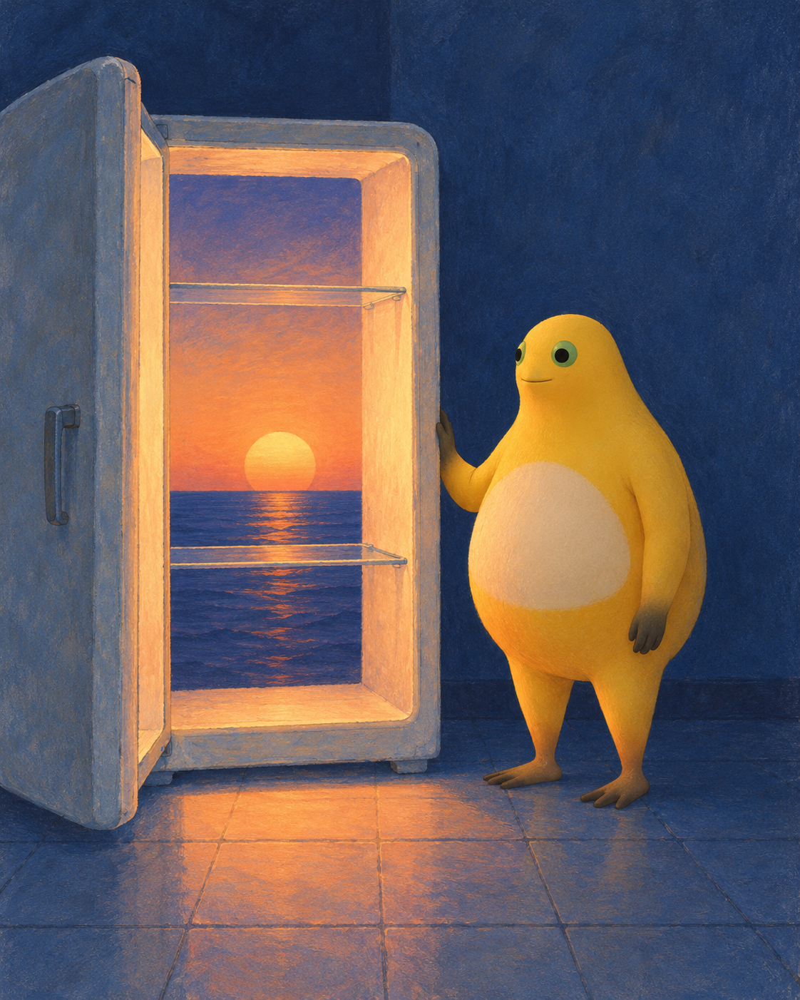
冰箱空着，却保留了一整个黄昏。透明搁板横穿海面与天空，把远方变成可以暂存的东西。奶蛙没有关门，暖光仍落在脚边：想留到明天的时刻，正在被今天慢慢照完。
本作作者：奶蛙现代艺术馆项目 · AI 辅助原创构图
画面让冰箱的矩形边界保持可信，也保留两层透明搁板。正是这些普通结构，令里面的海天不只是墙上一幅画：距离被收进深度有限的日常器物，落日成为一种没有包装的储存物。
深蓝墙面与橙黄内腔形成冷暖对照，奶蛙的黄色身体连接两边。它没有进行加工或制造，只是在门边停留。题名提出保存时间的愿望，而敞开的门和地面光斑同时留下相反的读法：保存也可能是一种继续消耗。
文火_slowfire：AI角色设定卡 Vol.003｜奶蛙｜三视图·视频生成参考
创作前查看已有图录，选取储存与时间作为这次日常器物变形的主题。两层透明搁板保留冰箱的空间线索，冷蓝墙面与暖橙内腔组织静止的观看。角色外形依据用户提供的三视图；生成首版实际查看后保留，未制作修订版。
NO. P25 · AI 辅助图像 · 数字油画质感 · 名画改编
把栏杆放平
Lay Down the Fence
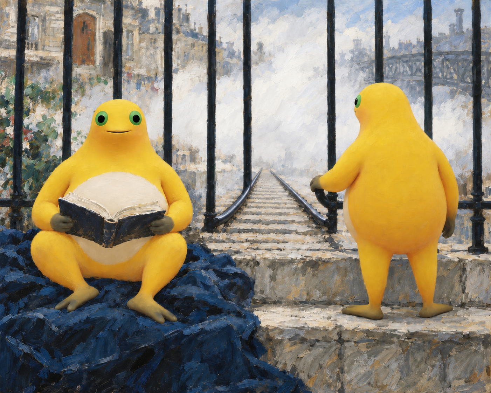
一只奶蛙把书摊在肚子上，另一只把手搭在弯下的铁栏杆上。黑色竖线到了中央，开始变成通向蒸汽深处的轨道。马奈《铁路》里挡住视线的东西，在这里试着成为去往远处的路；坐着的那只似乎并不急着出发。
本作作者：奶蛙现代艺术馆项目 · AI 辅助改编
深蓝布承接坐者的重量，奶油色腹部接住一本打开的书。右侧奶蛙的背影把注意力送向栏杆，黑色的竖向节奏在中央转成透视的斜线。蒸汽仍遮住目的地，列车没有出现；画面改变的是阻隔的形状，而不是提供一个明确出口。
马奈原作中的相反朝向、铁栅与白色蒸汽是直接的构图参考。这里的两具身体完整地改成奶蛙，衣服让位于圆腹与短肢，栏杆则被重新安排成铁路的边缘。这是当代改编中的空间玩笑，不是对原作寓意的断言。一个身体继续阅读，另一个轻轻接触铁件，变化没有要求所有人同时响应。
National Gallery of Art — The Railway
保留正面坐着阅读与背面站立观看的相反朝向，再把中央栏杆弯成通向蒸汽的轨道。经过三稿调整，末稿去掉了多出的悬空轨道；左侧接头仍呈Y形聚合，保留这一可见的结构残余，不把画中的铁件视作几何无误的构造。角色外形依据用户提供的三视图，参考附件不公开。数字油画质感为AI辅助图像中的媒介模拟；历史绘画的公有领域状态不代表角色知识产权的开放许可。
NO. P26 · AI 辅助图像 · 二维插画 · 原创
轮到桌子跳绳
The Table’s Turn to Skip Rope
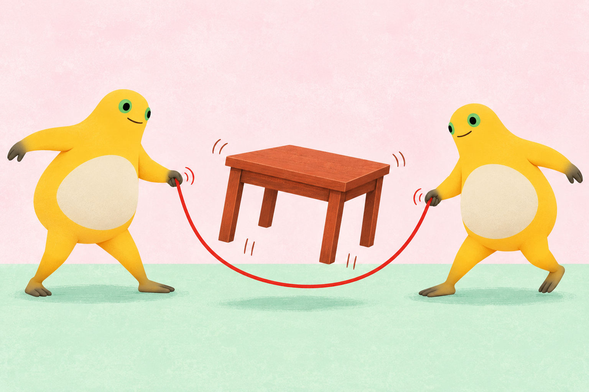
两只奶蛙甩动同一根红绳，轮到一张普通木桌跳过去。四条桌腿保持坚硬，跳绳的节奏却暂时属于家具。 红绳没有碰到桌腿，两只奶蛙把同一个节奏交给中央的家具。它们没有站在变化旁边：这一次，变化由它们一起维持。
本作作者：奶蛙现代艺术馆项目 · AI 辅助原创构图
红绳从两只奶蛙的手中连成一个低垂的弧线；弧线与桌脚之间留有空隙，四条木腿同时离地。两端的手势把家具的腾起组织成配合动作。桌子没有得到新的手脚或面孔，刚性的桌腿仍保留原来的材料线索。
粉白背景和薄荷绿地面减轻了场景的重量，黄色身体与红线让视线先经过两端，再回到中央。这里不靠放大物件制造异常，变化来自把跳绳的参与者换成家具。角色主动维持绳的节奏，桌子暂时承担通常属于身体的动作。题名把一次日常游戏写成轮换，而不是替角色决定情绪。
以双人甩绳与硬木家具的刚性相置换，保留两只正常尺度的完整角色，让它们主动完成同一根绳的协作。首稿实际查看后保留，未制作修订版；右侧角色后脚趾稍长，木桌仍带体积与木纹肌理，这些限度保留在成品中。角色形象参考用户提供的三视图，参考附件不公开；原创构图不等于角色IP原创。
NO. P29 · AI 辅助图像 · 二维插画 · 原创
今天高了两本书
Two Books Taller Today
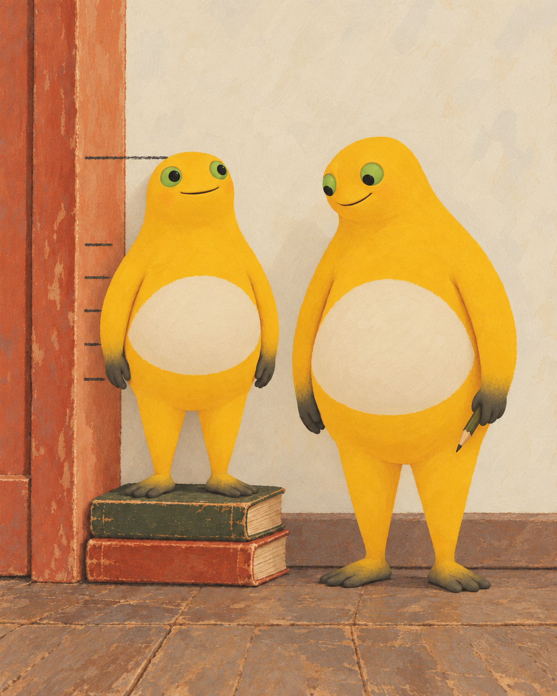
两本旧书把左侧奶蛙抬到门框较高的刻线附近。右侧奶蛙站在地板上，手里留着铅笔；门框低处的旧刻线让这次高度变化有了对照。题名把书的厚度暂时当成了长高的单位。
本作作者：奶蛙现代艺术馆项目 · AI 辅助原创构图
先从左侧双脚向下看：脚落在上层旧书的封面，第二本书把支撑接到地板。身体没有被拉长，改变的是脚下的起点。门框的横线提供了另一套稳定参照，让“今天高了”同时包含身体高度和站立位置两种读法。
右侧角色手持铅笔，与旧刻线一起把场景引向量身高的生活经验。嘴角和相邻的站姿可以被读作一种温和的配合；但知情或默契属于策展解释，画面不能证明角色的内心。暖色门框、旧书边缘和密集笔触保留了日常材料感，笑点由书堆与测量关系建立，而非旁白或文字说明。
本作经历一次生成与两次定向修正，最终保留第三版。两本书与双脚的支撑关系、门框旧刻线和铅笔构成可见线索；“温柔配合”仅为策展解读。右侧角色仍偏大，视线未完全指向书堆，新刻线略低于左侧头顶；书、门框和地板仍有较密厚涂笔触。这些限度保留在成品中。角色参考及完整提示、过程笔记不公开；原创的是场景构图，不宣称角色形象的 IP 原创。
NO. P30 · AI 辅助图像 · 数字油画质感 · 名画改编
帽子下的小笑
A Small Smile Under the Hat
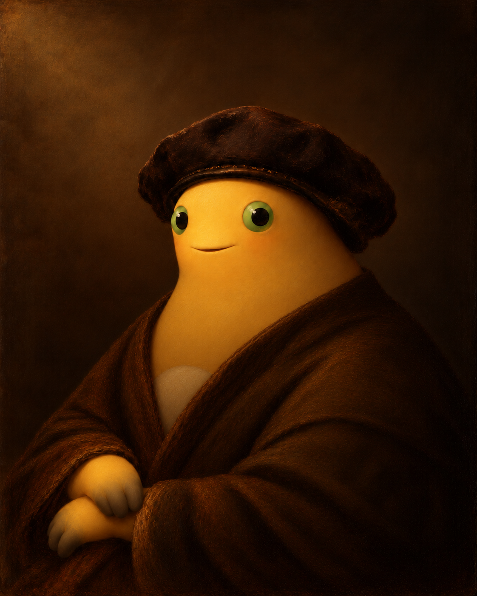
软褐帽把黄色头身压进暗袍的边缘，左上方的光留下绿色眼圈和一条小笑。两只手在下方轻叠，脸成为最亮的停留处。伦勃朗1659年《自画像》的紧凑半身、侧光与衣服关系，在这里容纳了一只常被用于逗笑的角色。
本作作者：奶蛙现代艺术馆项目 · AI 辅助改编
从帽沿走向绿色眼圈，再到轻叠的双手，暖侧光使脸与暗袍保持不同的亮度。袍服遮住了大部分身体，辨认主要落在连续的黄色头身、眼睛和短小嘴线；衣料仍保留较接近人像的圆肩轮廓，不能把它说成完全消除了原作的人形结构。
本作把熟悉的逗笑形象放入郑重肖像的观看方式中，让小笑成为最轻的一处转换。角色也可以安静地接受长时间观看，而无需额外道具或笑话说明。这是本项目对观看处境的策展解释，不是对伦勃朗原意的断言，也不能据此编造奶蛙的起源；对应历史原作仍应从馆方记录中辨认。
National Gallery of Art — Self-Portrait, 1659（1937.1.72）
National Gallery of Art — Open Access Policy
经过首稿和两轮定向修订，保留第三版：压低衣领、收短头到双手的距离，减小并压暗腹部，让脸成为最亮焦点。最终袍服肩形仍偏人像，纹理较均一，手色偏黄橄榄；这些可见限度保留，不称完美。数字油画质感是AI辅助图像中的媒介模拟。完整提示、逐版QA、私有角色参考与原作参考附件不公开；馆方开放许可只对应伦勃朗原作图像，不扩大奶蛙或奶龙角色的权利。
NO. P31 · AI 辅助图像 · 薄层绘画 · 原创
雨停了，船还在
After the Rain, the Boat Remains
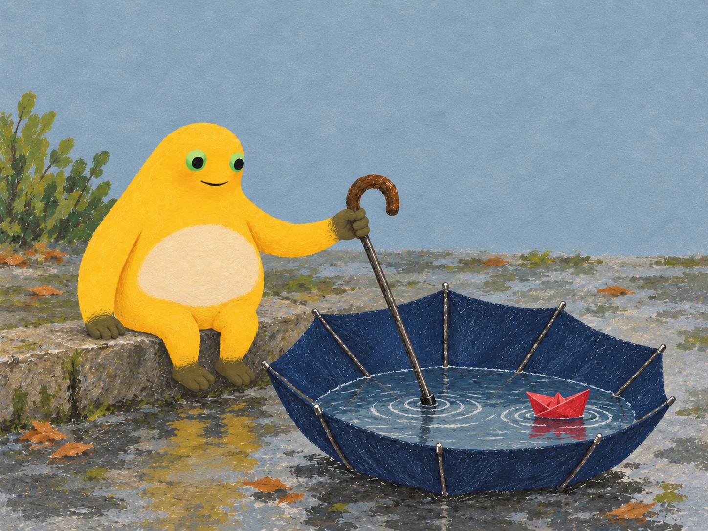
雨伞从遮挡雨水变成保存雨水的容器。红纸船很小，扶稳伞柄的手把观看留在普通尺度的照看里。
本作作者：奶蛙现代艺术馆项目 · AI辅助再创作
雨后，一只奶蛙扶着伞柄，倒置的深蓝雨伞里留着浅水与一艘红纸船。 雨伞从遮挡雨水变成保存雨水的容器。红纸船很小，扶稳伞柄的手把观看留在普通尺度的照看里。
这一场景没有指定历史名画为构图来源，伞骨与水面为绘画简化，不把浅水解释成真实航行条件。 题名与情绪读法属于当代观看解释；图像不能替未发生的动作、角色心理或科学结论作证。
选定第3版。以薄层绘画的视觉语言重新绘制角色、动作与空间，采用AI辅助生成；不是实体媒介作品。伞骨与水面为绘画简化，不把浅水解释成真实航行条件。 角色采用奶蛙（社区衍生角色），原创只指场景或改编中的构图取舍，不宣称角色IP原创、官方授权或参考图转载许可。
NO. P32 · AI 辅助图像 · 套色版画与剪纸 · 原创
这一双，不太熟
An Unfamiliar Pair
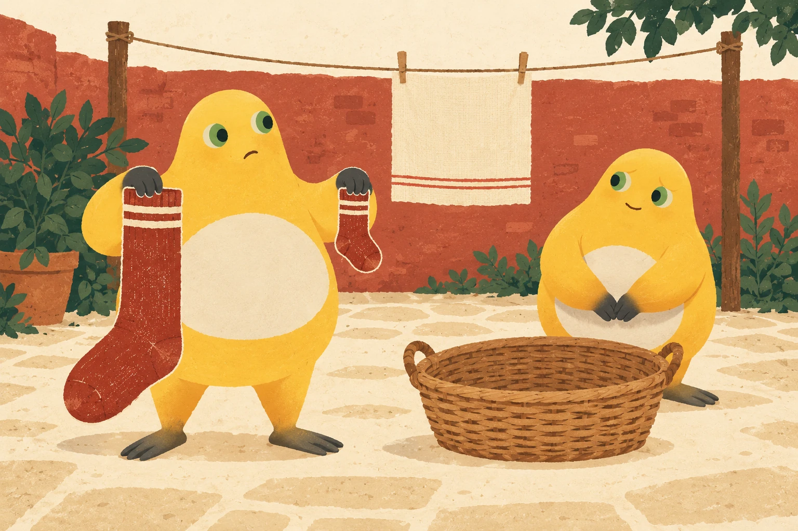
同色条纹先建立配对预期，尺寸差再打断它。篮子的遮挡与两者不同的视线，使误会保持在日常劳动中。
本作作者：奶蛙现代艺术馆项目 · AI辅助再创作
两只奶蛙站在晾衣绳前，一只举起大小悬殊的同色红袜，另一只站在空篮后。 同色条纹先建立配对预期，尺寸差再打断它。篮子的遮挡与两者不同的视线，使误会保持在日常劳动中。
这一场景没有指定历史名画为构图来源，织物和篮纹较细，足部有轻渐层，不称纯剪纸。 题名与情绪读法属于当代观看解释；图像不能替未发生的动作、角色心理或科学结论作证。
选定第1版。以套色版画与剪纸的视觉语言重新绘制角色、动作与空间，采用AI辅助生成；不是实体媒介作品。织物和篮纹较细，足部有轻渐层，不称纯剪纸。 角色采用奶蛙（社区衍生角色），原创只指场景或改编中的构图取舍，不宣称角色IP原创、官方授权或参考图转载许可。
NO. P33 · AI 辅助图像 · 数字油画 · 名画改编
两手之间
Between Two Hands
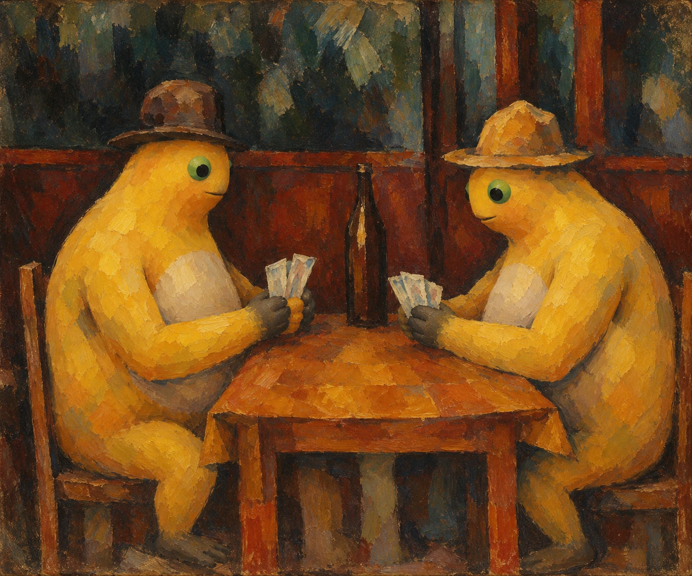
画面把动作收进各自手中的纸牌。黄色身体由相邻色块支撑，输赢留在画外，桌面维持沉静的共同空间。
本作作者：奶蛙现代艺术馆项目 · AI辅助再创作
两只奶蛙隔着赭色桌面相向握牌，中央瓶子把两边分开又连接起来。 画面把动作收进各自手中的纸牌。黄色身体由相邻色块支撑，输赢留在画外，桌面维持沉静的共同空间。
本作从Paul Cézanne《玩纸牌者 / Les Joueurs de cartes》的具体形式关系出发，左手指节局部黄色、前臂略长，油彩比原作厚；不称精确复刻。 题名与情绪读法属于当代观看解释；图像不能替未发生的动作、角色心理或科学结论作证。
历史原作与馆藏记录
选定第1版。以数字油画的视觉语言重新绘制角色、动作与空间，采用AI辅助生成；不是实体媒介作品。左手指节局部黄色、前臂略长，油彩比原作厚；不称精确复刻。 角色采用奶蛙（社区衍生角色），原创只指场景或改编中的构图取舍，不宣称角色IP原创、官方授权或参考图转载许可。
NO. P34 · AI 辅助图像 · 丝网印刷式插画 · 原创
陪番茄坐末班车
The Last Bus with a Tomato Plant
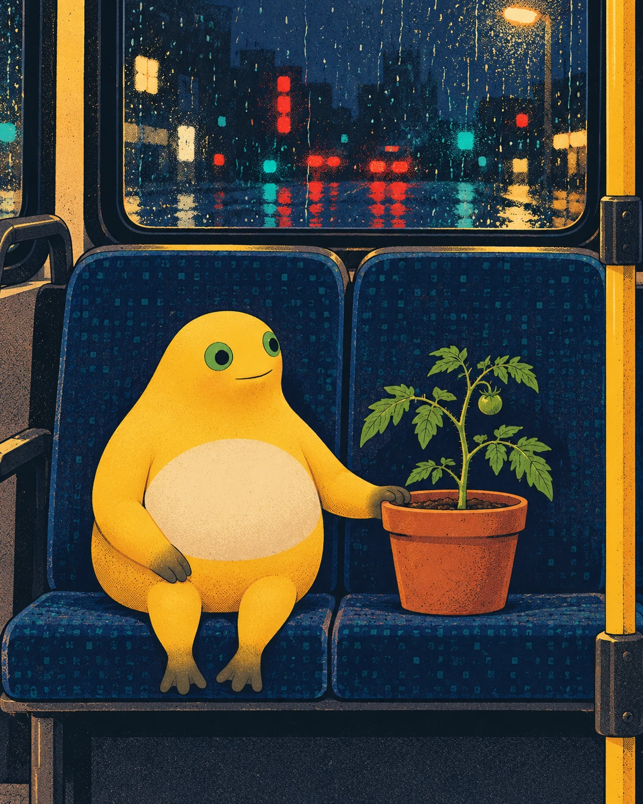
盆底与座垫之间的稳定关系，把一株植物变成沉默的同行者。照看通过扶住盆沿的小动作成立，无须补写旅行经历。
本作作者：奶蛙现代艺术馆项目 · AI辅助再创作
夜间公交车的深蓝后排上，一只奶蛙扶住邻座番茄苗的陶盆，湿窗外散着城市灯光。 盆底与座垫之间的稳定关系，把一株植物变成沉默的同行者。照看通过扶住盆沿的小动作成立，无须补写旅行经历。
这一场景没有指定历史名画为构图来源，窗外城市比预想具象，腿略长，纸粒较密；不称实体丝网印刷。 题名与情绪读法属于当代观看解释；图像不能替未发生的动作、角色心理或科学结论作证。
选定第1版。以丝网印刷式插画的视觉语言重新绘制角色、动作与空间，采用AI辅助生成；不是实体媒介作品。窗外城市比预想具象，腿略长，纸粒较密；不称实体丝网印刷。 角色采用奶蛙（社区衍生角色），原创只指场景或改编中的构图取舍，不宣称角色IP原创、官方授权或参考图转载许可。
NO. P35 · AI 辅助图像 · 数字油画 · 名画改编
把珍珠系在头巾上
A Pearl on the Headscarf
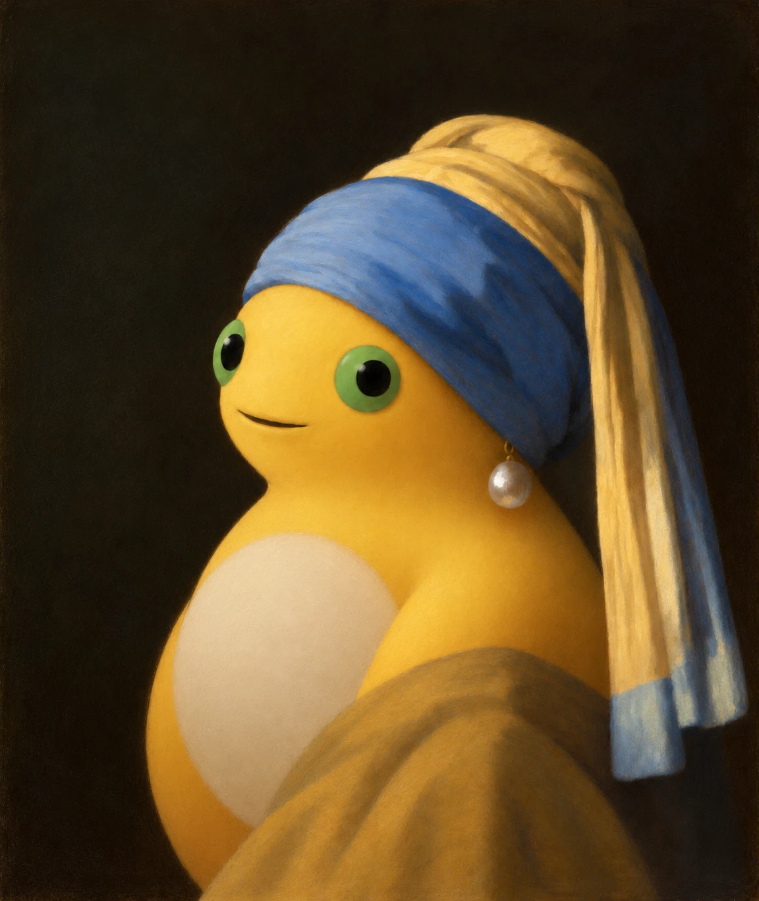
珍珠的亮点仍与暗背景形成距离，角色的绿色眼圈接过肖像辨认。短圆头胸使回望比原作更正面、温和。
本作作者：奶蛙现代艺术馆项目 · AI辅助再创作
奶蛙戴蓝黄头巾回望，白色珍珠位于巾边，左上光照亮连续的黄色头胸。 珍珠的亮点仍与暗背景形成距离，角色的绿色眼圈接过肖像辨认。短圆头胸使回望比原作更正面、温和。
本作从Johannes Vermeer《戴珍珠耳环的少女 / Girl with a Pearl Earring》的具体形式关系出发，定稿第二版压短头胸连接并减去裂纹；回望扭转弱于原作，腹部较大。 题名与情绪读法属于当代观看解释；图像不能替未发生的动作、角色心理或科学结论作证。
历史原作与馆藏记录
选定第2版。以数字油画的视觉语言重新绘制角色、动作与空间，采用AI辅助生成；不是实体媒介作品。定稿第二版压短头胸连接并减去裂纹；回望扭转弱于原作，腹部较大。 角色采用奶蛙（社区衍生角色），原创只指场景或改编中的构图取舍，不宣称角色IP原创、官方授权或参考图转载许可。
NO. P36 · AI 辅助图像 · 水彩式插画 · 原创
风先吃了一口
The Wind Took the First Bite
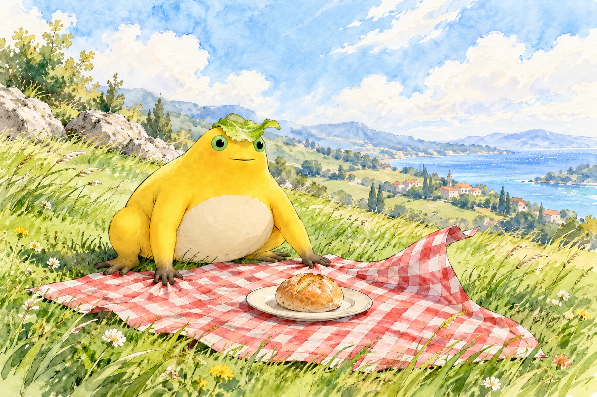
起风的布角与稳住布的双手，把小小的意外限制在一张野餐布上。额前叶片成为停顿，食物没有被夸张地吹走。
本作作者：奶蛙现代艺术馆项目 · AI辅助再创作
草地上，一只奶蛙双手压住红白野餐布，额前贴着小生菜叶，面包仍留在盘里。 起风的布角与稳住布的双手，把小小的意外限制在一张野餐布上。额前叶片成为停顿，食物没有被夸张地吹走。
这一场景没有指定历史名画为构图来源，定稿第二版缩小叶片；叶仍稍像小冠，风景较细致，不称真实水彩。 题名与情绪读法属于当代观看解释；图像不能替未发生的动作、角色心理或科学结论作证。
选定第2版。以水彩式插画的视觉语言重新绘制角色、动作与空间，采用AI辅助生成；不是实体媒介作品。定稿第二版缩小叶片；叶仍稍像小冠，风景较细致，不称真实水彩。 角色采用奶蛙（社区衍生角色），原创只指场景或改编中的构图取舍，不宣称角色IP原创、官方授权或参考图转载许可。
NO. P37 · AI 辅助图像 · 绘画色面 · 名画改编
看鱼的时间
Time to Watch the Fish
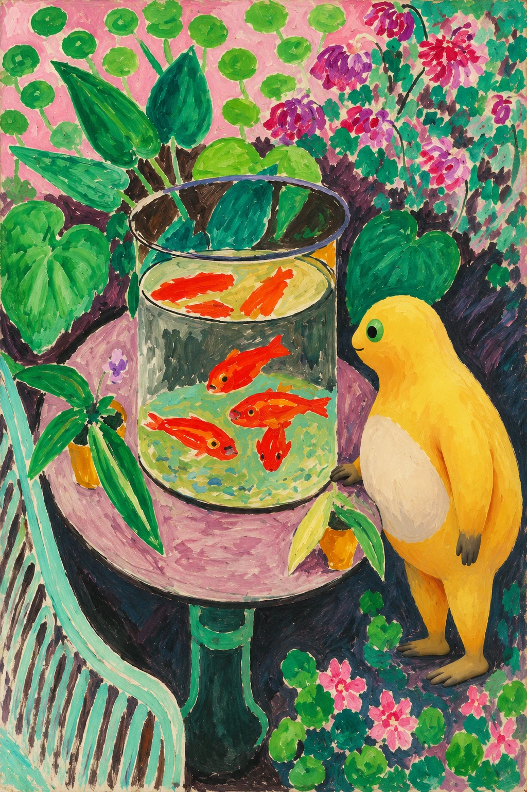
倾斜桌面、正视鱼身与浓绿植物共享压缩空间。角色成为普通尺度的观看者，红鱼仍是主要注意点。
本作作者：奶蛙现代艺术馆项目 · AI辅助再创作
粉紫圆桌上的透明鱼缸有四条红鱼和水面红色倒影，奶蛙站在右侧观鱼。 倾斜桌面、正视鱼身与浓绿植物共享压缩空间。角色成为普通尺度的观看者，红鱼仍是主要注意点。
本作从Henri Matisse《金鱼 / Gold Fish》的具体形式关系出发，小腿略长、笔触比原作均匀繁密；水面红笔是倒影，不另计第五条完整鱼。 题名与情绪读法属于当代观看解释；图像不能替未发生的动作、角色心理或科学结论作证。
历史原作与馆藏记录
选定第1版。以绘画色面的视觉语言重新绘制角色、动作与空间，采用AI辅助生成；不是实体媒介作品。小腿略长、笔触比原作均匀繁密；水面红笔是倒影，不另计第五条完整鱼。 角色采用奶蛙（社区衍生角色），原创只指场景或改编中的构图取舍，不宣称角色IP原创、官方授权或参考图转载许可。
NO. P38 · AI 辅助图像 · 铅笔与彩铅式插画 · 原创
听见你了
I Heard You
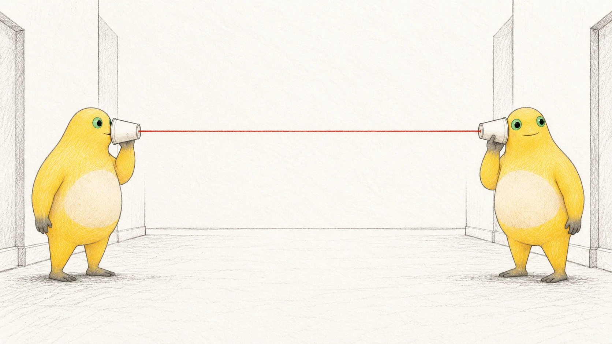
中央留白让距离可见，红线将两个普通动作接起来。图像没有声波，题名中的听见是一种观看读法。
本作作者：奶蛙现代艺术馆项目 · AI辅助再创作
两只奶蛙分站素白走廊两端，纸杯封底之间由一根直红线相连，一只对杯口，另一只把杯口贴向头侧。 中央留白让距离可见，红线将两个普通动作接起来。图像没有声波，题名中的听见是一种观看读法。
这一场景没有指定历史名画为构图来源，黄色较鲜亮、腿略长、地面排线较密；不据静态图证明真实声音传播。 题名与情绪读法属于当代观看解释；图像不能替未发生的动作、角色心理或科学结论作证。
选定第1版。以铅笔与彩铅式插画的视觉语言重新绘制角色、动作与空间，采用AI辅助生成；不是实体媒介作品。黄色较鲜亮、腿略长、地面排线较密；不据静态图证明真实声音传播。 角色采用奶蛙（社区衍生角色），原创只指场景或改编中的构图取舍，不宣称角色IP原创、官方授权或参考图转载许可。
NO. P39 · AI 辅助图像 · 墨线淡彩 · 原创
剥到一半
Peeled Halfway
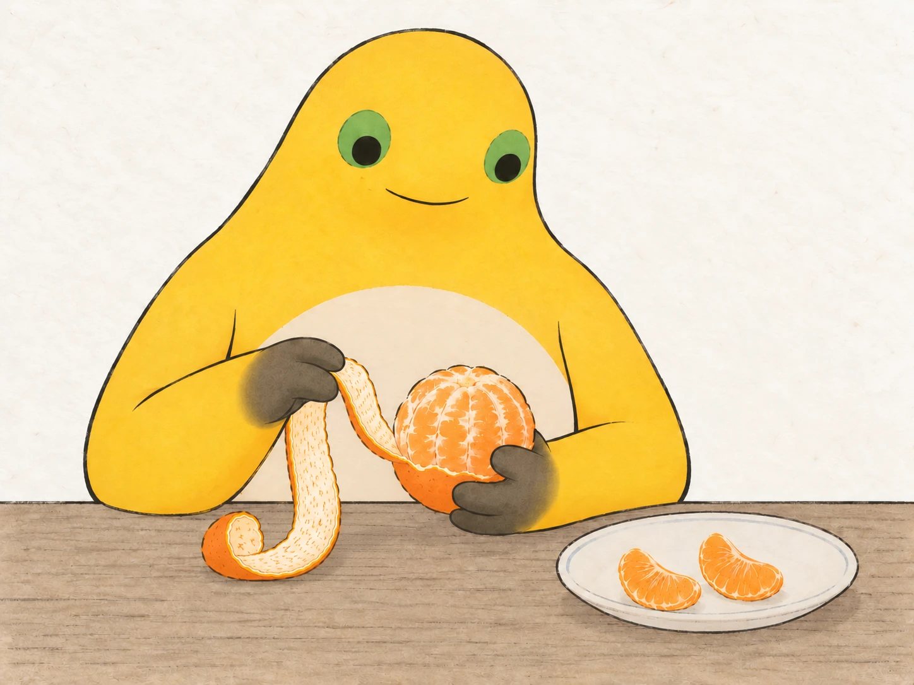
连接手、果壳与桌面的皮带，使停顿有一个清楚的方向。已经放下的两瓣与尚在手中的橘子，让日常劳动保持未完成状态。
本作作者：奶蛙现代艺术馆项目 · AI辅助再创作
奶蛙在木桌前剥橘子，连续果皮从手中落向桌面，白碟上留着两瓣。 连接手、果壳与桌面的皮带，使停顿有一个清楚的方向。已经放下的两瓣与尚在手中的橘子，让日常劳动保持未完成状态。
这一场景没有指定历史名画为构图来源，第三版修正果皮连接与分叉；轮廓较粗、果实略大，缺瓣缺口不清，不称严格木版画。 题名与情绪读法属于当代观看解释；图像不能替未发生的动作、角色心理或科学结论作证。
选定第3版。以墨线淡彩的视觉语言重新绘制角色、动作与空间，采用AI辅助生成；不是实体媒介作品。第三版修正果皮连接与分叉；轮廓较粗、果实略大，缺瓣缺口不清，不称严格木版画。 角色采用奶蛙（社区衍生角色），原创只指场景或改编中的构图取舍，不宣称角色IP原创、官方授权或参考图转载许可。
NO. P40 · AI 辅助图像 · 薄洗色绘画 · 名画改编
红圆经过的时候
When the Red Circle Passes
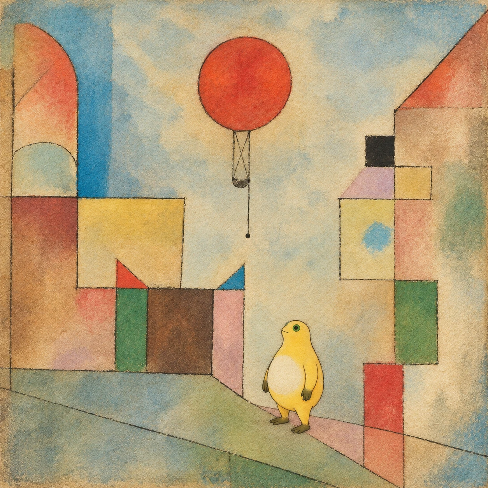
角色没有替换红圆，而是在城市中加入一个观看位置。红球继续是第一焦点，黄色身体给直线构成留下短暂停顿。
本作作者：奶蛙现代艺术馆项目 · AI辅助再创作
红气球悬在几何城市上方，一只很小的奶蛙在下方仰望，曲线身体与直线建筑相对。 角色没有替换红圆，而是在城市中加入一个观看位置。红球继续是第一焦点，黄色身体给直线构成留下短暂停顿。
本作从Paul Klee《红气球 / Red Balloon》的具体形式关系出发，定稿第二版减小角色并减轻肌理；角色约画高23%、纸纹略均匀，侧面只见一眼。 题名与情绪读法属于当代观看解释；图像不能替未发生的动作、角色心理或科学结论作证。
历史原作与馆藏记录
选定第2版。以薄洗色绘画的视觉语言重新绘制角色、动作与空间，采用AI辅助生成；不是实体媒介作品。定稿第二版减小角色并减轻肌理；角色约画高23%、纸纹略均匀，侧面只见一眼。 角色采用奶蛙（社区衍生角色），原创只指场景或改编中的构图取舍，不宣称角色IP原创、官方授权或参考图转载许可。
NO. P41 · AI 辅助图像 · 平面色块 · 原创
差一块
One Tile Short
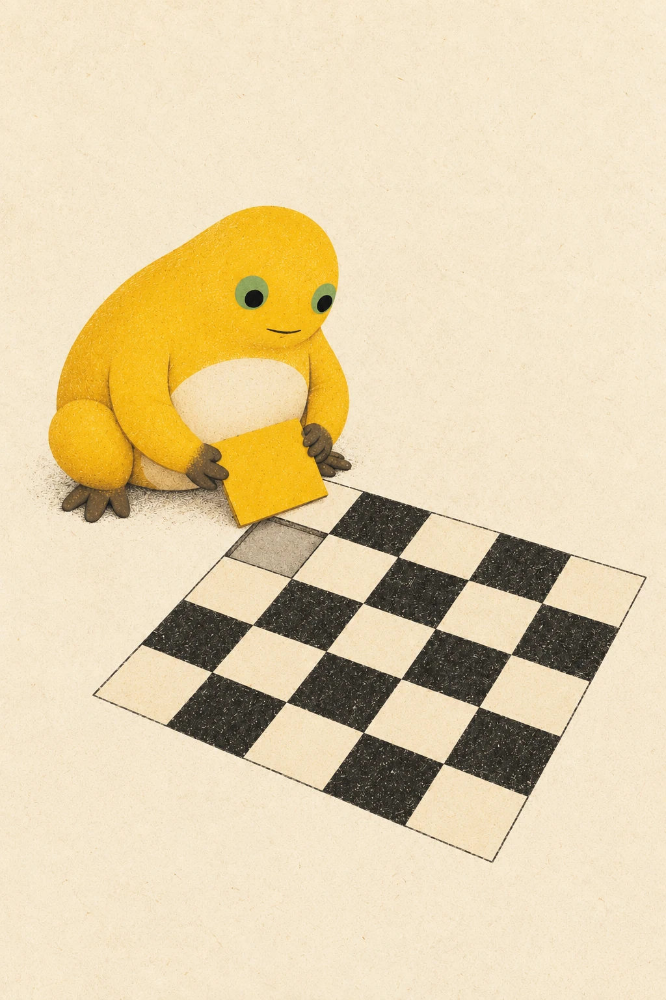
规则已经铺好，缺口也给出尺寸。黄色身体与同色砖共同面对黑白格，补上空位同时意味着作一个颜色决定。
本作作者：奶蛙现代艺术馆项目 · AI辅助再创作
奶蛙蹲在黑白棋盘地砖旁，两手举着一块黄色方砖，对照唯一浅灰空位。 规则已经铺好，缺口也给出尺寸。黄色身体与同色砖共同面对黑白格，补上空位同时意味着作一个颜色决定。
这一场景没有指定历史名画为构图来源，黄砖与空位的对应为图画关系，不声明建筑尺寸精确或已经完成铺砖。 题名与情绪读法属于当代观看解释；图像不能替未发生的动作、角色心理或科学结论作证。
选定第2版。以平面色块的视觉语言重新绘制角色、动作与空间，采用AI辅助生成；不是实体媒介作品。黄砖与空位的对应为图画关系，不声明建筑尺寸精确或已经完成铺砖。 角色采用奶蛙（社区衍生角色），原创只指场景或改编中的构图取舍，不宣称角色IP原创、官方授权或参考图转载许可。
NO. P43 · AI 辅助图像 · 粉彩式绘画 · 原创
模特请别动
Please Hold Still
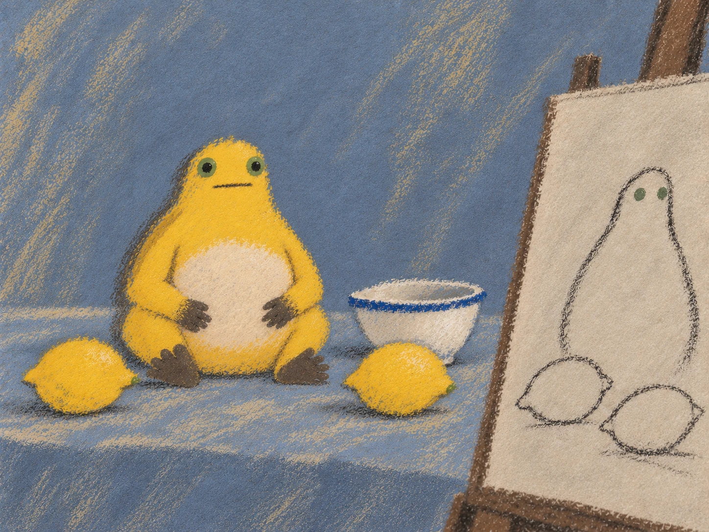
同一桌面让角色与普通静物共享颜色和外轮廓。画中画不靠画家入镜，便把活着的模特与被描绘的形状相连。
本作作者：奶蛙现代艺术馆项目 · AI辅助再创作
奶蛙坐在两枚柠檬和蓝白碗之间，右前方画纸上出现绿眼梨形与柠檬的轮廓对应。 同一桌面让角色与普通静物共享颜色和外轮廓。画中画不靠画家入镜，便把活着的模特与被描绘的形状相连。
这一场景没有指定历史名画为构图来源，定稿第三版；比例、纸面和笔触有简化，不把画中轮廓当准确肖像测绘。 题名与情绪读法属于当代观看解释；图像不能替未发生的动作、角色心理或科学结论作证。
选定第3版。以粉彩式绘画的视觉语言重新绘制角色、动作与空间，采用AI辅助生成；不是实体媒介作品。定稿第三版；比例、纸面和笔触有简化，不把画中轮廓当准确肖像测绘。 角色采用奶蛙（社区衍生角色），原创只指场景或改编中的构图取舍，不宣称角色IP原创、官方授权或参考图转载许可。
NO. P44 · AI 辅助图像 · 数字绘画 · 名画改编
桥上那一声
That Sound on the Bridge
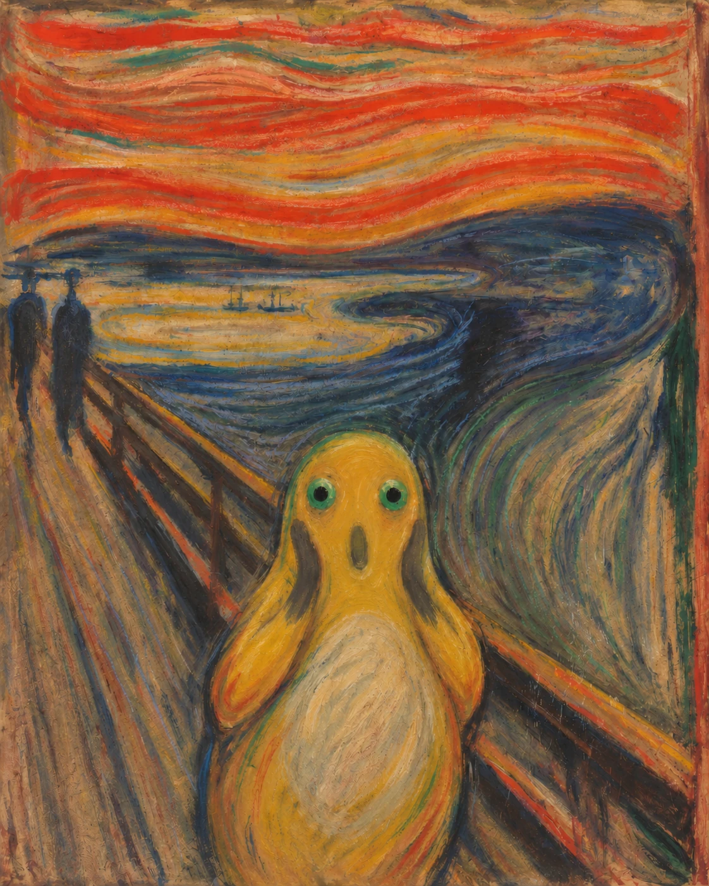
斜桥提供稳定方向，天空和水岸却把方向弯开。熟悉面孔进入强烈的张口姿势，题名的声音仍是图像邀请。
本作作者：奶蛙现代艺术馆项目 · AI辅助再创作
桥上奶蛙双手贴近张口的脸，红橙天空与暗蓝水岸弯曲延伸，后方仍有小人影。 斜桥提供稳定方向，天空和水岸却把方向弯开。熟悉面孔进入强烈的张口姿势，题名的声音仍是图像邀请。
本作从Edvard Munch《呐喊 / The Scream》的具体形式关系出发，选定第二版；不把画面当实际发声证据，也不将当代角色情绪当蒙克原意。 题名与情绪读法属于当代观看解释；图像不能替未发生的动作、角色心理或科学结论作证。
历史原作与馆藏记录
选定第2版。以数字绘画的视觉语言重新绘制角色、动作与空间，采用AI辅助生成；不是实体媒介作品。选定第二版；不把画面当实际发声证据，也不将当代角色情绪当蒙克原意。 角色采用奶蛙（社区衍生角色），原创只指场景或改编中的构图取舍，不宣称角色IP原创、官方授权或参考图转载许可。
NO. P46 · AI 辅助图像 · 套色木刻式插画 · 原创
围巾分你一半
Half My Scarf for You
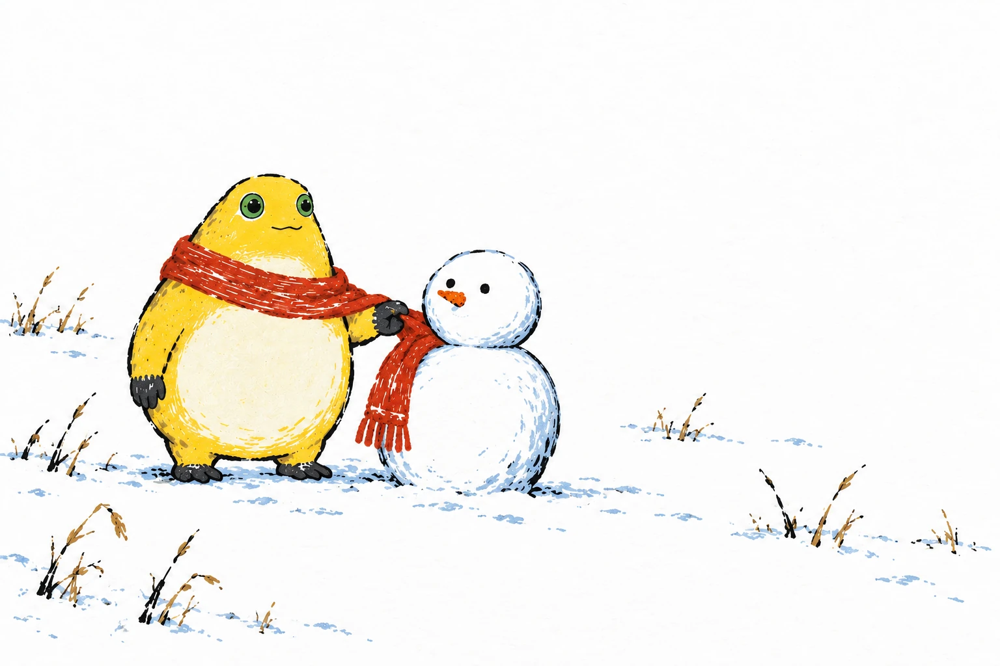
红色织物在两个不同材料的身体之间延续。照看不依靠夸张表情，而落在围巾长度和肩侧接点上。
本作作者：奶蛙现代艺术馆项目 · AI辅助再创作
雪地上，奶蛙和小雪人共享一条红围巾，稀疏草梗围着大片白地。 红色织物在两个不同材料的身体之间延续。照看不依靠夸张表情，而落在围巾长度和肩侧接点上。
这一场景没有指定历史名画为构图来源，选定第三版；雪人没有生命活动的证据，木刻质感为数字模拟。 题名与情绪读法属于当代观看解释；图像不能替未发生的动作、角色心理或科学结论作证。
选定第3版。以套色木刻式插画的视觉语言重新绘制角色、动作与空间，采用AI辅助生成；不是实体媒介作品。选定第三版；雪人没有生命活动的证据，木刻质感为数字模拟。 角色采用奶蛙（社区衍生角色），原创只指场景或改编中的构图取舍，不宣称角色IP原创、官方授权或参考图转载许可。
NO. P47 · AI 辅助图像 · 数字油画 · 名画改编
沙发走进丛林
The Sofa Enters the Jungle
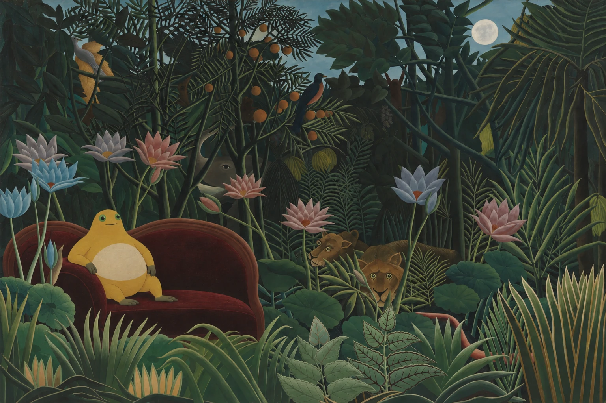
沙发仍保持可以坐下的形状，周围却没有房间。角色的安静姿态与密集植物形成不同的观看速度。
本作作者：奶蛙现代艺术馆项目 · AI辅助再创作
茂密夜间丛林里，一只奶蛙坐在暗红沙发上，植物、花朵与动物包围室内家具。 沙发仍保持可以坐下的形状，周围却没有房间。角色的安静姿态与密集植物形成不同的观看速度。
本作从Henri Rousseau《梦 / The Dream》的具体形式关系出发，选定第二版；植物与角色笔触有差异，不称复刻原作或真实梦境记忆。 题名与情绪读法属于当代观看解释；图像不能替未发生的动作、角色心理或科学结论作证。
历史原作与馆藏记录
选定第2版。以数字油画的视觉语言重新绘制角色、动作与空间，采用AI辅助生成；不是实体媒介作品。选定第二版；植物与角色笔触有差异，不称复刻原作或真实梦境记忆。 角色采用奶蛙（社区衍生角色），原创只指场景或改编中的构图取舍，不宣称角色IP原创、官方授权或参考图转载许可。
NO. P48 · AI 辅助图像 · 绘画插画 · 原创
这一页归猫
This Page Belongs to the Cat
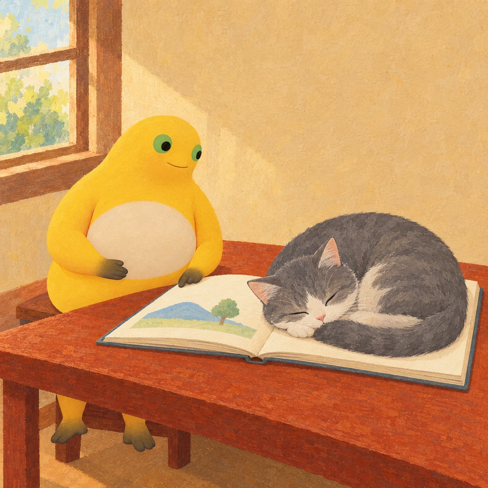
书本仍是阅读对象，猫的体量却决定了此刻哪一页能够使用。相邻视线让等待成为普通的共同处境。
本作作者：奶蛙现代艺术馆项目 · AI辅助再创作
靠窗桌上，猫蜷在打开的书页间，奶蛙站在桌边看着被占据的页面。 书本仍是阅读对象，猫的体量却决定了此刻哪一页能够使用。相邻视线让等待成为普通的共同处境。
这一场景没有指定历史名画为构图来源，只保留首版；静态姿势不证明猫正在睡或角色已经读完书。 题名与情绪读法属于当代观看解释；图像不能替未发生的动作、角色心理或科学结论作证。
选定第1版。以绘画插画的视觉语言重新绘制角色、动作与空间，采用AI辅助生成；不是实体媒介作品。只保留首版；静态姿势不证明猫正在睡或角色已经读完书。 角色采用奶蛙（社区衍生角色），原创只指场景或改编中的构图取舍，不宣称角色IP原创、官方授权或参考图转载许可。
NO. P49 · AI 辅助图像 · 木版画式绘画 · 名画改编
桶里看见富士山
Mount Fuji through the Tub
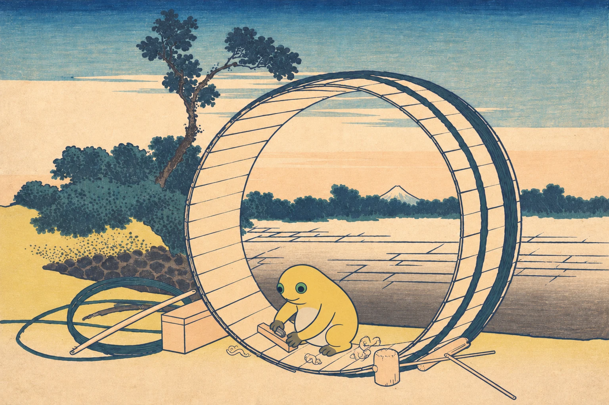
圆形桶缘把近处劳动与远山装在同一个视线中。角色必须进入桶边的受力与工具关系，不能只作为脸部替换。
本作作者：奶蛙现代艺术馆项目 · AI辅助再创作
奶蛙在大木桶圆环下方工作，富士山通过桶的开口出现在远处。 圆形桶缘把近处劳动与远山装在同一个视线中。角色必须进入桶边的受力与工具关系，不能只作为脸部替换。
本作从葛饰北斋《冨嶽三十六景 尾州不二見原》的具体形式关系出发，定稿保留工件与手部绘画简化；不把工具位置当真实木工教程。 题名与情绪读法属于当代观看解释；图像不能替未发生的动作、角色心理或科学结论作证。
历史原作与馆藏记录
选定第2版。以木版画式绘画的视觉语言重新绘制角色、动作与空间，采用AI辅助生成；不是实体媒介作品。定稿保留工件与手部绘画简化；不把工具位置当真实木工教程。 角色采用奶蛙（社区衍生角色），原创只指场景或改编中的构图取舍，不宣称角色IP原创、官方授权或参考图转载许可。
NO. P50 · AI 辅助图像 · 铅笔淡彩 · 原创
落款
The Signature
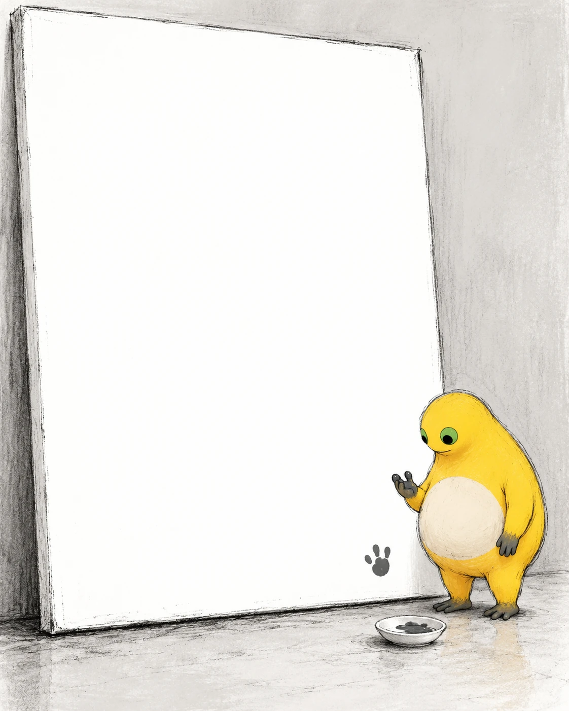
画布的大块空白使角落痕迹获得重量。落款从一个名字转为身体留下的印记，作者与图像通过尺度联系起来。
本作作者：奶蛙现代艺术馆项目 · AI辅助再创作
巨幅白画布靠着墙，奶蛙站在右下角看深色小手印，地面放着小颜料碟。 画布的大块空白使角落痕迹获得重量。落款从一个名字转为身体留下的印记，作者与图像通过尺度联系起来。
这一场景没有指定历史名画为构图来源，手印很小、画布透视有绘画简化，不据图确认印迹刚刚形成。 题名与情绪读法属于当代观看解释；图像不能替未发生的动作、角色心理或科学结论作证。
选定第1版。以铅笔淡彩的视觉语言重新绘制角色、动作与空间，采用AI辅助生成；不是实体媒介作品。手印很小、画布透视有绘画简化，不据图确认印迹刚刚形成。 角色采用奶蛙（社区衍生角色），原创只指场景或改编中的构图取舍，不宣称角色IP原创、官方授权或参考图转载许可。
NO. P51 · AI 辅助图像 · 印象派式色面 · 名画改编
晒干的下午
An Afternoon Dried in the Sun
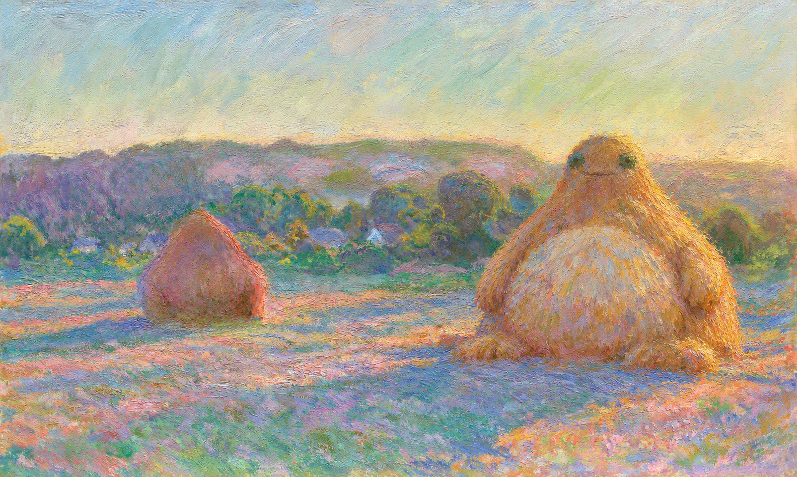
角色没有站在麦垛旁，而从堆叠材料与日光中被辨认出来。重复体量与不同受光使身份转移到环境。
本作作者：奶蛙现代艺术馆项目 · AI辅助再创作
夕照田野中，大小不同的麦垛以黄身体、绿眼和浅腹线索成为角色，长影横过地面。 角色没有站在麦垛旁，而从堆叠材料与日光中被辨认出来。重复体量与不同受光使身份转移到环境。
本作从Claude Monet《Stacks of Wheat (End of Summer)》的具体形式关系出发，不称原作笔法完全一致，也不把麦垛造型当真实材料变形事件。 题名与情绪读法属于当代观看解释；图像不能替未发生的动作、角色心理或科学结论作证。
历史原作与馆藏记录
选定第1版。以印象派式色面的视觉语言重新绘制角色、动作与空间，采用AI辅助生成；不是实体媒介作品。不称原作笔法完全一致，也不把麦垛造型当真实材料变形事件。 角色采用奶蛙（社区衍生角色），原创只指场景或改编中的构图取舍，不宣称角色IP原创、官方授权或参考图转载许可。
NO. P53 · AI 辅助图像 · 彩玻璃式绘画 · 原创
下午被分成几块
The Afternoon in Pieces
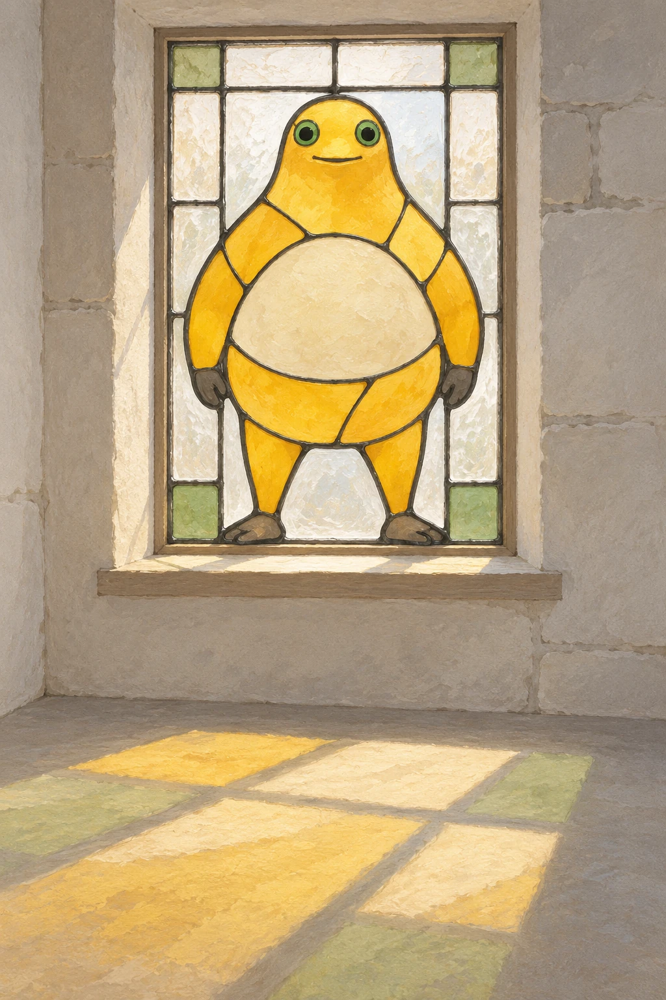
身体既是角色，也是透光建筑材料。地面接收的是简化色光，辨认不必再复制一个完整角色。
本作作者：奶蛙现代艺术馆项目 · AI辅助再创作
窗中的黄色奶蛙被深色铅条分成玻璃块，暖色光区落在室内石地上。 身体既是角色，也是透光建筑材料。地面接收的是简化色光，辨认不必再复制一个完整角色。
这一场景没有指定历史名画为构图来源，不称真实彩窗工艺或光学测算，落地光区为图画简化。 题名与情绪读法属于当代观看解释；图像不能替未发生的动作、角色心理或科学结论作证。
选定第1版。以彩玻璃式绘画的视觉语言重新绘制角色、动作与空间，采用AI辅助生成；不是实体媒介作品。不称真实彩窗工艺或光学测算，落地光区为图画简化。 角色采用奶蛙（社区衍生角色），原创只指场景或改编中的构图取舍，不宣称角色IP原创、官方授权或参考图转载许可。
NO. P54 · AI 辅助图像 · 纺织纹样式绘画 · 名画改编
草莓留给谁
Who Gets the Strawberry
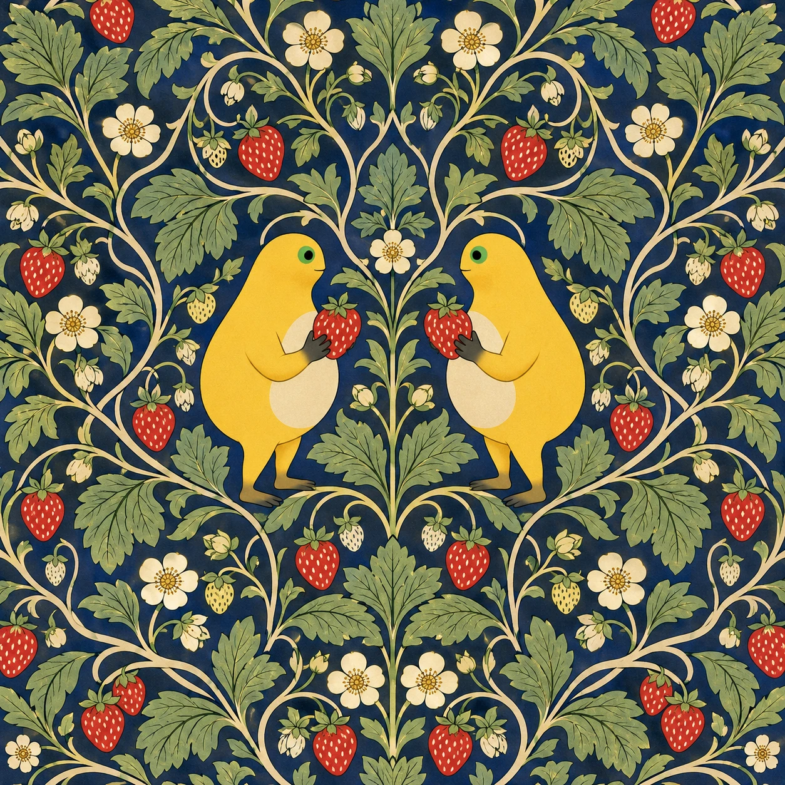
角色进入成对动物和植物间隙的纹样秩序，身体成为可以重复的设计单位。抱住果实的安静动作替代了直接偷食。
本作作者：奶蛙现代艺术馆项目 · AI辅助再创作
靛蓝底上，两只相向奶蛙各抱红草莓，花叶曲线向上下重复连接。 角色进入成对动物和植物间隙的纹样秩序，身体成为可以重复的设计单位。抱住果实的安静动作替代了直接偷食。
本作从William Morris《Strawberry Thief》的具体形式关系出发，植物节奏重新绘制，非逐线描摹；不称实体织物或原作所有鸟姿完整保留。 题名与情绪读法属于当代观看解释；图像不能替未发生的动作、角色心理或科学结论作证。
历史原作与馆藏记录
角色参考作品与发布者来源
选定第1版。以纺织纹样式绘画的视觉语言重新绘制角色、动作与空间，采用AI辅助生成；不是实体媒介作品。植物节奏重新绘制，非逐线描摹；不称实体织物或原作所有鸟姿完整保留。 角色采用奶蛙（社区衍生角色），原创只指场景或改编中的构图取舍，不宣称角色IP原创、官方授权或参考图转载许可。
NO. P55 · AI 辅助图像 · 图形色面 · 原创
条纹在这里绕行
The Stripes Take a Detour
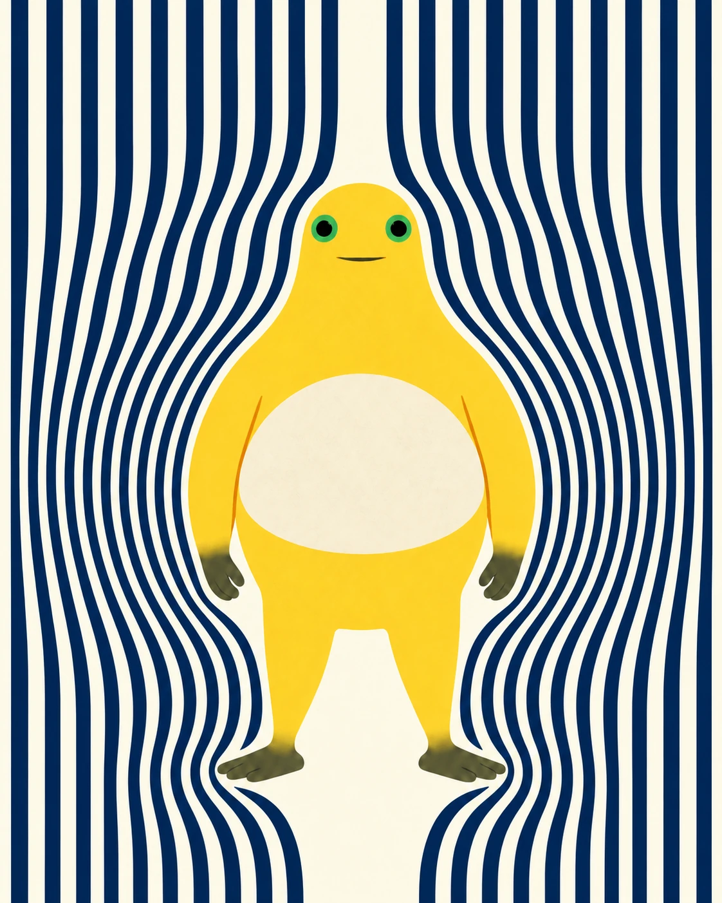
变化由线条承担，角色保持平静。弯曲使一个普通站姿改变了整片背景的秩序。
本作作者：奶蛙现代艺术馆项目 · AI辅助再创作
深蓝平行条纹在静止奶蛙的黄色轮廓两侧弯曲，让出身体所在的白色区域。 变化由线条承担，角色保持平静。弯曲使一个普通站姿改变了整片背景的秩序。
这一场景没有指定历史名画为构图来源，不归为具体历史作品改编，不把条纹当科学流场或实测光学模型。 题名与情绪读法属于当代观看解释；图像不能替未发生的动作、角色心理或科学结论作证。
选定第3版。以图形色面的视觉语言重新绘制角色、动作与空间，采用AI辅助生成；不是实体媒介作品。不归为具体历史作品改编，不把条纹当科学流场或实测光学模型。 角色采用奶蛙（社区衍生角色），原创只指场景或改编中的构图取舍，不宣称角色IP原创、官方授权或参考图转载许可。
NO. P56 · AI 辅助图像 · 未来主义式绘画 · 名画改编
走一步，风拐弯
One Step Turns the Wind
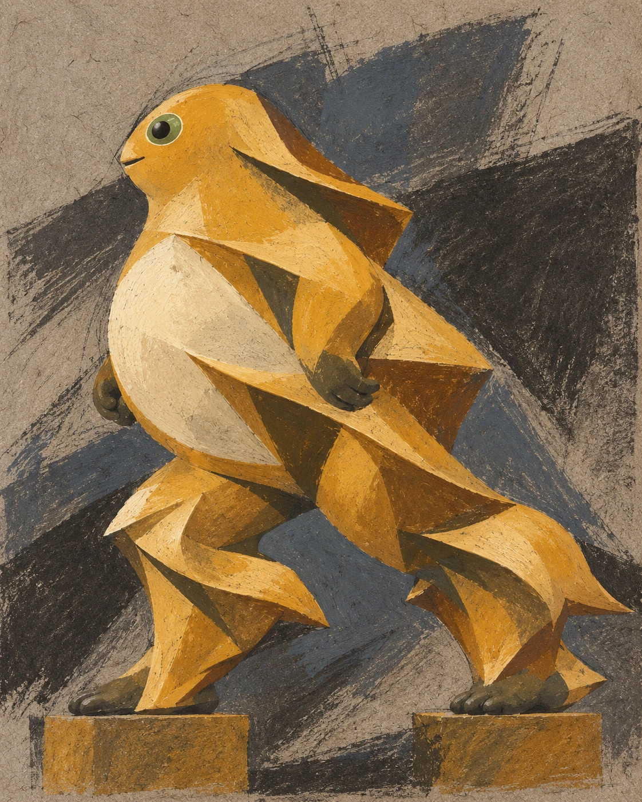
行走被拆成可以同时看到的材料方向。保留前进的结构关系，角色辨認在几何化身体中变弱也成为可见代价。
本作作者：奶蛙现代艺术馆项目 · AI辅助再创作
黄色角色以连续折面迈步，腿与背后展开的形体在灰褐空间中形成流线。 行走被拆成可以同时看到的材料方向。保留前进的结构关系，角色辨認在几何化身体中变弱也成为可见代价。
本作从Umberto Boccioni《Unique Forms of Continuity in Space》的具体形式关系出发，参考1913年造型、1950年铸件记录；图像不是新制三维雕塑，未恢复Blender制作。 题名与情绪读法属于当代观看解释；图像不能替未发生的动作、角色心理或科学结论作证。
历史原作与馆藏记录
选定第2版。以未来主义式绘画的视觉语言重新绘制角色、动作与空间，采用AI辅助生成；不是实体媒介作品。参考1913年造型、1950年铸件记录；图像不是新制三维雕塑，未恢复Blender制作。 角色采用奶蛙（社区衍生角色），原创只指场景或改编中的构图取舍，不宣称角色IP原创、官方授权或参考图转载许可。
NO. P57 · AI 辅助图像 · 裁纸拼贴式绘画 · 原创
四个方向都朝下
Four Ways Down
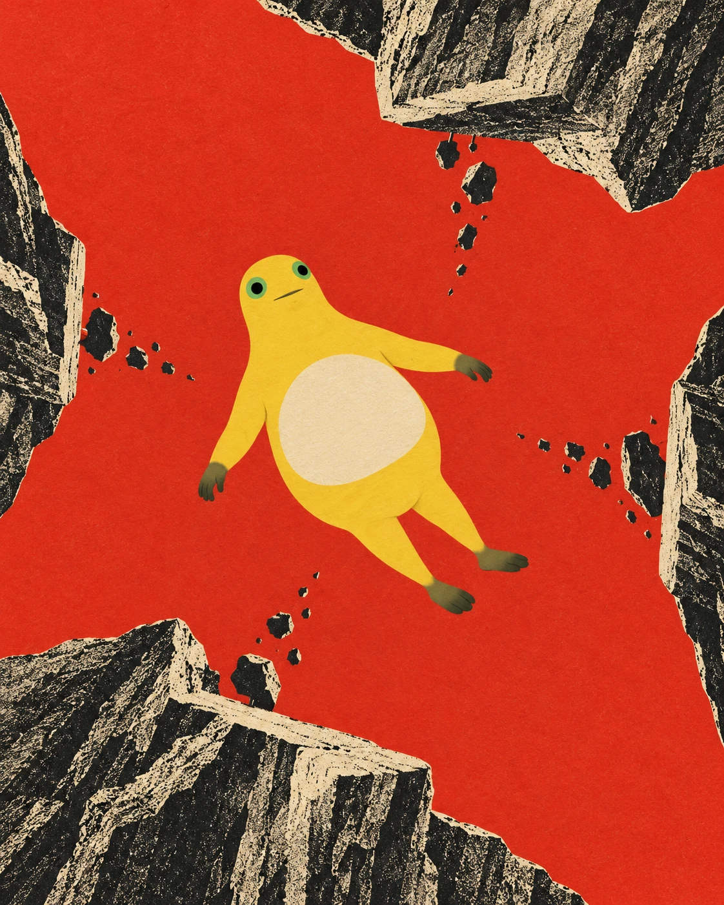
各块岩层给出自己的朝下，红色负空间拒绝一个共同地平线。完整身体提供辨认锚点，位置却无法靠单一重力解释。
本作作者：奶蛙现代艺术馆项目 · AI辅助再创作
四块黑白岩层从画面边缘向朱红中央伸入，一只完整奶蛙斜悬在不同方向的空处。 各块岩层给出自己的朝下，红色负空间拒绝一个共同地平线。完整身体提供辨认锚点，位置却无法靠单一重力解释。
这一场景没有指定历史名画为构图来源，只保留首版；是二维空间想象，不声称真实失重或统一地质结构。 题名与情绪读法属于当代观看解释；图像不能替未发生的动作、角色心理或科学结论作证。
选定第1版。以裁纸拼贴式绘画的视觉语言重新绘制角色、动作与空间，采用AI辅助生成；不是实体媒介作品。只保留首版；是二维空间想象，不声称真实失重或统一地质结构。 角色采用奶蛙（社区衍生角色），原创只指场景或改编中的构图取舍，不宣称角色IP原创、官方授权或参考图转载许可。
NO. P59 · AI 辅助图像 · 地貌式绘画 · 原创
河岸长成了我
The Riverbank Grows into Me
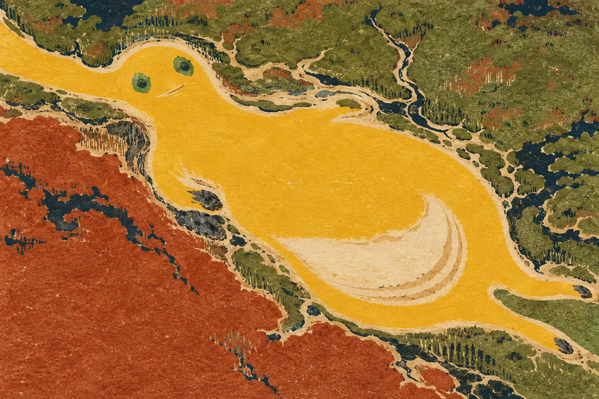
角色从站在风景中转为被地貌辨认出来。河岸给出连续身体，材质则把身份分散到远近的地表。
本作作者：奶蛙现代艺术馆项目 · AI辅助再创作
河道与岸线围出黄色梨形地貌，绿色眼睛与浅色腹部线索进入山林、水岸和村落之间。 角色从站在风景中转为被地貌辨认出来。河岸给出连续身体，材质则把身份分散到远近的地表。
这一场景没有指定历史名画为构图来源，选定第二版；为场景构图想象，不是地理测绘或真实地形。 题名与情绪读法属于当代观看解释；图像不能替未发生的动作、角色心理或科学结论作证。
选定第2版。以地貌式绘画的视觉语言重新绘制角色、动作与空间，采用AI辅助生成；不是实体媒介作品。选定第二版；为场景构图想象，不是地理测绘或真实地形。 角色采用奶蛙（社区衍生角色），原创只指场景或改编中的构图取舍，不宣称角色IP原创、官方授权或参考图转载许可。
NO. P60 · AI 辅助图像 · 几何绘画 · 名画改编
身体学会几何
The Body Learns Geometry
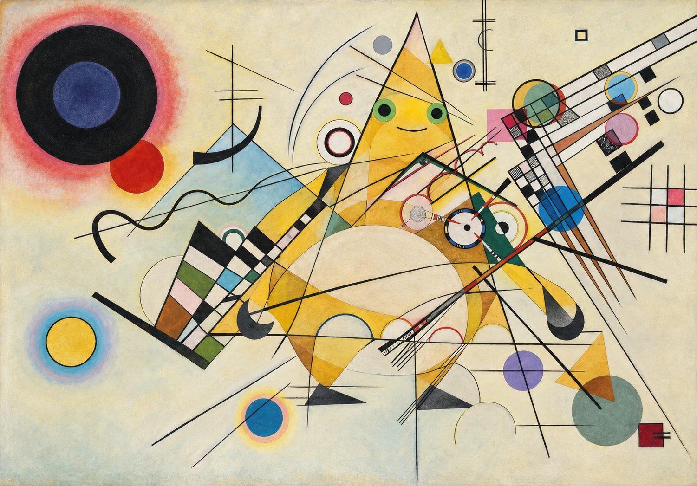
身体加入原作的方向和节奏体系，脸不再能独立控制观看。识别线索与几何线的交叉共同决定停留位置。
本作作者：奶蛙现代艺术馆项目 · AI辅助再创作
圆、斜线、三角与格网穿过黄色角色，绿眼和浅腹嵌在几何构成里。 身体加入原作的方向和节奏体系，脸不再能独立控制观看。识别线索与几何线的交叉共同决定停留位置。
本作从Vasily Kandinsky《Composition 8 (Komposition 8)》的具体形式关系出发，几何化不是标准形设复刻，不推断康定斯基的唯一意义。 题名与情绪读法属于当代观看解释；图像不能替未发生的动作、角色心理或科学结论作证。
历史原作与馆藏记录
角色参考作品与发布者来源
选定第1版。以几何绘画的视觉语言重新绘制角色、动作与空间，采用AI辅助生成；不是实体媒介作品。几何化不是标准形设复刻，不推断康定斯基的唯一意义。 角色采用奶蛙（社区衍生角色），原创只指场景或改编中的构图取舍，不宣称角色IP原创、官方授权或参考图转载许可。
NO. P61 · AI 辅助图像 · 平面漫画插画 · 原创
肚子先冲线
The Belly Reaches the Finish First
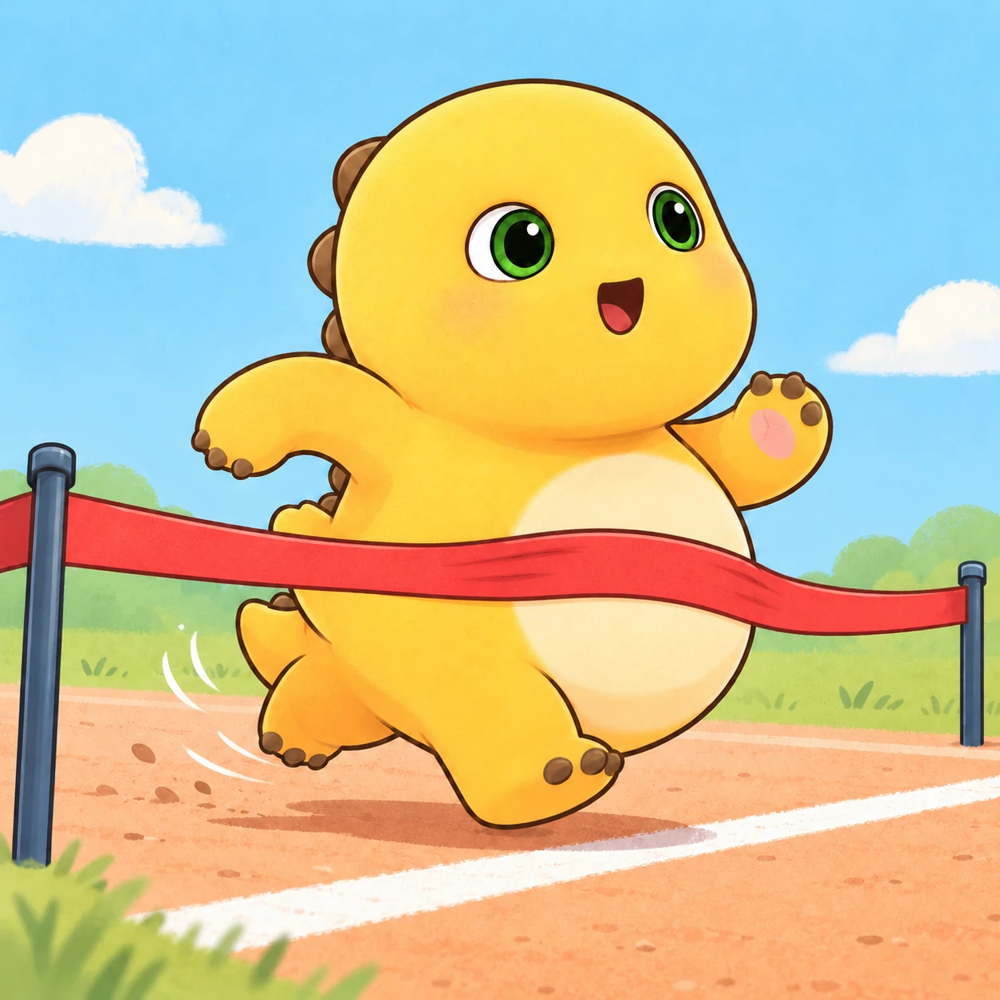
肚子先到达红带，短腿仍保持奔跑姿势。轻微的时间差来自身体比例，而非额外道具或字幕。
本作作者：奶蛙现代艺术馆项目 · AI辅助再创作
大圆头奶龙向前跑，红色终点带横过突出的圆肚，短肢、棕爪和背棘可辨。 肚子先到达红带，短腿仍保持奔跑姿势。轻微的时间差来自身体比例，而非额外道具或字幕。
这一场景没有指定历史名画为构图来源，定稿第二版；官方IP形象的非官方二创，不称真实比赛结果。 题名与情绪读法属于当代观看解释；图像不能替未发生的动作、角色心理或科学结论作证。
角色参考作品与发布者来源
选定第2版。以平面漫画插画的视觉语言重新绘制角色、动作与空间，采用AI辅助生成；不是实体媒介作品。定稿第二版；官方IP形象的非官方二创，不称真实比赛结果。 角色采用奶龙（官方IP形象的非官方二创），原创只指场景或改编中的构图取舍，不宣称角色IP原创、官方授权或参考图转载许可。
NO. P62 · AI 辅助图像 · 山水式绘画 · 名画改编
坡那边还很大
Much More beyond the Slope
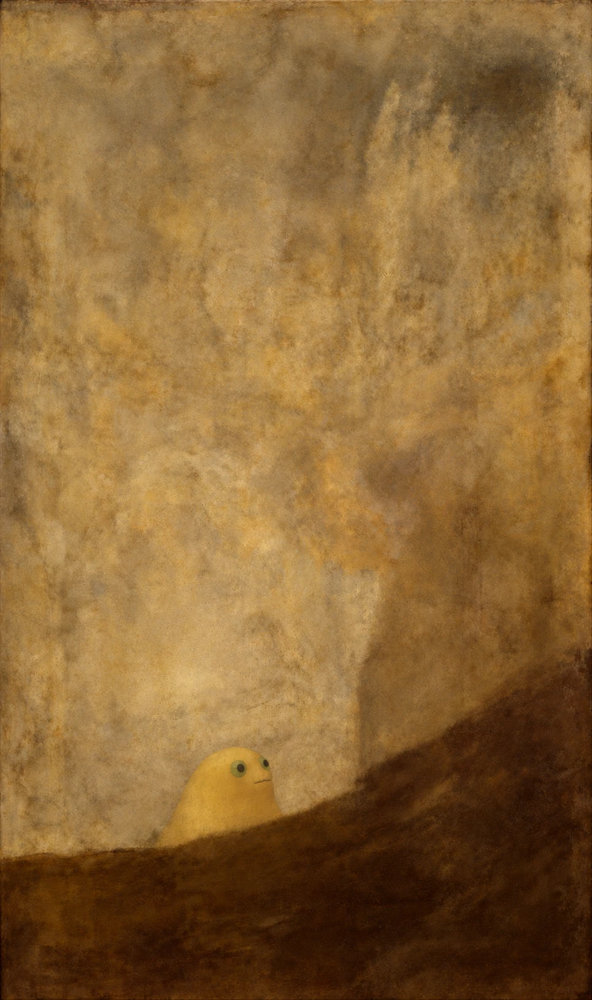
几乎压满画面的岩壁使露出的身体成为距离标记。角色并非唯一重心，隐藏部分留给地形而非巨大表情。
本作作者：奶蛙现代艺术馆项目 · AI辅助再创作
高大灰褐峭壁占据竖幅，小奶蛙只在下缘坡后露出少量黄色与绿眼。 几乎压满画面的岩壁使露出的身体成为距离标记。角色并非唯一重心，隐藏部分留给地形而非巨大表情。
本作从Francisco de Goya y Lucientes《Perro semihundido / The Dog》的具体形式关系出发，岩层和坡后遮挡为图画构成，不据小尺度推断真实高度。 题名与情绪读法属于当代观看解释；图像不能替未发生的动作、角色心理或科学结论作证。
历史原作与馆藏记录
选定第3版。以山水式绘画的视觉语言重新绘制角色、动作与空间，采用AI辅助生成；不是实体媒介作品。岩层和坡后遮挡为图画构成，不据小尺度推断真实高度。 角色采用奶蛙（社区衍生角色），原创只指场景或改编中的构图取舍，不宣称角色IP原创、官方授权或参考图转载许可。
NO. P63 · AI 辅助图像 · 水彩式插画 · 原创
还没捏好的自己
An Unfinished Version of Me
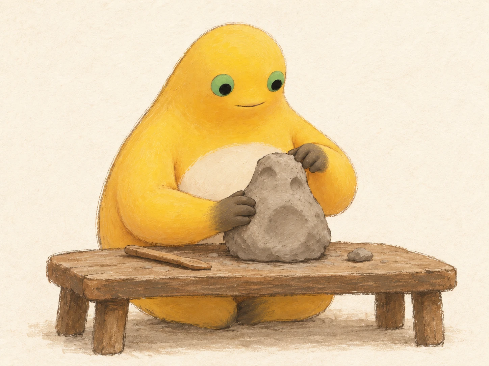
手在制作一个尚未完成的相似物。已经完整的身体和仍可改变的材料并置，让辨认成为制作过程中的问题。
本作作者：奶蛙现代艺术馆项目 · AI辅助再创作
奶蛙坐在低木桌后，两手捏着未成形的灰泥，泥面有眼窝和腹部凹痕。 手在制作一个尚未完成的相似物。已经完整的身体和仍可改变的材料并置，让辨认成为制作过程中的问题。
这一场景没有指定历史名画为构图来源，泥形、手部有简化，不声称制作了实体作品或完成精确自塑像。 题名与情绪读法属于当代观看解释；图像不能替未发生的动作、角色心理或科学结论作证。
选定第2版。以水彩式插画的视觉语言重新绘制角色、动作与空间，采用AI辅助生成；不是实体媒介作品。泥形、手部有简化，不声称制作了实体作品或完成精确自塑像。 角色采用奶蛙（社区衍生角色），原创只指场景或改编中的构图取舍，不宣称角色IP原创、官方授权或参考图转载许可。
NO. P64 · AI 辅助图像 · 点彩式绘画 · 名画改编
最圆的骑手
The Roundest Rider
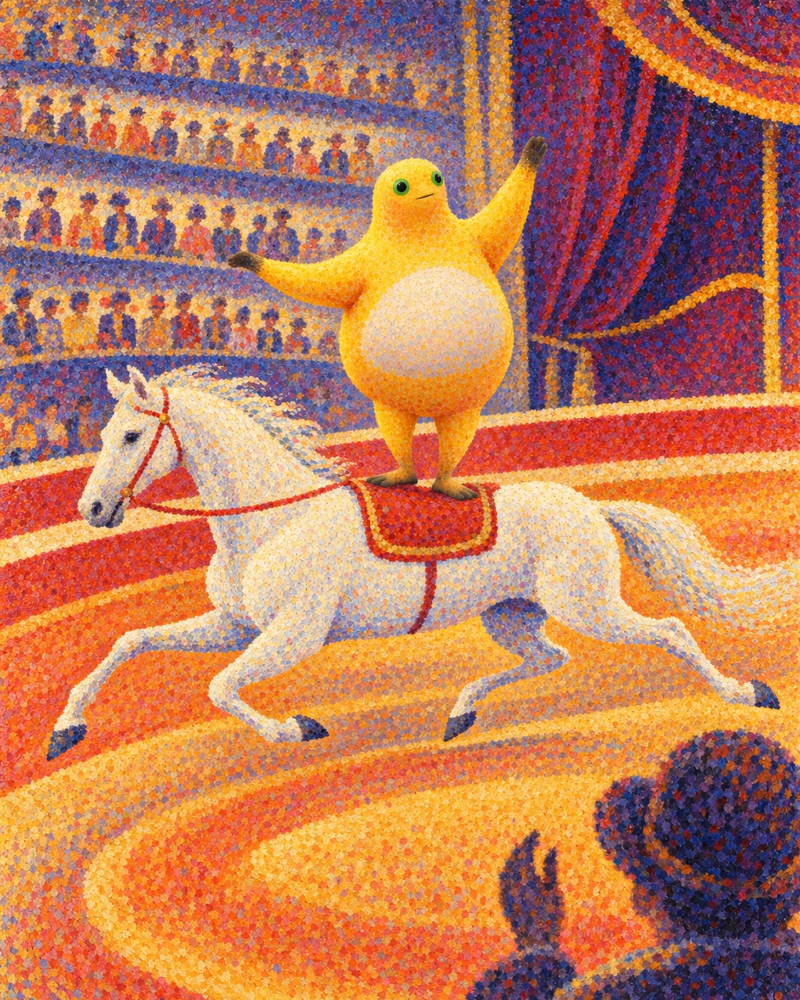
角色接过骑手的位置，站立和平衡必须与马背及场地圆弧共同成立。小腿的支撑关系比换角笑点更先接受观看。
本作作者：奶蛙现代艺术馆项目 · AI辅助再创作
圆身体奶蛙站在白马上，圆形马戏场、幕帘与观众环绕运动方向。 角色接过骑手的位置，站立和平衡必须与马背及场地圆弧共同成立。小腿的支撑关系比换角笑点更先接受观看。
本作从Georges Seurat《马戏团 / Le Cirque》的具体形式关系出发，绘画点彩为AI模拟，不声称真实骑乘动作或马戏训练。 题名与情绪读法属于当代观看解释；图像不能替未发生的动作、角色心理或科学结论作证。
历史原作与馆藏记录
选定第1版。以点彩式绘画的视觉语言重新绘制角色、动作与空间，采用AI辅助生成；不是实体媒介作品。绘画点彩为AI模拟，不声称真实骑乘动作或马戏训练。 角色采用奶蛙（社区衍生角色），原创只指场景或改编中的构图取舍，不宣称角色IP原创、官方授权或参考图转载许可。
NO. P65 · AI 辅助图像 · 水粉式插画 · 原创
这幅画还没干
The Sea Runs off the Page
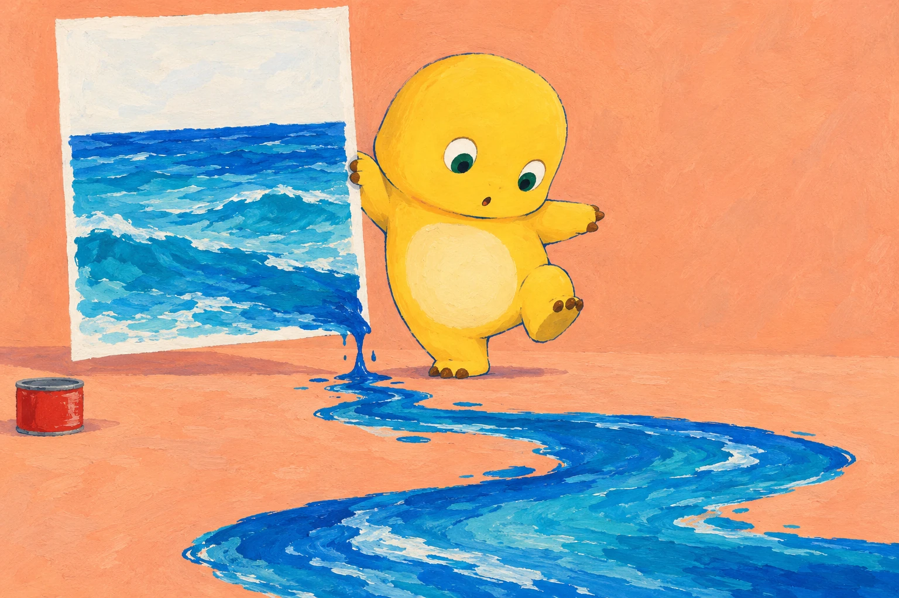
画布原有的边界仍可辨，颜色却取得了可以流出的方向。角色看向画外的蓝带，使再现与环境相接。
本作作者：奶蛙现代艺术馆项目 · AI辅助再创作
官方奶龙形象坐在画布旁，画中蓝色海面沿画布边缘流到橙色地面。 画布原有的边界仍可辨，颜色却取得了可以流出的方向。角色看向画外的蓝带，使再现与环境相接。
这一场景没有指定历史名画为构图来源，仅场景构图原创、非官方授权；流出是图像想象，不说明真实颜料或水体。 题名与情绪读法属于当代观看解释；图像不能替未发生的动作、角色心理或科学结论作证。
角色参考作品与发布者来源
选定第1版。以水粉式插画的视觉语言重新绘制角色、动作与空间，采用AI辅助生成；不是实体媒介作品。仅场景构图原创、非官方授权；流出是图像想象，不说明真实颜料或水体。 角色采用奶龙（官方IP形象的非官方二创），原创只指场景或改编中的构图取舍，不宣称角色IP原创、官方授权或参考图转载许可。
NO. P66 · AI 辅助图像 · 表现主义式色面 · 名画改编
山也跟着跳起来
The Mountains Swing Too
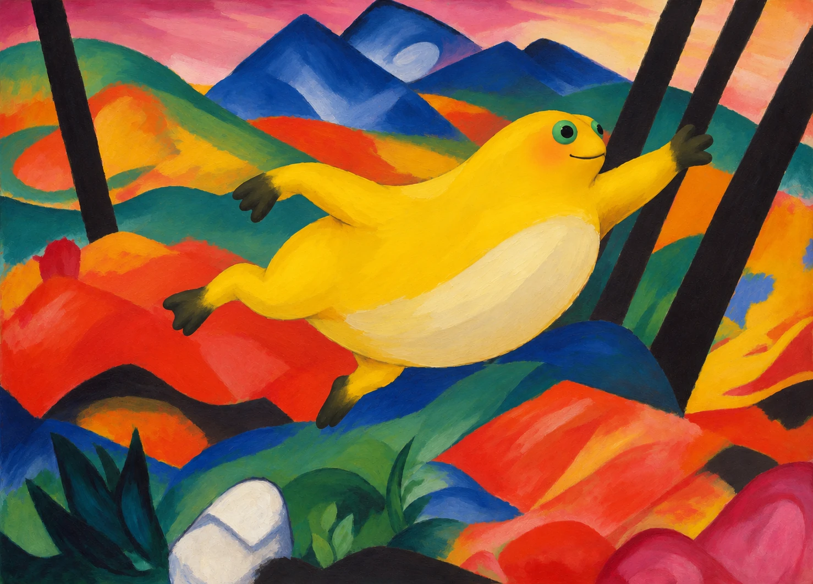
绳索给出共同支撑，群山却不再静止在背景。身体的摆动方向与彩色山势互相强化。
本作作者：奶蛙现代艺术馆项目 · AI辅助再创作
黄色奶蛙抓住两条黑色秋千绳，群山和彩色地面在其周围形成倾斜大色块。 绳索给出共同支撑，群山却不再静止在背景。身体的摆动方向与彩色山势互相强化。
本作从Franz Marc《Yellow Cow (Gelbe Kuh)》的具体形式关系出发，空间和山势是绘画转译，不宣称真实群山移动或速度测量。 题名与情绪读法属于当代观看解释；图像不能替未发生的动作、角色心理或科学结论作证。
历史原作与馆藏记录
选定第2版。以表现主义式色面的视觉语言重新绘制角色、动作与空间，采用AI辅助生成；不是实体媒介作品。空间和山势是绘画转译，不宣称真实群山移动或速度测量。 角色采用奶蛙（社区衍生角色），原创只指场景或改编中的构图取舍，不宣称角色IP原创、官方授权或参考图转载许可。
NO. P67 · AI 辅助图像 · 剪纸式绘画 · 原创
房间开始脱线
The Room Comes Unstitched
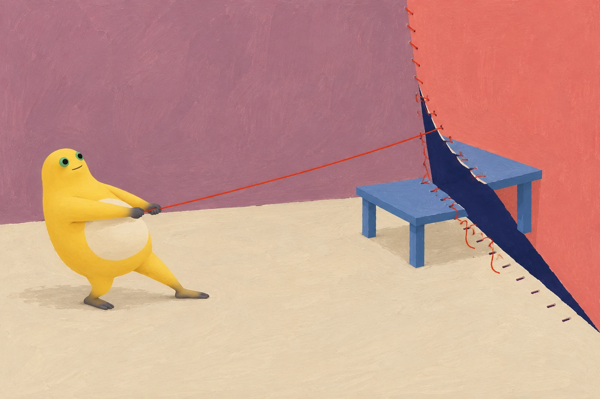
房间从容纳身体的空间变成可以抽线的材料。红线连接手与墙角，普通家具留下变化前后的空间参照。
本作作者：奶蛙现代艺术馆项目 · AI辅助再创作
奶蛙拉着一根红线，墙角沿缝线掀开，蓝桌所在的房间露出另一片深蓝面。 房间从容纳身体的空间变成可以抽线的材料。红线连接手与墙角，普通家具留下变化前后的空间参照。
这一场景没有指定历史名画为构图来源，室内透视和墙面材料有简化，不当作可实现建筑装置。 题名与情绪读法属于当代观看解释；图像不能替未发生的动作、角色心理或科学结论作证。
角色参考作品与发布者来源
选定第1版。以剪纸式绘画的视觉语言重新绘制角色、动作与空间，采用AI辅助生成；不是实体媒介作品。室内透视和墙面材料有简化，不当作可实现建筑装置。 角色采用奶蛙（社区衍生角色），原创只指场景或改编中的构图取舍，不宣称角色IP原创、官方授权或参考图转载许可。
NO. P68 · AI 辅助图像 · 正交色格绘画 · 名画改编
城市跳成了我
The City Dances into Me
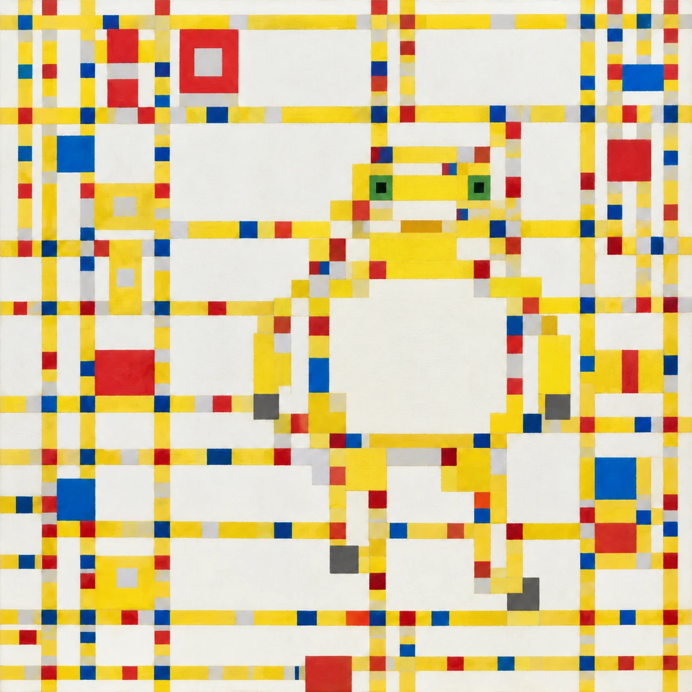
与A19《狂笑百老汇》同源，本件让完整几何角色出现于街网，而旧作采用满幅无中心网格。两件转译角度不同，本件不是首次改编该原作。
本作作者：奶蛙现代艺术馆项目 · AI辅助再创作
红蓝黄街网中出现完整直角几何奶蛙，两处绿眼和浅腹负形仍能辨认。 与A19《狂笑百老汇》同源，本件让完整几何角色出现于街网，而旧作采用满幅无中心网格。两件转译角度不同，本件不是首次改编该原作。
本作从Piet Mondrian《Broadway Boogie Woogie》的具体形式关系出发，选定第二版；长方头与机器人感保留，远看身份较弱，不称标准奶蛙比例。 题名与情绪读法属于当代观看解释；图像不能替未发生的动作、角色心理或科学结论作证。
历史原作与馆藏记录
角色参考作品与发布者来源
选定第2版。以正交色格绘画的视觉语言重新绘制角色、动作与空间，采用AI辅助生成；不是实体媒介作品。选定第二版；长方头与机器人感保留，远看身份较弱，不称标准奶蛙比例。 角色采用奶蛙（社区衍生角色），原创只指场景或改编中的构图取舍，不宣称角色IP原创、官方授权或参考图转载许可。
NO. P69 · AI 辅助图像 · 炭笔式绘画 · 原创
擦掉的地方亮起来
The Erased Place Lights Up
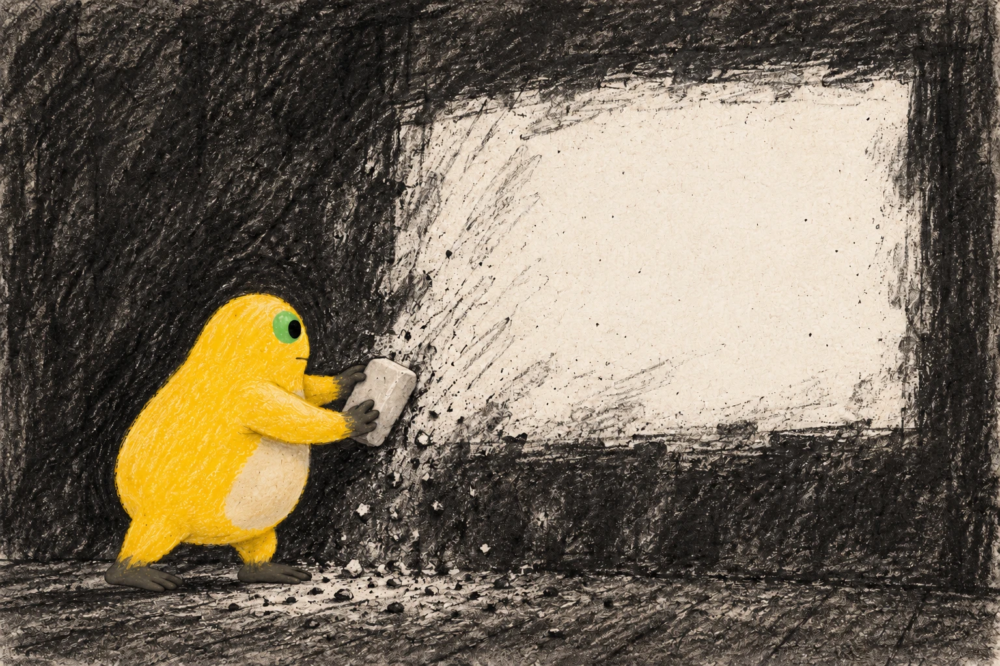
制作在这里表现为减去颜色。身体面对的是已经清出的空白，痕迹与材料重量通过碎屑相连。
本作作者：奶蛙现代艺术馆项目 · AI辅助再创作
黑色墙面前，奶蛙两手持浅色擦除物，清出的白色区域与落地碎屑构成明暗对照。 制作在这里表现为减去颜色。身体面对的是已经清出的空白，痕迹与材料重量通过碎屑相连。
这一场景没有指定历史名画为构图来源，不称真实擦除过程的完整记录，白区与碎屑为图画组织。 题名与情绪读法属于当代观看解释；图像不能替未发生的动作、角色心理或科学结论作证。
角色参考作品与发布者来源
选定第2版。以炭笔式绘画的视觉语言重新绘制角色、动作与空间，采用AI辅助生成；不是实体媒介作品。不称真实擦除过程的完整记录，白区与碎屑为图画组织。 角色采用奶蛙（社区衍生角色），原创只指场景或改编中的构图取舍，不宣称角色IP原创、官方授权或参考图转载许可。
NO. P70 · AI 辅助图像 · 数字绘画 · 名画改编
身体浮出夜色
The Body Emerges from Night
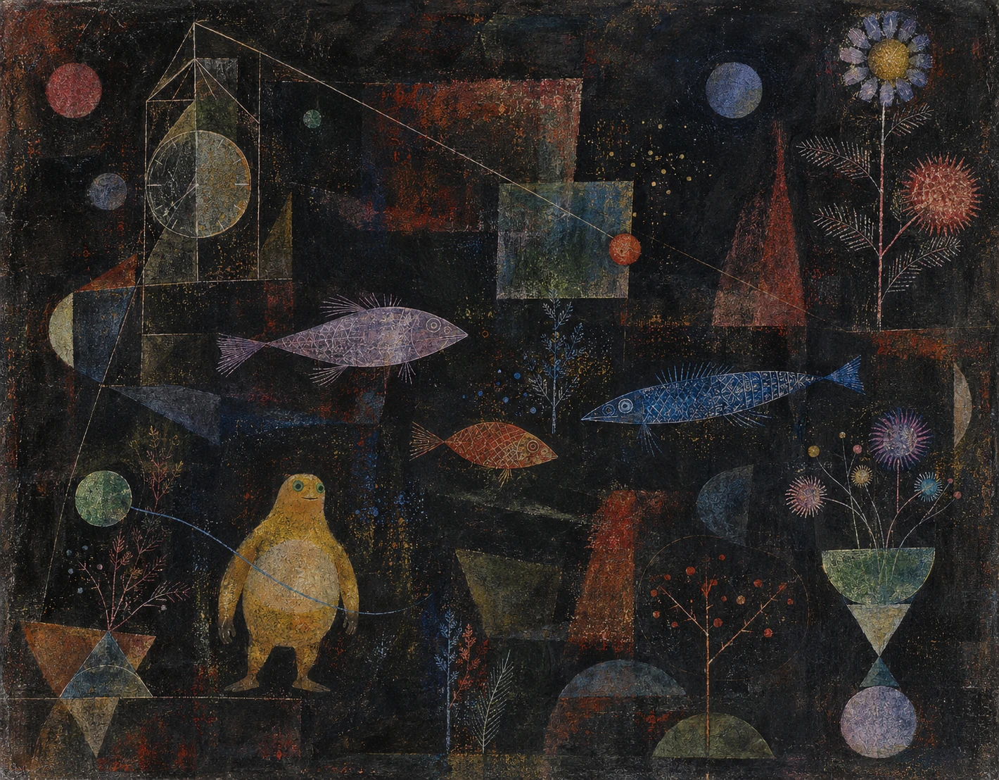
身体成为暗处的一个小辨认点，多组透明面与漂浮形体保留独立方向。观看在不同尺度的悬浮物之间移动。
本作作者：奶蛙现代艺术馆项目 · AI辅助再创作
暗夜色域里，透明斜面、鱼、星体和几何形分布在一只小黄色角色周围。 身体成为暗处的一个小辨认点，多组透明面与漂浮形体保留独立方向。观看在不同尺度的悬浮物之间移动。
本作从Paul Klee《Fish Magic》的具体形式关系出发，材质和透明面为绘画模拟，不当作真实星图、海景或唯一象征解释。 题名与情绪读法属于当代观看解释；图像不能替未发生的动作、角色心理或科学结论作证。
历史原作与馆藏记录
角色参考作品与发布者来源
角色参考作品与发布者来源
选定第1版。以数字绘画的视觉语言重新绘制角色、动作与空间，采用AI辅助生成；不是实体媒介作品。材质和透明面为绘画模拟，不当作真实星图、海景或唯一象征解释。 角色采用奶蛙（社区衍生角色），原创只指场景或改编中的构图取舍，不宣称角色IP原创、官方授权或参考图转载许可。
NO. P71 · AI 辅助图像 · 平面绘画 · 原创
把远方卷近一点
Roll the Distance Closer
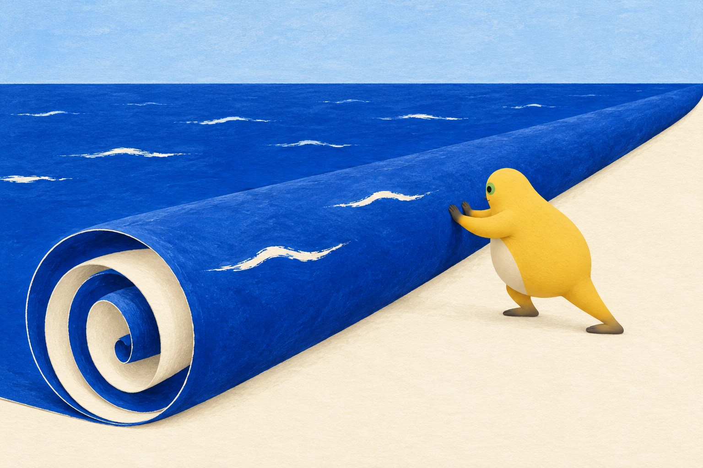
远方没有变成新的容器，而取得卷材的边缘。推卷动作把看不见终点的海缩到身体能够接触的位置。
本作作者：奶蛙现代艺术馆项目 · AI辅助再创作
奶蛙推着一片蓝色海面，海面像厚纸卷起，白浪仍横过弯曲表层。 远方没有变成新的容器，而取得卷材的边缘。推卷动作把看不见终点的海缩到身体能够接触的位置。
这一场景没有指定历史名画为构图来源，海卷不是现实材料模型，人物与卷材受力为绘画简化。 题名与情绪读法属于当代观看解释；图像不能替未发生的动作、角色心理或科学结论作证。
角色参考作品与发布者来源
选定第1版。以平面绘画的视觉语言重新绘制角色、动作与空间，采用AI辅助生成；不是实体媒介作品。海卷不是现实材料模型，人物与卷材受力为绘画简化。 角色采用奶蛙（社区衍生角色），原创只指场景或改编中的构图取舍，不宣称角色IP原创、官方授权或参考图转载许可。
NO. P72 · AI 辅助图像 · 数字油画 · 名画改编
时间先软了
Time Softens First
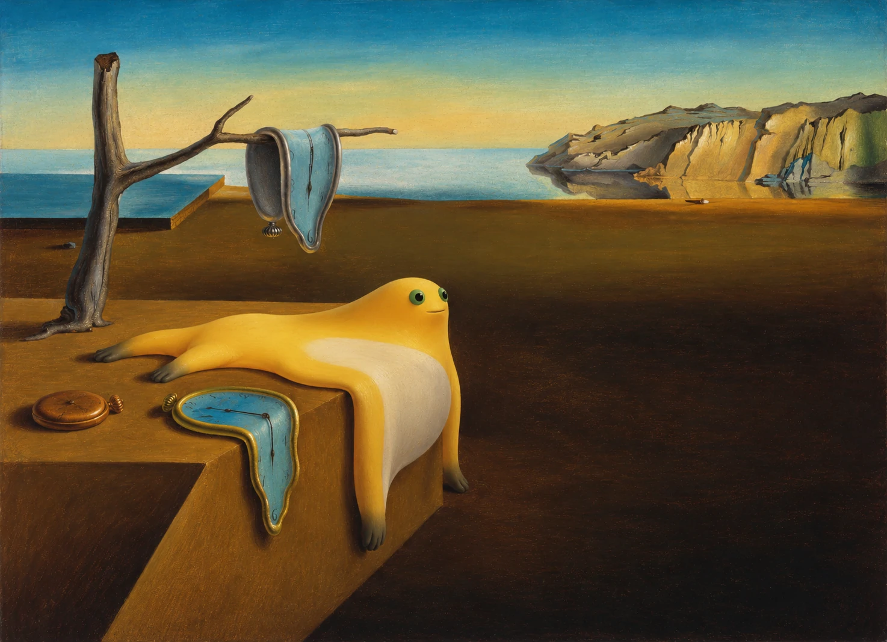
柔软不再只属于钟面，而穿过角色的身体。远岸与台面提供稳定参照，使变形保持可比较的范围。
本作作者：奶蛙现代艺术馆项目 · AI辅助再创作
奶蛙身体沿台面软垂，融软钟表与枯树构成时间意象，远处岸线仍保持坚硬。 柔软不再只属于钟面，而穿过角色的身体。远岸与台面提供稳定参照，使变形保持可比较的范围。
本作从Salvador Dalí《The Persistence of Memory》的具体形式关系出发，名画关系为当代改编，不声称真实时间改变或角色失去意识。 题名与情绪读法属于当代观看解释；图像不能替未发生的动作、角色心理或科学结论作证。
历史原作与馆藏记录
角色参考作品与发布者来源
选定第1版。以数字油画的视觉语言重新绘制角色、动作与空间，采用AI辅助生成；不是实体媒介作品。名画关系为当代改编，不声称真实时间改变或角色失去意识。 角色采用奶蛙（社区衍生角色），原创只指场景或改编中的构图取舍，不宣称角色IP原创、官方授权或参考图转载许可。
NO. P73 · AI 辅助图像 · 剪纸式绘画 · 原创
今天比山还重
Heavier than the Mountain Today
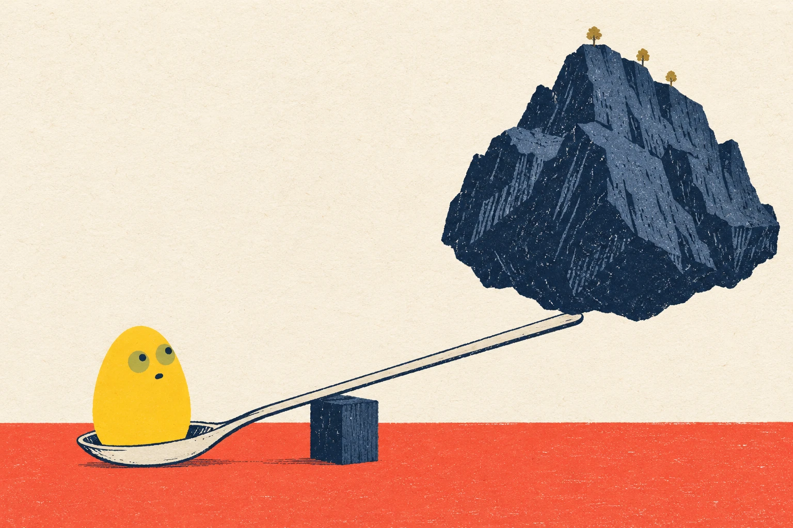
很小的卵形身体与大岩块通过一条斜线连接，尺度差成为观看问题。简短面孔保持平静，重量只由图像关系暗示。
本作作者：奶蛙现代艺术馆项目 · AI辅助再创作
无肢奶蛋立在金属勺一端，另一端托着巨大的深蓝岩块，中间小蓝支点形成杠杆。 很小的卵形身体与大岩块通过一条斜线连接，尺度差成为观看问题。简短面孔保持平静，重量只由图像关系暗示。
这一场景没有指定历史名画为构图来源，杠杆是视觉寓言，非经过验证的力学平衡；奶蛋不是官方奶龙形设。 题名与情绪读法属于当代观看解释；图像不能替未发生的动作、角色心理或科学结论作证。
角色参考作品与发布者来源
选定第1版。以剪纸式绘画的视觉语言重新绘制角色、动作与空间，采用AI辅助生成；不是实体媒介作品。杠杆是视觉寓言，非经过验证的力学平衡；奶蛋不是官方奶龙形设。 角色采用奶蛋（社区衍生角色），原创只指场景或改编中的构图取舍，不宣称角色IP原创、官方授权或参考图转载许可。
NO. P74 · AI 辅助图像 · 数字绘画 · 名画改编
花很轻，篮子很重
Light Flowers, Heavy Basket
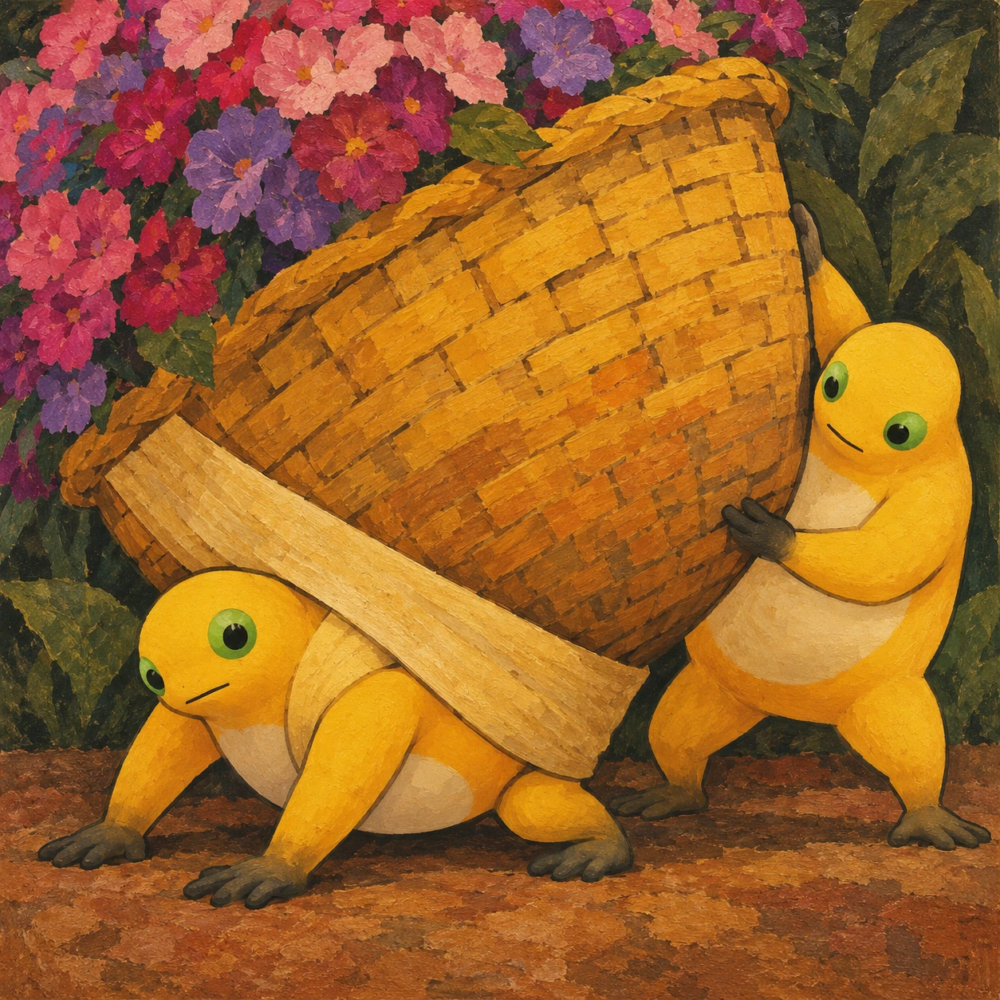
花的轻盈与篮的体量放在同一个动作里。两个身体承担不同支撑位置，重量成为关系而非角色表情。
本作作者：奶蛙现代艺术馆项目 · AI辅助再创作
两只奶蛙一前一后支撑巨大花篮，花朵在上方展开，低处短肢与手接触篮沿。 花的轻盈与篮的体量放在同一个动作里。两个身体承担不同支撑位置，重量成为关系而非角色表情。
本作从Diego Rivera《The Flower Carrier》的具体形式关系出发，手篮接点和腿形有绘画简化，不推定两者亲属关系或真实负载。 题名与情绪读法属于当代观看解释；图像不能替未发生的动作、角色心理或科学结论作证。
历史原作与馆藏记录
角色参考作品与发布者来源
选定第1版。以数字绘画的视觉语言重新绘制角色、动作与空间，采用AI辅助生成；不是实体媒介作品。手篮接点和腿形有绘画简化，不推定两者亲属关系或真实负载。 角色采用奶蛙（社区衍生角色），原创只指场景或改编中的构图取舍，不宣称角色IP原创、官方授权或参考图转载许可。
NO. P75 · AI 辅助图像 · 图形插画 · 原创
鸟群也在看我
The Flock Is Watching Me Too
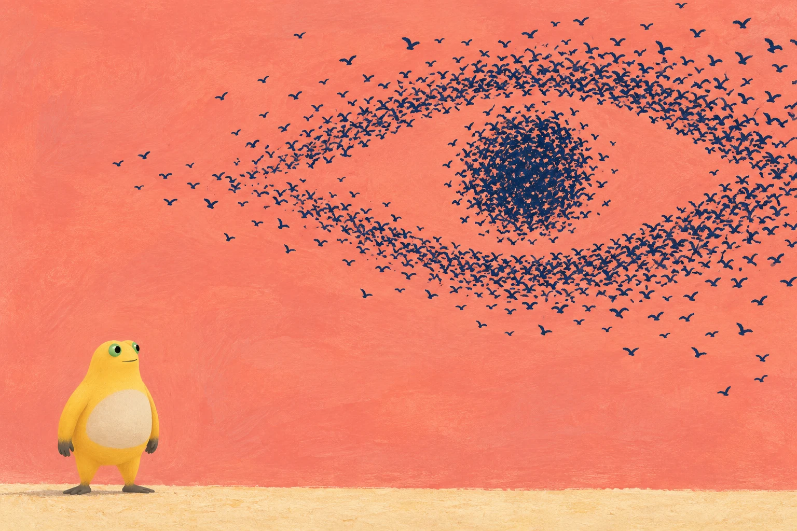
许多独立小形体组织成一个观看者，尺度差把看与被看调换位置。巨眼并不是另外一枚悬浮眼球。
本作作者：奶蛙现代艺术馆项目 · AI辅助再创作
橙色天空里，密集小鸟组成巨大的眼形轮廓，下方单只奶蛙仰望。 许多独立小形体组织成一个观看者，尺度差把看与被看调换位置。巨眼并不是另外一枚悬浮眼球。
这一场景没有指定历史名画为构图来源，鸟群结构为构图想象，不声称真实集群行为或准确鸟数。 题名与情绪读法属于当代观看解释；图像不能替未发生的动作、角色心理或科学结论作证。
角色参考作品与发布者来源
选定第1版。以图形插画的视觉语言重新绘制角色、动作与空间，采用AI辅助生成；不是实体媒介作品。鸟群结构为构图想象，不声称真实集群行为或准确鸟数。 角色采用奶蛙（社区衍生角色），原创只指场景或改编中的构图取舍，不宣称角色IP原创、官方授权或参考图转载许可。
NO. P76 · AI 辅助图像 · 数字油画 · 名画改编
把声音留在纱外
Leave the Sound outside the Veil
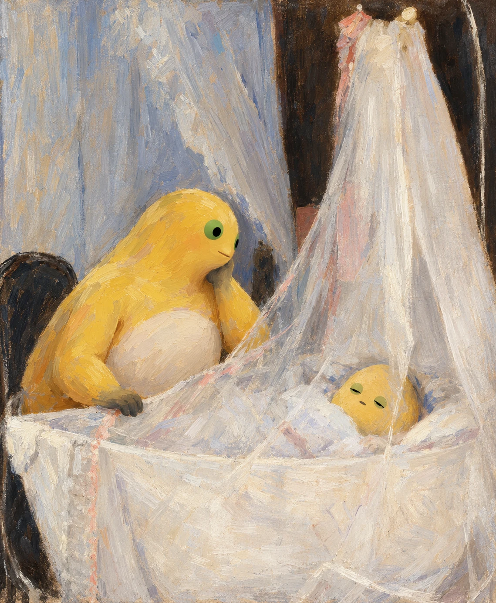
纱幕同时遮挡和连结两者，观看越过薄材料后才到达小脸。动作保持安静，不需要为角色补写对白。
本作作者：奶蛙现代艺术馆项目 · AI辅助再创作
浅色纱幕围着摇篮，一只大奶蛙俯身靠近，另一个小头从薄纱与摇篮中显露。 纱幕同时遮挡和连结两者，观看越过薄材料后才到达小脸。动作保持安静，不需要为角色补写对白。
本作从Berthe Morisot《Le Berceau / The Cradle》的具体形式关系出发，不指定亲属关系、真实年龄或睡眠状态；纱与人体式弯身为改编限度。 题名与情绪读法属于当代观看解释；图像不能替未发生的动作、角色心理或科学结论作证。
历史原作与馆藏记录
角色参考作品与发布者来源
角色参考作品与发布者来源
选定第1版。以数字油画的视觉语言重新绘制角色、动作与空间，采用AI辅助生成；不是实体媒介作品。不指定亲属关系、真实年龄或睡眠状态；纱与人体式弯身为改编限度。 角色采用奶蛙（社区衍生角色），原创只指场景或改编中的构图取舍，不宣称角色IP原创、官方授权或参考图转载许可。
NO. P77 · AI 辅助图像 · 水粉式插画 · 原创
下一段，要用力
Give the Needle a Push
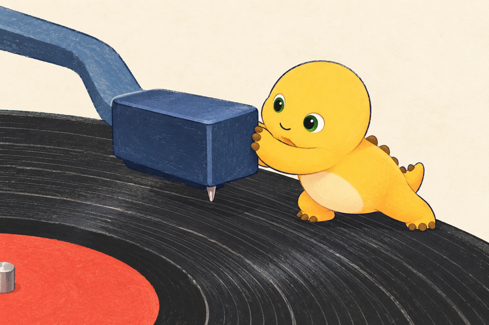
播放设备的尺度让普通短肢取得新的劳动位置。角色推的是可辨的唱头，声音没有被画成可见特效。
本作作者：奶蛙现代艺术馆项目 · AI辅助再创作
小奶龙在巨大黑唱片上推深蓝唱头，唱片纹路、针尖与棕爪短肢相接。 播放设备的尺度让普通短肢取得新的劳动位置。角色推的是可辨的唱头，声音没有被画成可见特效。
这一场景没有指定历史名画为构图来源，官方形象非官方二创；静态不证明真的发声，唱头比例不作机械制图。 题名与情绪读法属于当代观看解释；图像不能替未发生的动作、角色心理或科学结论作证。
角色参考作品与发布者来源
选定第1版。以水粉式插画的视觉语言重新绘制角色、动作与空间，采用AI辅助生成；不是实体媒介作品。官方形象非官方二创；静态不证明真的发声，唱头比例不作机械制图。 角色采用奶龙（官方IP形象的非官方二创），原创只指场景或改编中的构图取舍，不宣称角色IP原创、官方授权或参考图转载许可。
NO. P78 · AI 辅助图像 · 浮世绘式绘画 · 名画改编
雨催着小步走
The Rain Catches Up on the Bridge
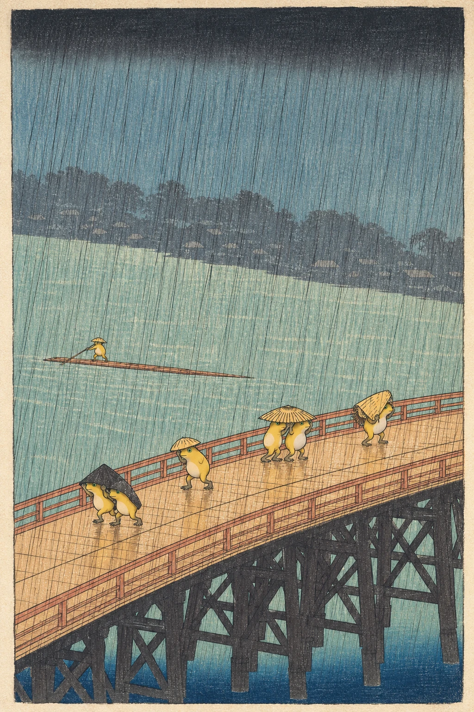
桥面维持共同方向，雨线改变整个画面的速度感。多个小角色仍服从木桥的尺度，不扩大成近景吉祥物。
本作作者：奶蛙现代艺术馆项目 · AI辅助再创作
骤雨斜线穿过高木桥，小黄色角色撑伞沿桥行走，远岸压在蓝绿色水面上。 桥面维持共同方向，雨线改变整个画面的速度感。多个小角色仍服从木桥的尺度，不扩大成近景吉祥物。
本作从Utagawa Hiroshige / 歌川广重《Sudden Shower over Shin-Ōhashi Bridge and Atake / 大桥安宅骤雨》的具体形式关系出发，雨线与桥梁结构为绘画转译，不声称完整复刻版画技法或真实天气记录。 题名与情绪读法属于当代观看解释；图像不能替未发生的动作、角色心理或科学结论作证。
历史原作与馆藏记录
角色参考作品与发布者来源
选定第1版。以浮世绘式绘画的视觉语言重新绘制角色、动作与空间，采用AI辅助生成；不是实体媒介作品。雨线与桥梁结构为绘画转译，不声称完整复刻版画技法或真实天气记录。 角色采用奶蛙（社区衍生角色），原创只指场景或改编中的构图取舍，不宣称角色IP原创、官方授权或参考图转载许可。
NO. P79 · AI 辅助图像 · 黑白绘画 · 原创
一片叶子这么深
A Small Body between the Branches
黄色身体为黑白材料提供一个尺度点，空白既像空气也像可辨轮廓。观看要在枝条与负形之间来回。
本作作者：奶蛙现代艺术馆项目 · AI辅助再创作
黑树干和叶脉围出白色空间，一只小奶蛙站在树枝上，远处空白与泪滴状形相对。 黄色身体为黑白材料提供一个尺度点，空白既像空气也像可辨轮廓。观看要在枝条与负形之间来回。
这一场景没有指定历史名画为构图来源，形体与空白只是视觉比较，不推定动物心理或固定象征意义。 题名与情绪读法属于当代观看解释；图像不能替未发生的动作、角色心理或科学结论作证。
角色参考作品与发布者来源
选定第1版。以黑白绘画的视觉语言重新绘制角色、动作与空间，采用AI辅助生成；不是实体媒介作品。形体与空白只是视觉比较，不推定动物心理或固定象征意义。 角色采用奶蛙（社区衍生角色），原创只指场景或改编中的构图取舍，不宣称角色IP原创、官方授权或参考图转载许可。
NO. P80 · AI 辅助图像 · 金色装饰绘画 · 名画改编
金色还没吞掉我
A Body Held in Gold
装饰不只是背景，它与衣服和身体共用边界。辨认从大面积金色中逐项找到脸、手和腹部。
本作作者：奶蛙现代艺术馆项目 · AI辅助再创作
金色方格与细密纹样围住奶蛙半身，绿眼、浅腹和深手仍从装饰中显露。 装饰不只是背景，它与衣服和身体共用边界。辨认从大面积金色中逐项找到脸、手和腹部。
本作从Gustav Klimt / 古斯塔夫·克里姆特《Portrait of Adele Bloch-Bauer I / 阿黛尔·布洛赫-鲍尔肖像 I》的具体形式关系出发，圆肩和半身服装仍偏人像，数字金色不称真实金箔。 题名与情绪读法属于当代观看解释；图像不能替未发生的动作、角色心理或科学结论作证。
历史原作与馆藏记录
选定第2版。以金色装饰绘画的视觉语言重新绘制角色、动作与空间，采用AI辅助生成；不是实体媒介作品。圆肩和半身服装仍偏人像，数字金色不称真实金箔。 角色采用奶蛙（社区衍生角色），原创只指场景或改编中的构图取舍，不宣称角色IP原创、官方授权或参考图转载许可。
NO. P81 · AI 辅助图像 · 彩铅式插画 · 原创
把耳朵借我一下
One Burr at a Time
照看的接触点很小，大狗的体量使小手显得谨慎。散落刺果提供动作线索，但不证明完整护理过程。
本作作者：奶蛙现代艺术馆项目 · AI辅助再创作
红毯上，大狗闭眼卧着，奶蛙轻提长耳边缘，几枚小刺果落在旁边。 照看的接触点很小，大狗的体量使小手显得谨慎。散落刺果提供动作线索，但不证明完整护理过程。
这一场景没有指定历史名画为构图来源，不称狗实际睡着或已清除所有刺果，手耳接触保留简化。 题名与情绪读法属于当代观看解释；图像不能替未发生的动作、角色心理或科学结论作证。
角色参考作品与发布者来源
选定第1版。以彩铅式插画的视觉语言重新绘制角色、动作与空间，采用AI辅助生成；不是实体媒介作品。不称狗实际睡着或已清除所有刺果，手耳接触保留简化。 角色采用奶蛙（社区衍生角色），原创只指场景或改编中的构图取舍，不宣称角色IP原创、官方授权或参考图转载许可。
NO. P82 · AI 辅助图像 · 立体主义式色面 · 名画改编
合奏要挤在一起
Three Bodies, One Arrangement
三种动作分别占据平面构成的位置，角色在共同节奏中保持差别。乐器和谱纸提供分类，不靠表情制造分工。
本作作者：奶蛙现代艺术馆项目 · AI辅助再创作
三只几何奶蛙分持吹奏、弦乐与谱纸线索，方形衣片和黄色脸嵌进同一室内。 三种动作分别占据平面构成的位置，角色在共同节奏中保持差别。乐器和谱纸提供分类，不靠表情制造分工。
本作从Pablo Picasso / 巴勃罗·毕加索《Three Musicians / 三个音乐家》的具体形式关系出发，只描述静态持物关系，不声称听到音乐或所有乐器细节精确。 题名与情绪读法属于当代观看解释；图像不能替未发生的动作、角色心理或科学结论作证。
历史原作与馆藏记录
角色参考作品与发布者来源
选定第1版。以立体主义式色面的视觉语言重新绘制角色、动作与空间，采用AI辅助生成；不是实体媒介作品。只描述静态持物关系，不声称听到音乐或所有乐器细节精确。 角色采用奶蛙（社区衍生角色），原创只指场景或改编中的构图取舍，不宣称角色IP原创、官方授权或参考图转载许可。
NO. P83 · AI 辅助图像 · 水粉式插画 · 原创
你先慢慢走
Leave the Path for a Moment
停住的脚把普通的小路变成共同使用的空间。小动物没有被放大，耐心只是一种可由姿势提出的读法。
本作作者：奶蛙现代艺术馆项目 · AI辅助再创作
石板小路上，一只蜗牛在前方缓行，奶蛙抬脚停在其旁，深绿叶片围住浅色路面。 停住的脚把普通的小路变成共同使用的空间。小动物没有被放大，耐心只是一种可由姿势提出的读法。
这一场景没有指定历史名画为构图来源，不据静态图证明真实等待时长或角色的确定心理。 题名与情绪读法属于当代观看解释；图像不能替未发生的动作、角色心理或科学结论作证。
角色参考作品与发布者来源
选定第1版。以水粉式插画的视觉语言重新绘制角色、动作与空间，采用AI辅助生成；不是实体媒介作品。不据静态图证明真实等待时长或角色的确定心理。 角色采用奶蛙（社区衍生角色），原创只指场景或改编中的构图取舍，不宣称角色IP原创、官方授权或参考图转载许可。
NO. P84 · AI 辅助图像 · 数字绘画 · 名画改编
先把这一盏点亮
Two Lights in the Garden
成对灯笼将相似身体分置在不同亮区，行动与环境通过照明关联。角色进入整体花园，不占据所有光。
本作作者：奶蛙现代艺术馆项目 · AI辅助再创作
花园中，两只小奶蛙分别提着发暖光的纸灯，浅花和树叶把灯光分成近远两处。 成对灯笼将相似身体分置在不同亮区，行动与环境通过照明关联。角色进入整体花园，不占据所有光。
本作从John Singer Sargent / 约翰·辛格·萨金特《Carnation, Lily, Lily, Rose / 康乃馨、百合、百合、玫瑰》的具体形式关系出发，纸灯、手部与花纹为绘画简化，不据图确认真实点灯过程。 题名与情绪读法属于当代观看解释；图像不能替未发生的动作、角色心理或科学结论作证。
历史原作与馆藏记录
角色参考作品与发布者来源
选定第1版。以数字绘画的视觉语言重新绘制角色、动作与空间，采用AI辅助生成；不是实体媒介作品。纸灯、手部与花纹为绘画简化，不据图确认真实点灯过程。 角色采用奶蛙（社区衍生角色），原创只指场景或改编中的构图取舍，不宣称角色IP原创、官方授权或参考图转载许可。
NO. P86 · AI 辅助图像 · 数字绘画 · 名画改编
海风先到了
Arriving on a Shell
同一造型占据不同角色位置，壳、风与布将中央身体接进一个到达场景。关系来自具体原作构图，不是全原创背景。
本作作者：奶蛙现代艺术馆项目 · AI辅助再创作
贝壳上的奶蛙居于海岸中央，左上两只吹风形体相连，右侧角色展开粉色布。 同一造型占据不同角色位置，壳、风与布将中央身体接进一个到达场景。关系来自具体原作构图，不是全原创背景。
本作从Sandro Botticelli / 桑德罗·波提切利《Birth of Venus / 维纳斯的诞生》的具体形式关系出发，不写固定神话身份或角色起源，衣布与身体有绘画简化。 题名与情绪读法属于当代观看解释；图像不能替未发生的动作、角色心理或科学结论作证。
历史原作与馆藏记录
角色参考作品与发布者来源
选定第2版。以数字绘画的视觉语言重新绘制角色、动作与空间，采用AI辅助生成；不是实体媒介作品。不写固定神话身份或角色起源，衣布与身体有绘画简化。 角色采用奶蛙（社区衍生角色），原创只指场景或改编中的构图取舍，不宣称角色IP原创、官方授权或参考图转载许可。
NO. P87 · AI 辅助图像 · 平面静物 · 原创
轻轻一靠，后面都忙了
Before the Last Tile Falls
无手足身体处在连锁变化的一端，不能因此确认它启动了变化。倾斜和竖直之间的差异把时间分成可看的阶段。
本作作者：奶蛙现代艺术馆项目 · AI辅助再创作
奶蛋旁的红色多米诺骨牌一枚接一枚倾斜，远端弯曲的列阵仍站立。 无手足身体处在连锁变化的一端，不能因此确认它启动了变化。倾斜和竖直之间的差异把时间分成可看的阶段。
这一场景没有指定历史名画为构图来源，选定第二版；连锁关系为绘画，不声称真实因果实验或全部骨牌倒下。 题名与情绪读法属于当代观看解释；图像不能替未发生的动作、角色心理或科学结论作证。
角色参考作品与发布者来源
选定第2版。以平面静物的视觉语言重新绘制角色、动作与空间，采用AI辅助生成；不是实体媒介作品。选定第二版；连锁关系为绘画，不声称真实因果实验或全部骨牌倒下。 角色采用奶蛋（社区衍生样本），原创只指场景或改编中的构图取舍，不宣称角色IP原创、官方授权或参考图转载许可。
NO. P88 · AI 辅助图像 · 水粉式插画 · 原创
地图里多了一条河
A River through the Map
纸上路径与可流动材料取得同一方向，地图既是图像也成为表面。手中的普通水杯让夸张仍可追到起点。
本作作者：奶蛙现代艺术馆项目 · AI辅助再创作
奶蛙在地图边倾下水杯，蓝色水带沿街网穿过地图并流向下边缘。 纸上路径与可流动材料取得同一方向，地图既是图像也成为表面。手中的普通水杯让夸张仍可追到起点。
这一场景没有指定历史名画为构图来源，不把水带当真实城市水文或测绘结果，街网与流向为图像想象。 题名与情绪读法属于当代观看解释；图像不能替未发生的动作、角色心理或科学结论作证。
角色参考作品与发布者来源
选定第1版。以水粉式插画的视觉语言重新绘制角色、动作与空间，采用AI辅助生成；不是实体媒介作品。不把水带当真实城市水文或测绘结果，街网与流向为图像想象。 角色采用奶蛙（社区衍生角色），原创只指场景或改编中的构图取舍，不宣称角色IP原创、官方授权或参考图转载许可。
NO. P89 · AI 辅助图像 · 数字油画 · 名画改编
风把大家推向同一边
Four Positions in One Boat
同一船的倾斜让四种支撑动作发生联系。角色保留独立位置，不把历史象征转成虚构奶蛙背景设定。
本作作者：奶蛙现代艺术馆项目 · AI辅助再创作
斜倾帆船里，四只奶蛙各占不同姿势，帆、绳与浪把船体推向画外。 同一船的倾斜让四种支撑动作发生联系。角色保留独立位置，不把历史象征转成虚构奶蛙背景设定。
本作从Winslow Homer / 温斯洛·霍默《Breezing Up (A Fair Wind) / 顺风》的具体形式关系出发，选定第二版保留一顶草帽；不指定年龄或亲属关系，不声称实际航行。 题名与情绪读法属于当代观看解释；图像不能替未发生的动作、角色心理或科学结论作证。
历史原作与馆藏记录
角色参考作品与发布者来源
选定第2版。以数字油画的视觉语言重新绘制角色、动作与空间，采用AI辅助生成；不是实体媒介作品。选定第二版保留一顶草帽；不指定年龄或亲属关系，不声称实际航行。 角色采用奶蛙（社区衍生角色），原创只指场景或改编中的构图取舍，不宣称角色IP原创、官方授权或参考图转载许可。
NO. P90 · AI 辅助图像 · 油毡刻印式插画 · 原创
扫帚也到了秋天
Autumn Reaches the Broom
扫除工具也在落叶，木柄连接动作与新出现的碎片。角色保持轻松表情，困境通过器物的性质出现。
本作作者：奶蛙现代艺术馆项目 · AI辅助再创作
蓝地珊瑚墙前，奶蛙双手握同一木柄，枝冠带着橙叶，地上又聚着落叶。 扫除工具也在落叶，木柄连接动作与新出现的碎片。角色保持轻松表情，困境通过器物的性质出现。
这一场景没有指定历史名画为构图来源，纸纹较密、手臂偏壮、趾略长，不称完成一轮扫地或真实版画。 题名与情绪读法属于当代观看解释；图像不能替未发生的动作、角色心理或科学结论作证。
角色参考作品与发布者来源
选定第1版。以油毡刻印式插画的视觉语言重新绘制角色、动作与空间，采用AI辅助生成；不是实体媒介作品。纸纹较密、手臂偏壮、趾略长，不称完成一轮扫地或真实版画。 角色采用奶蛙（社区衍生角色），原创只指场景或改编中的构图取舍，不宣称角色IP原创、官方授权或参考图转载许可。
NO. P91 · AI 辅助图像 · 水彩式插画 · 原创
床单把风留了一会儿
Hold This Breeze Together
普通织物把两个身体连成共同动作，风的方向通过布弧显露。画面保留两端支撑，不让布变成另一个角色。
本作作者：奶蛙现代艺术馆项目 · AI辅助再创作
两只奶蛙左右握住大白布，布面鼓起，空白浅地与蓝天让蓝影延伸。 普通织物把两个身体连成共同动作，风的方向通过布弧显露。画面保留两端支撑，不让布变成另一个角色。
这一场景没有指定历史名画为构图来源，布受力与轻体积为绘画简化，不声称精确风速或真实共同劳作过程。 题名与情绪读法属于当代观看解释；图像不能替未发生的动作、角色心理或科学结论作证。
角色参考作品与发布者来源
选定第2版。以水彩式插画的视觉语言重新绘制角色、动作与空间，采用AI辅助生成；不是实体媒介作品。布受力与轻体积为绘画简化，不声称精确风速或真实共同劳作过程。 角色采用奶蛙（社区衍生角色），原创只指场景或改编中的构图取舍，不宣称角色IP原创、官方授权或参考图转载许可。
NO. P92 · AI 辅助图像 · 数字油画 · 名画改编
拾起地上的一点黄
A Small Harvest Close to the Ground
低处劳动保持在大风景的下缘，不被表情特写取代。三个相邻姿势形成不同的停顿与支撑。
本作作者：奶蛙现代艺术馆项目 · AI辅助再创作
田野里三只奶蛙分别低身捡拾与站立看向地面，收获堆和远处乡野延伸在后。 低处劳动保持在大风景的下缘，不被表情特写取代。三个相邻姿势形成不同的停顿与支撑。
本作从Jean-François Millet / 让-弗朗索瓦·米勒《Des glaneuses / 拾穗者》的具体形式关系出发，不把原作社会关系直接套成角色背景，手与地面接触有绘画简化。 题名与情绪读法属于当代观看解释；图像不能替未发生的动作、角色心理或科学结论作证。
历史原作与馆藏记录
角色参考作品与发布者来源
选定第1版。以数字油画的视觉语言重新绘制角色、动作与空间，采用AI辅助生成；不是实体媒介作品。不把原作社会关系直接套成角色背景，手与地面接触有绘画简化。 角色采用奶蛙（社区衍生角色），原创只指场景或改编中的构图取舍，不宣称角色IP原创、官方授权或参考图转载许可。
NO. P93 · AI 辅助图像 · 平面色块 · 原创
洞口小了一点
This One Does Not Fit the Pocket
物件身份与角色面孔在同一表面上竞争。黑孔给出尺寸参照，题名式期待并不证明卵形能够进入。
本作作者：奶蛙现代艺术馆项目 · AI辅助再创作
绿台面上，无肢奶蛋靠近右下黑色袋口，白球留在远处，黄卵明显大于孔口。 物件身份与角色面孔在同一表面上竞争。黑孔给出尺寸参照，题名式期待并不证明卵形能够进入。
这一场景没有指定历史名画为构图来源，不称真实台球尺寸、比赛或已发生碰撞，奶蛋无手脚腹片。 题名与情绪读法属于当代观看解释；图像不能替未发生的动作、角色心理或科学结论作证。
角色参考作品与发布者来源
选定第1版。以平面色块的视觉语言重新绘制角色、动作与空间，采用AI辅助生成；不是实体媒介作品。不称真实台球尺寸、比赛或已发生碰撞，奶蛋无手脚腹片。 角色采用奶蛋（社区衍生样本），原创只指场景或改编中的构图取舍，不宣称角色IP原创、官方授权或参考图转载许可。
NO. P94 · AI 辅助图像 · 水彩式插画 · 原创
把裂缝系紧一点
Tie the Flowerpot Together
裂口没有被擦掉，而以日常系结方式重新连接。植物与盆仍各保留重量，修补成为可见动作。
本作作者：奶蛙现代艺术馆项目 · AI辅助再创作
奶蛙坐在陶盆旁，两手系蓝色绳结，绳像鞋带一样穿过花盆竖裂缝。 裂口没有被擦掉，而以日常系结方式重新连接。植物与盆仍各保留重量，修补成为可见动作。
这一场景没有指定历史名画为构图来源，不作为真实陶器修复或植物护理指导，绳孔与泥盆为绘画简化。 题名与情绪读法属于当代观看解释；图像不能替未发生的动作、角色心理或科学结论作证。
角色参考作品与发布者来源
选定第1版。以水彩式插画的视觉语言重新绘制角色、动作与空间，采用AI辅助生成；不是实体媒介作品。不作为真实陶器修复或植物护理指导，绳孔与泥盆为绘画简化。 角色采用奶蛙，原创只指场景或改编中的构图取舍，不宣称角色IP原创、官方授权或参考图转载许可。
NO. P96 · AI 辅助图像 · 彩铅水彩式静物 · 原创
隔着水看大一点
A Larger View through the Water
未放大与放大部分同时出现，透明材料改变的是局部观看。卵形外轮廓连续，不是一枚独立眼球漂在杯里。
本作作者：奶蛙现代艺术馆项目 · AI辅助再创作
紫桌上，无肢黄奶蛋位于透明水杯后方，右眼在水杯范围内显著放大，左眼保持普通尺度。 未放大与放大部分同时出现，透明材料改变的是局部观看。卵形外轮廓连续，不是一枚独立眼球漂在杯里。
这一场景没有指定历史名画为构图来源，杯宽较大、黄卵偏高瘦、纹理偏多；不将放大倍数当真实折射测量。 题名与情绪读法属于当代观看解释；图像不能替未发生的动作、角色心理或科学结论作证。
角色参考作品与发布者来源
选定第1版。以彩铅水彩式静物的视觉语言重新绘制角色、动作与空间，采用AI辅助生成；不是实体媒介作品。杯宽较大、黄卵偏高瘦、纹理偏多；不将放大倍数当真实折射测量。 角色采用奶蛋（社区衍生样本），原创只指场景或改编中的构图取舍，不宣称角色IP原创、官方授权或参考图转载许可。
NO. P97 · AI 辅助图像 · 水粉彩铅式插画 · 原创
差一点就抱住了
Almost an Embrace
共同动作已经形成，却没有闭合成一个圆。树干宽度与手间空隙让努力保持可见，无需写成失败或胜利。
本作作者：奶蛙现代艺术馆项目 · AI辅助再创作
两只奶蛙围抱粗树干，近侧双手隔着树皮仍有小间隙，三片叶落在橙地上。 共同动作已经形成，却没有闭合成一个圆。树干宽度与手间空隙让努力保持可见，无需写成失败或胜利。
这一场景没有指定历史名画为构图来源，两臂延长、远手遮挡、树皮笔触较密，不称四手闭合或周长测量。 题名与情绪读法属于当代观看解释；图像不能替未发生的动作、角色心理或科学结论作证。
角色参考作品与发布者来源
选定第1版。以水粉彩铅式插画的视觉语言重新绘制角色、动作与空间，采用AI辅助生成；不是实体媒介作品。两臂延长、远手遮挡、树皮笔触较密，不称四手闭合或周长测量。 角色采用奶蛙，原创只指场景或改编中的构图取舍，不宣称角色IP原创、官方授权或参考图转载许可。
NO. P98 · AI 辅助图像 · 数字油画 · 名画改编
先别碰这一口气
Do Not Touch This Breath Yet
透明泡与暗石材保持不同的边界，另一个小头只靠近观看而没有触碰。注意力停在仍相连的薄材料上。
本作作者：奶蛙现代艺术馆项目 · AI辅助再创作
石台后两只奶蛙靠近一根斜草管，主蛙握管贴嘴，管端连向右下透明泡，左侧小杯平衡画面。 透明泡与暗石材保持不同的边界，另一个小头只靠近观看而没有触碰。注意力停在仍相连的薄材料上。
本作从Jean Siméon Chardin / 让-西梅翁·夏尔丹《Soap Bubbles / 肥皂泡》的具体形式关系出发，选定第二版减弱玻璃眼和写实指节；泡缘偏硬，眼缘少量阴影保留，不作精确物理演示。 题名与情绪读法属于当代观看解释；图像不能替未发生的动作、角色心理或科学结论作证。
历史原作与馆藏记录
角色参考作品与发布者来源
角色参考作品与发布者来源
选定第2版。以数字油画的视觉语言重新绘制角色、动作与空间，采用AI辅助生成；不是实体媒介作品。选定第二版减弱玻璃眼和写实指节；泡缘偏硬，眼缘少量阴影保留，不作精确物理演示。 角色采用奶蛙，原创只指场景或改编中的构图取舍，不宣称角色IP原创、官方授权或参考图转载许可。
NO. P99 · AI 辅助图像 · 墨线水彩式插画 · 原创
伞先借给包子
Lend the Umbrella to the Bun First
伞按通常方式打开，变化落在保护对象的选择。头上水滴与包子附近的蒸汽形成轻微反差。
本作作者：奶蛙现代艺术馆项目 · AI辅助再创作
奶龙在雨中托着白包子，另一手持小红伞遮住食物，大圆头仍露在雨里，背棘和短尾可见。 伞按通常方式打开，变化落在保护对象的选择。头上水滴与包子附近的蒸汽形成轻微反差。
这一场景没有指定历史名画为构图来源，定稿第二版删除多余横臂；双臂同侧叠出、尾棘简化，不称食物绝对干燥。 题名与情绪读法属于当代观看解释；图像不能替未发生的动作、角色心理或科学结论作证。
角色参考作品与发布者来源
选定第2版。以墨线水彩式插画的视觉语言重新绘制角色、动作与空间，采用AI辅助生成；不是实体媒介作品。定稿第二版删除多余横臂；双臂同侧叠出、尾棘简化，不称食物绝对干燥。 角色采用奶龙（官方IP形象的非官方二创），原创只指场景或改编中的构图取舍，不宣称角色IP原创、官方授权或参考图转载许可。
NO. P100 · AI 辅助图像 · 细墨线水彩式插画 · 原创
这一页，自己长开了
This Page Opens by Itself
植物生长改变了阅读对象的开合，微小浇水容器又把角色放在大书旁的养护位置。空气隔开叶片和身体。
本作作者：奶蛙现代艺术馆项目 · AI辅助再创作
厚蓝书的封面被页间枝茎顶成楔形，小奶蛙倾顶针，水滴落向页缘，绿叶伸出书外。 植物生长改变了阅读对象的开合，微小浇水容器又把角色放在大书旁的养护位置。空气隔开叶片和身体。
这一场景没有指定历史名画为构图来源，枝茎分叉、纸纹较密、书左侧出画；不称真实植物力学、土壤或水滴落在根部。 题名与情绪读法属于当代观看解释；图像不能替未发生的动作、角色心理或科学结论作证。
角色参考作品与发布者来源
选定第1版。以细墨线水彩式插画的视觉语言重新绘制角色、动作与空间，采用AI辅助生成；不是实体媒介作品。枝茎分叉、纸纹较密、书左侧出画；不称真实植物力学、土壤或水滴落在根部。 角色采用奶蛙（非官方二创），原创只指场景或改编中的构图取舍，不宣称角色IP原创、官方授权或参考图转载许可。
NO. P101 · AI 辅助图像 · 薄层油画色面 · 名画改编
球还在阳光里
The Ball Is Still in Sunlight
红球所在的光区与近远三个身体尺度共同组织观看。角色不占据画面，地面的边界才是主要空间线索。
本作作者：奶蛙现代艺术馆项目 · AI辅助再创作
大片暗树影与弧形赭地交接，小奶蛙在近处朝红球移动，两只极小黄色形体留在远端。 红球所在的光区与近远三个身体尺度共同组织观看。角色不占据画面，地面的边界才是主要空间线索。
本作从Félix Vallotton / 费利克斯·瓦洛东《Le Ballon / The Ball》的具体形式关系出发，叶簇较具体重复、主蛙有轻体积；可读为走或小跑，不称已踢球或真实速度。 题名与情绪读法属于当代观看解释；图像不能替未发生的动作、角色心理或科学结论作证。
历史原作与馆藏记录
角色参考作品与发布者来源
选定第1版。以薄层油画色面的视觉语言重新绘制角色、动作与空间，采用AI辅助生成；不是实体媒介作品。叶簇较具体重复、主蛙有轻体积；可读为走或小跑，不称已踢球或真实速度。 角色采用奶蛙（非官方二创），原创只指场景或改编中的构图取舍，不宣称角色IP原创、官方授权或参考图转载许可。
NO. P102 · AI 辅助图像 · 水粉式编辑插画 · 原创
这一张，有点长
This Copy Is a Little Long
一实体与一图像并置，安静的卵形和过长印像让复制出现差异。纸弯曲承接印色，不能另计第二只活体。
本作作者：奶蛙现代艺术馆项目 · AI辅助再创作
开盖复印机玻璃上立着短黄奶蛋，出纸口垂下弯纸，纸中印像拉成长黄形，两层表面明确分开。 一实体与一图像并置，安静的卵形和过长印像让复制出现差异。纸弯曲承接印色，不能另计第二只活体。
这一场景没有指定历史名画为构图来源，眼形偏长、玻璃反射与轻体积保留；这是设备寓言，不声称真实扫描正脸或精确故障原因。 题名与情绪读法属于当代观看解释；图像不能替未发生的动作、角色心理或科学结论作证。
角色参考作品与发布者来源
选定第1版。以水粉式编辑插画的视觉语言重新绘制角色、动作与空间，采用AI辅助生成；不是实体媒介作品。眼形偏长、玻璃反射与轻体积保留；这是设备寓言，不声称真实扫描正脸或精确故障原因。 角色采用奶蛋（社区衍生角色），原创只指场景或改编中的构图取舍，不宣称角色IP原创、官方授权或参考图转载许可。
NO. P103 · AI 辅助图像 · 剪纸丝网式插画 · 原创
空位也在听
Even the Empty Seats Listen
空席成为比角色更强的观看对象，等待与缺席通过尺度和方向出现。标题中的听是拟人化想象，而非已经发生的节目。
本作作者：奶蛙现代艺术馆项目 · AI辅助再创作
巨大的蓝色空座列阵斜切朱红舞台，小奶蛙站在右上方，面向没有观众的席位。 空席成为比角色更强的观看对象，等待与缺席通过尺度和方向出现。标题中的听是拟人化想象，而非已经发生的节目。
这一场景没有指定历史名画为构图来源，仅首版；远眼缩图隐约、腿稍长、腹部轻体积与颗粒保留，不称真实发声或已表演。 题名与情绪读法属于当代观看解释；图像不能替未发生的动作、角色心理或科学结论作证。
角色参考作品与发布者来源
选定第1版。以剪纸丝网式插画的视觉语言重新绘制角色、动作与空间，采用AI辅助生成；不是实体媒介作品。仅首版；远眼缩图隐约、腿稍长、腹部轻体积与颗粒保留，不称真实发声或已表演。 角色采用奶蛙（社区衍生角色），原创只指场景或改编中的构图取舍，不宣称角色IP原创、官方授权或参考图转载许可。
NO. P104 · AI 辅助图像 · 木板油画式绘画 · 名画改编
天冷，先回家
Cold Weather, Home First
近景黑树、斜坡和微小远景活动构成山谷尺度。原作三位主要猎人简化为两位归来者，省去猎物，将观看转向归途而不补写明确目的地。
本作作者：奶蛙现代艺术馆项目 · AI辅助再创作
冬日日景中，两位主要奶蛙归来者和犬队位于左侧裸树下，雪坡向村落下降，远处两片青绿冰面和尖山展开。 近景黑树、斜坡和微小远景活动构成山谷尺度。原作三位主要猎人简化为两位归来者，省去猎物，将观看转向归途而不补写明确目的地。
本作从Pieter Bruegel the Elder《The Hunters in the Snow》的具体形式关系出发，仅首版；身体略圆有轻体积、背影不见腹片、树枝偏密、远人细腿简写，不称三人精确复刻或冬夜夜景。 题名与情绪读法属于当代观看解释；图像不能替未发生的动作、角色心理或科学结论作证。
历史原作与馆藏记录
角色参考作品与发布者来源
选定第1版。以木板油画式绘画的视觉语言重新绘制角色、动作与空间，采用AI辅助生成；不是实体媒介作品。仅首版；身体略圆有轻体积、背影不见腹片、树枝偏密、远人细腿简写，不称三人精确复刻或冬夜夜景。 角色采用奶蛙（社区衍生角色），原创只指场景或改编中的构图取舍，不宣称角色IP原创、官方授权或参考图转载许可。